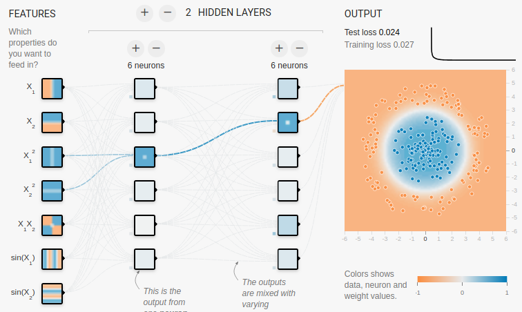
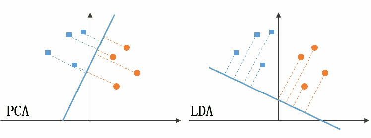
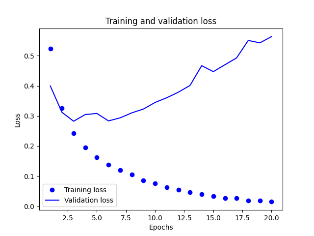
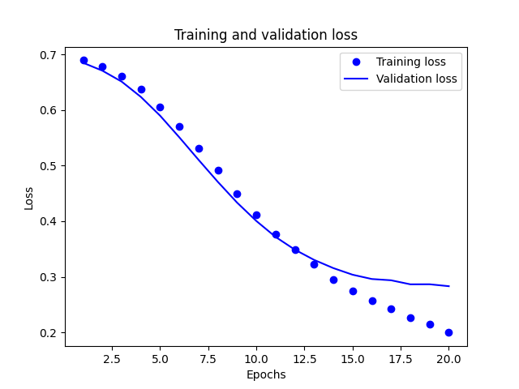
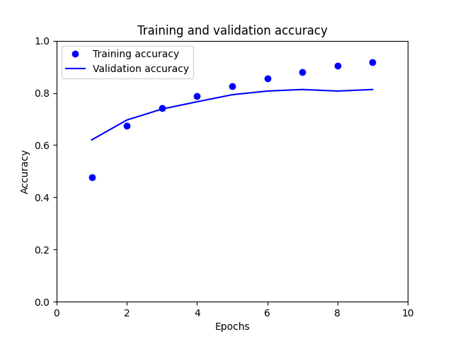
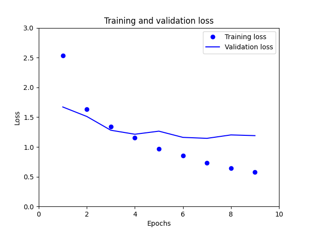
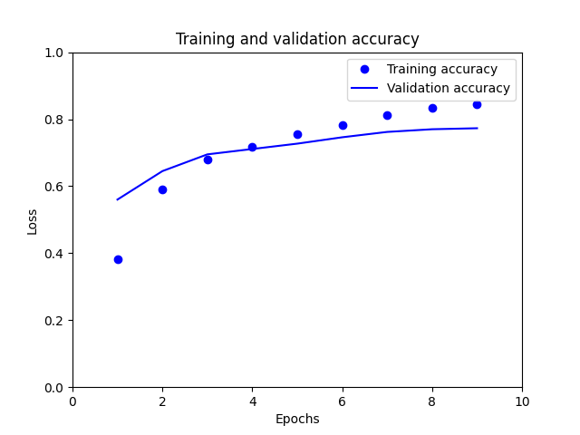
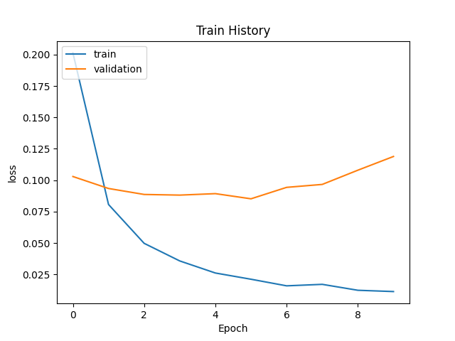

深度學習
Table of Contents

1. 深度學習
那麼多層到底是幾層？一般來說有1-2個隱藏層的神經網絡就可以叫做多層，準確的說是(淺層)神經網絡(Shallow Neural Networks)。隨著隱藏層的增多，更深的神經網絡(一般來說超過5層)就都叫做深度學習(DNN)1。
然而，「深度」只是一個商業概念，很多時候工業界把3層隱藏層也叫做「深度學習」，所以不要在層數上太較真。在機器學習領域的約定俗成是，名字中有深度(Deep)的網絡僅代表其有超過5-7層的隱藏層1。
深度學習是加深層數後的多層神經網路。MNIST 歷年的競賽前幾名都是以 CNN 為基礎，進一步提高辨識準確率的方法還包括整體學習、學習率遞減（learning rate decay）、資料擴增（Data Augmentation, 如利用旋轉、垂直或水平移動輸入影像來小幅改變輸入資料以增加輸入影像張數）。
關於增加層數的重要性，目前還缺乏理論佐證，但從過往的研究或實驗中，有幾點可以說明。
- 在 ILSVRC 這種大型視覺辨識競賽結果中，加深層數的比例多與辨識效能成正比。
- 加深層數可以在減少網路參數的狀況下得到相同成效，透過重叠層級，可以讓 ReLU 等活化函數夾在卷積層之間，進一步提高網路的表現力，因為透過活化函數，可以在網路增加「非線性」的能力，重叠非線性函數，也能達到更複雜的表現力。
- 學習的效率也是加深層數的優點之一，卷積層的神經元會反應出邊界等單純形狀，隨著層數增加，可以反應出紋理、物體部位等特質，依照階層逐漸變複雜。
- 以辨識「狗」為例子，如果要以層數較少的網路來解決這個問題，卷積層就要一次「理解」眾多特徵，還要因應不同拍攝環境帶來的變化，一次處理這些龐大的資料會花費許多學習時間； 如果加深層數，就能用階層分解必須學習的問題，每一層可以處理單純的問題，例如，最初的層級可以只學習邊界，利用少量的學習資料來進行效率化的學習。
- 加深層數可以階層性的傳遞資料，例如，擷取出邊界的下一層會使用邊界資料來學習更高階的問題（如判斷形狀）。
典型的深度學習如圖1，在此例中，輸入為一張手寫數字的影像，經由 4 層的深度學習模型後得知此數字為 4。

Figure 1: 典型的深度神經網路-1
圖2進一步說明網路模型中每一層的作用，可以將每一層網路視為對影像的特殊運算，如此一層一層逐一精煉(purified)，最後得到結果。

Figure 2: 典型的深度神經網路-2
1.1. 深度學習應用領域
1.1.1. 影像辨識:卷積神經網路 CNN
傳統機器學習進行圖片識別，主要是希望能透過原始像數值找出一種適合的分類器(classifier)，但事實證明這麼做不管用，因為信噪比太低。後來的改善方式是由人類挑選出重要特徵，然後由機器學習演算法使用這些「特徵向量(feature vectors)」進行分類判斷。這種特徵提取(feature extraction)的做法確實改善了信噪比，但是如果圖片的重要特點因光線或其他因素難以識別，則精確率會降低很多，而且，事前的人工挑選特徵花去太多人力，以深度學習進行圖片視覺就是設法消除那些既繁瑣又會造成侷限性的特徵選取程序。David Hubel 和 Torsten Wiesel 發現動物視覺皮層有一部份專門負責檢測邊緣，1959 年他們把電極插入貓的大腦中，在螢幕上投射出黑白圖案，發現有些神經元只有在出現垂直線時被激發，有些則只有在出現水平線時被激發，有些則是只有看到某特定角度的線時被激發。進一步的研究確認，視覺皮層是以分層的結構組織起來的，每一層都會根據前一層所偵測到的特徵得出進一步的訊息，從線條、輪廓、形狀，一直到整個物體。由上述研究得來的第一個概念就是「過濾器(filter)」。
典型的過濾器如下：
- blur = [[1./9, 1./9, 1./9], [1./9, 1./9, 1./9], [1./9, 1./9, 1./9]]
Figure 3: 模糊過濾器
- edges = [[1, 1, 1], [1, -8, 1], [1, 1, 1]]

Figure 4: 邊緣強調過濾器
圖3為一 3*3 的模楜強過濾器產生的效果，圖4則為邊緣強週器的效果。過濾器可以改變圖形，並顯示可用於「圖形偵測」和「圖形分類」的特徵。例如，為了對數字進行分類，內部的顏色並不重要，此時，邊緣強調過濾器就有助於辨識數字的一般形狀，進而提升數字識別效能。
我們可以用「類神經網路」的方式來理解「過濾器」，將我們定義的「過濾器」視為一組加權，最終的值又做為下一層的啟動值（輸入）。如圖5，過濾器會逐次掃過整張圖，然後建立一組新的圖片，

Figure 5: 過濾器的掃瞄計算
1.1.2. 語言模型
1.1.3. 棋盤遊戲
大約在 50 年代，研究人員開始建立具有 AI 的遊戲，這些遊戲以「西洋跳棋」(checkers)和「西洋棋」(chess)為主，這兩種遊戲有一些共同之處：
- 它們是所謂的「零和遊戲」(zero-sum games)，即一個玩家所得到的奬勵就來自另一個玩家相對應的損失。另一類相對的遊戲則是指兩位玩家可以選擇合作，如 「囚徒困境」(prisoner’s dilemma)。
- 它們都具有「完全資訊」(perfect information)，兩方不同玩家都知道遊戲的整個狀態；另一種相對的遊戲則是撲克。因為得知目前狀態就可以導出最好的行動，所以這種遊戲可以減少 AI 所需處理問題的複雜度。
- 兩種遊戲都有「明確性」(deterministic): 如果一個玩家下了一步，這步就會導致一個明確的下一個狀態；另一種相對的遊戲中，玩家下的一步可能是丟一次骰子或是抽一張牌，這就無法導致一個明確的下一步。
1.1.4. 電腦遊戲
1.1.5. 異常偵測
1.1.6. 物體偵測
從影像中分析出物體位置，進行分類。物體偵測比物體辨識的問題更困難，最著名的方式為 R-CNN，R-CNN 的實際處理流程有點複雜，包括把影像變形成正方形，使用 SVM 分類。
1.1.7. 影像分割
指針對影像以像素標籤進行類別分類，利用神經網路進行影像分割，最簡單的方法就是以全部的像素為對象，再依照各個像素進行推論處理。典型做法為 FCN(Fully Convolutional Network)，相對於一般 CNN 含有全連接層的情況，FCN 把全連接層更換成「執行相同動作的卷積層」，在物體辨識的網路全連接層中，中間資料的空間大小當作排列成 1 行節點來處理。
1.1.8. 產生圖說
針對影像自動產生說明該影像的內容，代表性方法為 NIC (Neural Image Caption)模型，NIC 是由處理多層 CNN 與自然語言的 RNN(Recurrent Neural Network, 循環神經網路)所構成，RNN 指擁有遞迴功能的網路，常用在自然語言、時間序列資料等有連續性的資料上。
1.1.9. 影像風格轉換
代表論文為 A Neural Algorithm of Artistic Style。
1.1.10. 產生影像
從零開始產生「臥室」影像，代表性方法為 DCGAN(Deep Convolutional Generative Adversarial Network)。DCGAN 利用大量影像（如大量拍攝臥室影像）來學習，結束學習後，只要利用該模組就能產生新的影像。DCGAN 運用了 Generator(生成器)與 Discriminator(判別器)等兩個神經網路，Generator 產生與本尊相似的影像，Discriminator 判斷是否為本尊，即，確定是由 Generator 產生的影像或是實際拍攝的影像。兩者彼此制䚘學習，Generator 可以學習到更精巧的偽裝影像技術，Discriminator 則學習更高的鑑定技能，二者相互切磋成長，最終，Generator 能學會畫出與本尊一模一樣的影像。
1.1.11. 自動駕駛
最近在辨識周圍環境的技術中，深度學習的能力頗受期待，例如以 CNN 為基礎的網路 SegNet 即可精確辨識走路的環境。
1.1.12. Deep Q-Network (強化學習)
人類是透過嚐試錯誤來學習，例如騎腳踏車，在電腦領域中，也有從嚐試錯誤的過程中進行自主學習的例子，稱為強化學習(reinforcement learning)。在強化學習中，代理人(Agent)根據環境狀況來決定要採取的行動，利用該行動讓㼈境變化。隨環境變化，代理人獲得某些報酬。強化學習的目的是決定代理人的行動方針，以獲得更好的報酬。典型的 DQN 可以讓遊戲自動學習，達到超越人類等級的能力，使用 DQN 的 CNN 可以輸入遊戲影像(如連續 4 個畫面)，最後針對遊戲的控制器動作(搖桿的動作與按鈕)分別輸出該動作的「價值」。由於 DQN 的輸入只是影像，所以不用隨著遊戲的不同來改變設定，同一套 DQN 可以學習「小精靈」與「Atari」。DQN 與 AlphaGo 都是 Google Deep Mind 公司的研究。* ex: 入侵偵測系統
1.2. 深度學習的類型
1.2.1. VGG
VGG 為由卷積層與池化層構成的基本 CNN。特色是含權重層（卷積層及全連接層）共 16-19 層，有時會稱為 VGG16 或 VGG19。VGG 由於結構非常簡單，應用性高，所以多數技術人員喜歡使用以 VGG 為最基礎的網路。
1.2.2. GoodLeNet
GoogLeLeNet 基本上與 CNN 相同，其特色是不僅會往垂直方向加深網路，也會往水平方向加深。GoogLeNet 往水平方向的做法稱為「Inception 結構」。
1.2.3. ResNet
ResNet 是由 Microsoft 團隊開發的網路，特色是具有能加深比過去更多層的「結構」，為了解決因加深過多層數無法順利學習的問題，ResNet 導入了「跳躍結構」（也稱為捷徑或分流）。跳躍結構是「直接」傳遞輸入資料，所以在反向傳播時，也會將上層的梯度「直接」傳遞給下層。透過這種跳躍結構，不用擔心梯度變小（或變得太大），可以把「具有意義的梯度」傳遞給上層。因此，跳躍結構能減少之前因為加深層數，使得梯度變小，出現梯度消失的問題。
1.3. 深度學習的高速化
由於大數據與大型網路的關係，使得深度學習必須進行大量運算，過去我們使用 CPU 來進行運算，如今多數深度學習的框架多支援 GPU，甚至支援以多個 GPU 與多台裝置進行分散式學習。GPU 原本是圖形專用處理器，可以快速處理平行運算，GPU 運算的目標是把其強大的效能運用在各種用途。比較 CPU 與 GPU 在 AlexNet 的學習，CPU 需花費 40 天以上，GPU 則可以在 6 天內完成。
利用 GPU 除了可以大幅提升深度學習的運算速度，但是一旦變成多層網路時，就需要花費數天或數週的時間來學習，Google 的 TensorFlow、Microsoft 的 CNTK 便是針對分散式學習來開發的，100 個分散式的 GPU 可以提升比單一 GPU 高到 56 倍的速度，意味著原本要有天才能完成的學習，只要 3 小時就可以結束。
在深度學習的高速化過程中，包含運算量在內，記憶體容量、匯流排頻寬等，都會造成瓶頸，就記憶體容量來說，必須考慮到大量權重參數及中間資料會儲存在記憶體的情況。至於匯流排頻寛，一旦通過 GPU(或 CPU)的匯流排資料超過一定的限制，該處就會形成瓶頸，所以，最好能儘量減少通過網路的資料位元數。
1.3.1. GPU v.s. CPU
- CPU 是由幾個每次可處理數個獨立「執行緒」(threads)的核心(core)所組成；GPU 則有數百個這樣的核心，同時可以處理上千個執行緒
- CPU 主要是線性執行； GPU 則是個高度平行化的單元
- CPU 的發展主要致力於最佳化系統的遲滯時間，讓系統能有迅速流暢的反應；GPU 的發展則是朝頻寬最佳化努力。在深度神經網路中，頻寬為主要的系統瓶頸
- GPU 的 Level 1 cache 比 CPU 快且大，在深度神經網路中，大部份的資料都會再次被使用到
1.4. 深度學習的未來方向
對於大多數深度學習實作者，推動深度學習的最佳途徑並不是創造出更高級的最佳化演算法，相反的，過去幾十年來絕大多數深度學習的突破，都是因為發現了更容易訓練的架構，而不是因為與那些討厭的誤差曲面搏鬥所得到的成果。
2. 深度學習運作原理
2.1. Layer, 損失函數與優化器
前節深度學習中的每一「層」(layer)如何運作，取決於儲存於該層的權重(weight)，而權重是由多個數字組成。從技術層面來看，layer 是由各個權重參數(parameters)來和輸入的資料進行運算以執行資料轉換的工作(如圖6)。而所謂的學習，指的就是幫助神經網路的每一層找出適當的權重值，讓神經網路可以將輸入的訓練資料經由與權重的運作推導出接近標準答案的運算結果(即圖6中的預測 Y)。然而，這在實際運作上是十分困難的，因為一個深度神經網路可以包含數千萬個權重，此外，其中一個權重被改變後，往往會影響其他權重的運作。

Figure 6: nn 中 layer 的 parameter
為了提高神經網路的效能(預測的準確率)，我們要即時的掌握目前的輸出(Y)與真正的標準答案還差多少，這個評估由神經網路的損失函數(loss function, 或稱目標函數, objective function)來負責，如圖7。損失函數會取得神經網路的預測結果與標準答案二者的損失分數(又稱差距分數)，做為每一次學習的表現效能之評估標準。

Figure 7: 損失函數
而深度學習的基本工作就是使用損失函數做為回饋訊息來一步步微調權重，逐步降低每次學習的損失分數，最終目標在於讓損失函數結果達到最小，而這個微調工作則由優化器(optimizer，也稱最佳化函數)來執行。優化器實作了反向傳播演算法(Backpropagation)，這也是深度學習中的核心演算法，藉此來週整權重。

Figure 8: 優化器
那麼，在最初一次的學習，權重的值是如何設定的呢？可以先全數設為零，但更常用的做法是隨機指定，隨著多次學習後，權重會逐步往正確的方向調整，損失分數也會慢慢降低。
2.2. 梯度
2.2.1. 深度網路誤差曲面的局部極小值
最佳化深度學習模型的挑戰在於我們只能運用局部的訊息去推斷誤差曲面的整體結構，雖然梯度遞減法可以確保我們找到極小值，但若曲面結構非碗型（即，存在不只一個谷地，或稱局部極小值），則即便我們探用隨機誤差曲面演算法，也是無法解決問題。
局部極小值與「模型可區分性(model indentifiability)」的概念有關，在全連接(fully-conntectd)的正向饋送神經網路中，同一層的神經元就算重新排列組合，網路末端還是會出現相同的最終輸出，結果，一層有 n 個神經元的網路就存在\(n!\)種排列方式，對於有 l 層的深度網路而言，則其等效配置方式就有\(n!^l\)種。結果，不論送進什麼輸入值，表現出來的行為也全都相同而無法區分；換言之，無論用的是訓練組、驗證組、測試組的樣本，所有的這些等效配置都會表現出相同的誤差。
局部極小值不是太嚴重的問題，但若找到的是「假的（spurious）」局部極小值則就是個大問題，所謂假的局部極小值指的是它在神經網路中所對應的權重值，會比真正的整體最小值所對應的權重值帶來更大的誤差），從事深度學習的人總是把訓練深度網路時所遇到的問題歸咎於假的局部極小值。想解決這個問題，有個天真的想法：在訓練深度神經網路的過程中，同時畫出誤差函數隨時間而變的值，但是這個策略並不能針對誤差曲面提供足夠的訊息，因為我們很難判斷誤差的變化是來自曲面本身的「顛簸」或是因為遲遲無法找到最佳的前進方向。
Goodfellow 等人2（Google 和 Standford 合作的研究小組）在 2014 年發表一篇論文試圖解決上述問題，他們沒有去分析誤差的函數隨時間而變的情況，而是在隨機選取的初始化參數向量和最後真正的最佳點之間，運用線性插值取點，再觀察這些插值點在誤差曲面上呈現什麼樣的變化，也就是說，只要給定一個隨機初始化參數向量\(\theta_i\)，加上隨機梯度遞減法(SBD)最後找到的最佳點\(\theta_f\)，我們就可以沿著線性插值的每個點，計算出相應的誤差函數值\(\theta_\alpha = \alpha \cdot \theta_f + (1-\alpha) \cdot \theta_i \)。
Goodfellow 等人的研究顯示，對於各種具有不同型態神經元的實際網路而言，參數空間中隨機選取的初始點數與隨機梯度遞減最佳解之間直接相連的路經，並不會受到局部極小值的影響；換言之，我們應該把重點放在「尋找合適的前進方向」上。
2.2.2. 找出正確的移動軌跡
梯度通常不是尋找最小值時最好的移動軌跡參考指標，最佳應用時機是等高線為完美㘣形，然而多數等高線均為楕圓，此時梯度所指的方向就會與正確方向有所偏差。對參數空間中的每個權向\(w_i\)來說，梯度計算的是\(\frac{\partial{E}}{\partial{w_i}}\)，代表當\(w_i\)被改變時，誤差如何隨之變化的程度。因此，只要綜合考慮參數空間的所有權重，梯度就可以給出遞減最快的方向；然而，當我們朝著這個方向移動一步後，此時的梯度又會隨之改變。
進一步量化我們往某方向移等時腳下梯度變化的程度，我們必須計算二階導函數，即求出\(\farc{\partial{\frac{ \parital{E}}{\partial{w_j} }}}{\partial{w_i}}\)，代表當我們改變\(w_i\)的值時，梯度中的分量\(w_j\)如何隨之而改變。將這些訊息編寫之的矩陣稱之為「海森矩陣 (Hessian matrix)」，在描述誤差曲面時，如果我們往遞減最快方向移動，腳下的梯度也跟著改變，我們就會說這是個病態(ill-conditioned)矩陣。
動量
病態海森矩陣的問題往往會以梯度大幅波動的形式表現出來，因此我們可以考慮如何在訓練期間消除這些波動。想像一顆球滾落至誤差曲面中，最終一定會抵達曲面的最低點，而且不會有大幅波動。球的平滑滾落動作不只受到加速度的影響，也受到「速度」的影響，而球的速度以一種記憶的形式讓球往最低方向更有效的累積移動量，同時抵消正交(orthogonal)方向上的振盪加速度；為了模擬出球體的自然動作，我們可以在最佳化演算法中以某種方式引入速度的概念，也就是追蹤之前梯度的「指數加權衺減量」。換言之，我們用一個「動量超參數」\(m\)，以決定在新的更新值中，前一次速度要保留多少比例，藉此把我們對前一個梯度值的「記憶」添加至目前最新的梯度值中。這種做法所運用到的概念通常就動為「動量(momentum)」。
Nesterow 動量
為 Sutskever 等人在 2013 年，基於改進古典動量技術所提出的動量替代方案
共軛梯度遞減(conjugate gradient descent)
這是試圖改進單純最陡遞減法的另一做法，最陡遞減法是計算梯度方向，然後沿此方向搜索最小值，跳到最小值處再重新計算，實際情況則會大幅波動，這是因為每次往最陡方向移動，往往會稍微抵消另一方向的進展，補救方式是不往最陡方向移動，而是相對先前所選擇的方向，往其「共軛方向(conjugate direction)」移動。
BFGS(Broyden-Fletcher-Goldfarb-Shanno)
以迭代方式計算海森矩陣的逆矩陣，以有效最佳化參數向量
L-BFGS
解決 BFGS 佔用記憶體的問題
2.2.3. 學習率自動調整
AdaGrad
根據累積歷史梯度，對整體學習率進行自動調整 由 Duchi 等人在 2011 年提出
RMSProp
累似以動量抑制梯度波動的做法，改以指數加權移動平均，將很久以前的值也納入考慮。
Adam
可視為 RMSProp 與動量的變種組合
AdaDelta
2.3. 最佳選擇
對於大多數深度學習實作者，推動深度學習的最佳途徑並不是創造出更高級的最佳化演算法，相反的，過去幾十年來絕大多數深度學習的突破，都是因為發現了更容易訓練的架構，而不是因為與那些討厭的誤差曲面搏鬥所得到的成果。
3. 資料預處理
進行數運模式運算之前，需要進行的資料預處理工作大致可分為以下幾點：
- 數據遺漏值處理
- 數據分類編碼
- 數據訓練集與測試集之分割
- 數據特徵選取
3.1. 處理數據遺漏
現實世界中可能會因各種原因導致數據缺失或遺漏(如問卷被刻意留白)，這些部份通常會以「空白」、「NaN」或「NULL」來取代。
3.1.1. 遺漏值的識別
1: csv_data = '''A,X,B,C,D 2: 1.0,,2.0,3.0,4.0 3: 5.0,,6.0,,8.0 4: 10.0,,11.0,12.0 5: ,,,,''' 6: import sys 7: import pandas as pd 8: # python 2.7需進行unicode轉碼 9: if (sys.version_info < (3, 0)): 10: csv_data = unicode(csv_data) 11: # 讀入程式檔中的csv資料 12: from io import StringIO 13: df = pd.read_csv(StringIO(csv_data)) 14: print(df) 15: # 列出每行有的null個數 16: print(df.isnull().sum()) 17: # access the underlying NumPy array 18: # via the `values` attribute 19: df.values 20: 21: # 剛除有遺失值的資料列 22: print('刪掉有遺失值的列:df.dropna(axis=1)') 23: print(df.dropna(axis=0)) 24: # 剛除有遺失值的資料行 25: print('刪掉有遺失值的行:df.dropna(axis=1)') 26: print(df.dropna(axis=1)) 27: # 剛除整列為NaN者 28: print('剛除整行為NaN者:df.dropna(how=\'all\')') 29: print(df.dropna(how='all') ) 30: # 刪除有值個數低於thresh的列 31: print('刪除有值個數低於thresh的列:df.dropna(thresh=4)') 32: print(df.dropna(thresh=4)) 33: # 刪除特定行(如第C行)中有NaN之列 34: print('刪除特定行(如第C行)中有NaN之列:df.dropna(subset=[\'C\'])') 35: print(df.dropna(subset=['C']))
A X B C D
0 1.0 NaN 2.0 3.0 4.0
1 5.0 NaN 6.0 NaN 8.0
2 10.0 NaN 11.0 12.0 NaN
3 NaN NaN NaN NaN NaN
A 1
X 4
B 1
C 2
D 2
dtype: int64
刪掉有遺失值的列:df.dropna(axis=1)
Empty DataFrame
Columns: [A, X, B, C, D]
Index: []
刪掉有遺失值的行:df.dropna(axis=1)
Empty DataFrame
Columns: []
Index: [0, 1, 2, 3]
剛除整行為NaN者:df.dropna(how='all')
A X B C D
0 1.0 NaN 2.0 3.0 4.0
1 5.0 NaN 6.0 NaN 8.0
2 10.0 NaN 11.0 12.0 NaN
刪除有值個數低於thresh的列:df.dropna(thresh=4)
A X B C D
0 1.0 NaN 2.0 3.0 4.0
刪除特定行(如第C行)中有NaN之列:df.dropna(subset=['C'])
A X B C D
0 1.0 NaN 2.0 3.0 4.0
2 10.0 NaN 11.0 12.0 NaN
雖然刪除包含遺漏值的數據似乎是個方便的方法，但終究可能會刪除過多的樣本，導致分析的結果並不可靠；或是因為刪除了特徵的時候，卻失去了重要的資訊。
3.2. 填補遺遺漏值
最常見的「插補技術」之一為「平均插補」(mean imputation)，即，以整個特徵行的平均值來代替遺漏值。
1: csv_data = '''A,X,B,C,D 2: 1.0,,2.0,3.0,4.0 3: 5.0,,6.0,,8.0 4: 10.0,,11.0,12.0 5: ,,,,''' 6: import sys 7: import pandas as pd 8: # python 2.7需進行unicode轉碼 9: if (sys.version_info < (3, 0)): 10: csv_data = unicode(csv_data) 11: # 讀入程式檔中的csv資料 12: from io import StringIO 13: df = pd.read_csv(StringIO(csv_data)) 14: 15: # impute missing values via the column mean 16: from sklearn.preprocessing import Imputer 17: # axis=0: 以行的平均值來補 18: # axis=1: 以列的平均值來補 19: # strategy的選項有: median(中位數)、most_freqent(最頻繁出現者) 20: # most_freqent在做為分類特徵時很有用 21: imr = Imputer(missing_values='NaN', strategy='mean', axis=0) 22: imr = imr.fit(df.values) 23: imputed_data = imr.transform(df.values) 24: print(df) 25: print(imputed_data)
A X B C D
0 1.0 NaN 2.0 3.0 4.0
1 5.0 NaN 6.0 NaN 8.0
2 10.0 NaN 11.0 12.0 NaN
3 NaN NaN NaN NaN NaN
[[ 1. 2. 3. 4. ]
[ 5. 6. 7.5 8. ]
[10. 11. 12. 6. ]
[ 5.33333333 6.33333333 7.5 6. ]]
Imputer 類別在 scikit-learn 中屬於 transformer 類別，主要的工作是做「數據轉換」，這些 estimator 有兩種基本方法：fit 與 transform，fit 方法是用來進行參數學習。
3.3. 分類特徵編碼
3.3.1. categorical feature
真實世界的數據集往往包含各種「類別特徵」(categorical feature)，類別特徵可再分為
- nominal feature: 名義特徵
- ordinal feature: 次序特徵
1: import pandas as pd 2: df = pd.DataFrame([['green', 'M', 10.1, 'class2'], 3: ['red', 'L', 13.5, 'class1'], 4: ['blue', 'XL', 15.3, 'class2']]) 5: 6: df.columns = ['color', 'size', 'price', 'classlabel'] 7: print(df)
color size price classlabel 0 green M 10.1 class2 1 red L 13.5 class1 2 blue XL 15.3 class2
3.3.2. 對應 ordinal feature
自定一個 mapping dictionary，即 size_mapping，然後將 classlabel 對應到 size_mapping 中的鍵值(程式第11行)。
1: import pandas as pd 2: df = pd.DataFrame([['green', 'M', 10.1, 'class2'], 3: ['red', 'L', 13.5, 'class1'], 4: ['blue', 'XL', 15.3, 'class2']]) 5: 6: df.columns = ['color', 'size', 'price', 'classlabel'] 7: ### Mapping ordinal features 8: size_mapping = {'XL': 3, 9: 'L': 2, 10: 'M': 1} 11: df['size'] = df['size'].map(size_mapping) 12: print(df)
color size price classlabel 0 green 1 10.1 class2 1 red 2 13.5 class1 2 blue 3 15.3 class2
3.3.3. 對應 nominal feature
許多機器學習的函式庫需要將「類別標籤」編碼為整數值。方法之一是以列舉方式為這些 nominal features 自 0 開始編號，先以 enumerate 方式建立一個 mapping dictionary: class_mapping(程式第10行)，然後利用這個字典將類別特徵轉換為整數值。
此外，也可以利用已產生的對應字典，藉由借調 key-value 來產生「反轉字典」(第18行)，將對調產生的整數還原回原始類別特徵。
scikit-learn 中有一個更為方便的 LabelEncoder 類別則可以直接完成上述工作(第25行)。
1: import pandas as pd 2: df = pd.DataFrame([['green', 'M', 10.1, 'class2'], 3: ['red', 'L', 13.5, 'class1'], 4: ['blue', 'XL', 15.3, 'class2']]) 5: 6: df.columns = ['color', 'size', 'price', 'classlabel'] 7: # 建利對應字典 8: import pandas as np 9: class_mapping = { 10: label: idx for idx, label in enumerate(np.unique(df['classlabel'])) 11: } 12: print(class_mapping) 13: # 將類別特徵轉換為整數值 14: df['classlabel'] = df['classlabel'].map(class_mapping) 15: print(df) 16: 17: # 產生反轉字典，將整數還原至原始的類別標籤 18: inv_class_mapping = {v: k for k, v in class_mapping.items()} 19: df['classlabel'] = df['classlabel'].map(inv_class_mapping) 20: print(df) 21: 22: # Label encoding with sklearn's LabelEncoder 23: from sklearn.preprocessing import LabelEncoder 24: class_le = LabelEncoder() 25: y = class_le.fit_transform(df['classlabel'].values) 26: print(y) 27: df['classlabel'] = y 28: print(df) # 類別與數字的對應不一定與自訂字典一致 29:
{'class2': 0, 'class1': 1}
color size price classlabel
0 green M 10.1 0
1 red L 13.5 1
2 blue XL 15.3 0
color size price classlabel
0 green M 10.1 class2
1 red L 13.5 class1
2 blue XL 15.3 class2
[1 0 1]
color size price classlabel
0 green M 10.1 1
1 red L 13.5 0
2 blue XL 15.3 1
3.3.4. 對 nominal feature 執行 one-hot encoding
scikit-learn 的 LabelENcoder 類別可以用來將「類別特徵」編碼為整數值，但這樣會引發另一個問題，如果我們將上述資料中的 color 特徵轉換為整數值，如下：
1: import pandas as pd 2: df = pd.DataFrame([['green', 'M', 10.1, 'class2'], 3: ['red', 'L', 13.5, 'class1'], 4: ['blue', 'XL', 15.3, 'class2']]) 5: 6: df.columns = ['color', 'size', 'price', 'classlabel'] 7: 8: X = df[['color', 'size', 'price', 'classlabel']].values 9: 10: # 以LabelEncoder轉換 11: from sklearn.preprocessing import LabelEncoder 12: color_le = LabelEncoder() 13: print(X[:,0]) 14: X[:,0] = color_le.fit_transform(X[:,0]) 15: print(X[:,0]) 16:
['green' 'red' 'blue'] [1 2 0]
由輸出結果可以發現，經過類別編碼後的顏色特徵，由原本不具次序的特徵變成存在大小關係(red>green>blue)，這明顯會影響 model 運算的結果。針對此一問題，常見的解決方案是 one-hot encoding，其原理是：對特徵值中的每個值，建立一個新的「虛擬特徵」(dummy feature)。方法有二：
- 利用 ColumnTransformer 函式庫的 ColumnTransformer 類別，將特徵值轉換 One-Hot Encoding 的對應矩陣，如程式第24行。
- 利用 Pandas 套件的 get_dummies 類別，一次將矩陣內指定之 column 轉換為 One-Hot encoding，如程式第28行。這種轉換只有字串數據會被轉換，其他內容則否。
1: import pandas as pd 2: df = pd.DataFrame([['green', 'M', 10.1, 'class2'], 3: ['red', 'L', 13.5, 'class1'], 4: ['blue', 'XL', 15.3, 'class2']]) 5: 6: df.columns = ['color', 'size', 'price', 'classlabel'] 7: 8: X = df[['color', 'size', 'price', 'classlabel']].values 9: print(df) 10: 11: # one-hot encoding: ColumnTransformer / fit_transform 12: from sklearn.preprocessing import LabelEncoder 13: from sklearn.preprocessing import OneHotEncoder 14: from sklearn.compose import ColumnTransformer 15: import numpy as np 16: 17: X = df[['color', 'size', 'price']].values 18: 19: ct = ColumnTransformer( 20: # The column numbers to be transformed (here is [0] but can be [0, 1, 3]) 21: # Leave the rest of the columns untouched 22: [('OneHot', OneHotEncoder(), [0])], remainder='passthrough' 23: ) 24: print(ct.fit_transform(X)) 25: 26: # on-hot encoding: pandas / get_dummies 27: import pandas as pd 28: print(pd.get_dummies(df[['price', 'color', 'size']]))
color size price classlabel 0 green M 10.1 class2 1 red L 13.5 class1 2 blue XL 15.3 class2 [[0.0 1.0 0.0 'M' 10.1] [0.0 0.0 1.0 'L' 13.5] [1.0 0.0 0.0 'XL' 15.3]] price color_blue color_green color_red size_L size_M size_XL 0 10.1 0 1 0 0 1 0 1 13.5 0 0 1 1 0 0 2 15.3 1 0 0 0 0 1
應用 one-hot encoding 時，我們必須留意它所引入的「多元共線性」(multicollinearity)問題，這在某些狀況下(如要計算反矩陣)可能會產生一些問題，若特徵間有高度相關，則會難以計算反矩陣，導致數值不穩定的舘計。
3.4. 數據集分割
1: # # Partitioning a dataset into a seperate training and test set 2: df_wine = pd.read_csv('https://archive.ics.uci.edu/' 3: 'ml/machine-learning-databases/wine/wine.data', 4: header=None) 5: 6: # if the Wine dataset is temporarily unavailable from the 7: # UCI machine learning repository, un-comment the following line 8: # of code to load the dataset from a local path: 9: 10: # df_wine = pd.read_csv('wine.data', header=None) 11: 12: 13: df_wine.columns = ['Class label', 'Alcohol', 'Malic acid', 'Ash', 14: 'Alcalinity of ash', 'Magnesium', 'Total phenols', 15: 'Flavanoids', 'Nonflavanoid phenols', 'Proanthocyanins', 16: 'Color intensity', 'Hue', 'OD280/OD315 of diluted wines', 17: 'Proline'] 18: 19: print('Class labels', np.unique(df_wine['Class label'])) 20: df_wine.head() 21: 22: X, y = df_wine.iloc[:, 1:].values, df_wine.iloc[:, 0].values 23: 24: X_train, X_test, y_train, y_test = train_test_split(X, y, 25: test_size=0.3, 26: random_state=0, 27: stratify=y) 28:
3.5. 正規化(normalization)
「特徵縮放」(Feature scaling)是資料預處理的一個關鍵，「決策樹」和「隨機森林」是極少數無需進行 feature scaling 的分類技術；對多數機器學習演算法而言，若特徵值經過適當的縮放，都能有更佳成效。
Feature scaling 的重要性可以以下例子看出，假設有兩個特徵值(a, b)，其中 a 的測量範圍為 1 到 10，b 的測量值範圍為 1 到 100000，以典型分類演算法的做法，一定是忙於最佳化特徵值 b；若以 KNN 的演算法，也會被特徵值 b 所技配。
正規化有兩種常用的方法，可以將不同規模的特徵轉化為相同的規模：常態化(normalization)和標準化(standardization)：
3.5.1. 常態化
將特徵值縮化為 0~1 間，這是「最小最大縮放」(min-max scaling)的一個特例，某一特徵值的常態化做法如下：
\[x_{norm}^i = \frac{x^i-x_{min}}{x_{max}-x_{min}}\]
若以 scikit-learn 套件來完成實作，其程式碼如下：
1: from sklearn.preprocessing import MinMaxScaler 2: mms = MinMaxScaler() 3: X_train_norm = mms.fit_transform(X_train) 4: X_test_norm = mms.fit_transform(X_test)
3.5.2. 標準化
雖說常態化簡單實用，但對許多機器學習演算法來說(特別是梯度下降法的最佳化)，標準化則更為實際，我們可令標準化後的特徵值其平均數為 0、標準差為 1，這樣一來，特徵值會滿足常態分佈，進而使演算法對於離群值不那麼敏感。標準化的公式如下：
\[x_{std}^i = \frac{x^i-\mu_x}{\sigma_x}\]
若以 scikit-learn 套件來完成實作，其程式碼如下：
1: from sklearn.preprocessing import StandardScaler 2: stdsc = StandardScaler() 3: X_train_std = stdsc.fit_transform(X_train) 4: X_test_std = stdsc.transform(X_test)
3.6. 選取有意義的特徵
overfitting 的產生原因是模型過度遷就於訓練數據，導致面對新數據(測試集)時成效不彰，我們稱這種模型具有較高變異性(high variance)，一般的解決策略有：
- 收集更多的訓練數據集
- 經由正規化，對於過度複雜的模型引進一個「懲罰」(penalty)
- 以較少的參數做出較簡單的模型(使用更簡單的模型)
- 減少數據維度
3.6.1. L1L2 regularzation
一個典型的解釋3如圖9，“我們知道, 過擬合就是所謂的模型對可見的數據過度自信, 非常完美的擬合上了這些數據, 如果具備過擬合的能力, 那麼這個方程就可能是一個比較複雜的非線性方程 , 正是因為這裡的 x^3 和 x^2 使得這條虛線能夠被彎來彎去, 所以整個模型就會特別努力地去學習作用在 x^3 和 x^2 上的 c, d 參數. 但是我們期望模型要學到的卻是 這條藍色的曲線. 因為它能更有效地概括數據.而且只需要一個 y=a+bx 就能表達出數據的規律. 或者是說, 藍色的線最開始時, 和紅色線同樣也有 c d 兩個參數, 可是最終學出來時, c 和 d 都學成了 0, 雖然藍色方程的誤差要比紅色大, 但是概括起數據來還是藍色好. 那我們如何保證能學出來這樣的參數呢? 這就是 l1 l2 正規化出現的原因啦.”

Figure 9: 過擬合問題
對於上述訓練出的兩個方程式，我們可以用\((y_{\theta}(x)-y)^2\)來計算模型預測值\(y(x)\)和真實數據\(y\)的誤差，而 L1, L2 就只是在這個誤差公式後加上一些式子來修正這個公式(如圖10)，其目的在於讓誤差的最佳化不僅取決於訓練數據擬合的優劣，同時也取決於參數值(如 c,d)的大小；L2 正規化以參數平方來做為計算方式，L1 正規化則是計算每個參數的絕對值。

Figure 10: L1,L2 正規化公式
進一步以 Tensorflow Playground 的圖示來觀察 L1,L2 正規化的差異4，如果把正規化(Regularization)設定為 L1，再執行訓練。可以看到很多權重都被設定為 0，特徵輸入與隱藏層的神經元被大大的減少，如圖11，整個模型的複雜度簡化很多。L1 正規化確實有助於將我們的複雜模型縮減為更小的泛化模型。添加正規化後，我們看到無用的功能全部變為零，並且連接線變得稀疏並顯示為灰色。倖存下來的唯一特徵是 x_1 平方和 x_2 平方，這是有道理的，因為這 2 個特徵加在一起就構成了一個圓的方程。

Figure 11: L1 正規化
反觀 L2 正規化，當我們訓練它時，每個權重與神經元都還是處於活動狀態，但是非常虛弱，如圖12，L1 正規化使用其中一個特徵而將某些拋棄，而 L2 正規化將同時保留特徵並使權重值保持較小。因此，使用 L1，您可以得到一個較小的模型，但預測性可能較低。。所以：
- L1 正規化：有可能導致零權重，因刪除更多特徵而使模型稀疏。
- L2 正規化：會對更大的權重值造成更大的影響，將使權重值保持較小。

Figure 12: L2 正規化
3.7. 循序特徵選擇法
另一種降低模型複雜度以避免過度擬合的方式是經由「特徵選擇」(feature selection)來做「降維」(dimensionality reduction)，降維的做法有二：
- 特徵選擇：feature selection, 由原本的特徵中，選出一個子集合
- 特徵提取：feature extraction，由原本的特徵中，導出資訊來建構新的特徵
循序特徵選擇法(sequential feature selection)為貪婪演算法的一種，目標在移除不相關或相關較低的特徵，以提高計算效率，這對於不支援「正規化」的演算法來說是很有用的。「循序向後選擇」(Sequential Backward Selection, SBS)便是一個典型的循序特徵選擇法，其做法是逐一從特徵空間中移除特徵，直到只剩下所要的特徵個數。為了達到這個目的，我們要定義一個最小化的「準則函數」(criterion function), 這個準則可以簡化為「模型在移除某特徵前/後的效能差異。SBS 的 python 實作如下：
1: # ## Sequential feature selection algorithms 2: from sklearn.base import clone 3: from sklearn.metrics import accuracy_score 4: from itertools import combinations 5: class SBS(): 6: def __init__(self, estimator, k_features, scoring=accuracy_score, 7: test_size=0.25, random_state=1): 8: self.scoring = scoring 9: self.estimator = clone(estimator) 10: self.k_features = k_features 11: self.test_size = test_size 12: self.random_state = random_state 13: 14: def fit(self, X, y): 15: 16: X_train, X_test, y_train, y_test = train_test_split(X, y, test_size=self.test_size, 17: random_state=self.random_state) 18: 19: dim = X_train.shape[1] 20: self.indices_ = tuple(range(dim)) 21: self.subsets_ = [self.indices_] 22: score = self._calc_score(X_train, y_train, 23: X_test, y_test, self.indices_) 24: self.scores_ = [score] 25: 26: while dim > self.k_features: 27: scores = [] 28: subsets = [] 29: 30: for p in combinations(self.indices_, r=dim - 1): 31: score = self._calc_score(X_train, y_train, 32: X_test, y_test, p) 33: scores.append(score) 34: subsets.append(p) 35: 36: best = np.argmax(scores) 37: self.indices_ = subsets[best] 38: self.subsets_.append(self.indices_) 39: dim -= 1 40: 41: self.scores_.append(scores[best]) 42: self.k_score_ = self.scores_[-1] 43: 44: return self 45: 46: def transform(self, X): 47: return X[:, self.indices_] 48: 49: def _calc_score(self, X_train, y_train, X_test, y_test, indices): 50: self.estimator.fit(X_train[:, indices], y_train) 51: y_pred = self.estimator.predict(X_test[:, indices]) 52: score = self.scoring(y_test, y_pred) 53: return score 54: 55: import matplotlib.pyplot as plt 56: from sklearn.neighbors import KNeighborsClassifier 57: 58: knn = KNeighborsClassifier(n_neighbors=5) 59: 60: ##======== 61: # 讀入資料 62: from sklearn import datasets 63: import numpy as np 64: import pandas as pd 65: df_wine = pd.read_csv('https://archive.ics.uci.edu/' 66: 'ml/machine-learning-databases/wine/wine.data', 67: header=None) 68: df_wine.columns = ['Class label', 'Alcohol', 'Malic acid', 'Ash', 69: 'Alcalinity of ash', 'Magnesium', 'Total phenols', 70: 'Flavanoids', 'Nonflavanoid phenols', 'Proanthocyanins', 71: 'Color intensity', 'Hue', 'OD280/OD315 of diluted wines', 72: 'Proline'] 73: X, y = df_wine.iloc[:, 1:].values, df_wine.iloc[:, 0].values 74: from sklearn.model_selection import train_test_split 75: X_train, X_test, y_train, y_test = train_test_split(X, y, 76: test_size=0.3, 77: random_state=0, 78: stratify=y) 79: 80: # 將資料標準化: 利用preprocessing模組裡的StandardScaler類別 81: from sklearn.preprocessing import StandardScaler 82: sc = StandardScaler() # 實例化一個StandardScaler物件 83: # 利用fit方法，對X_train中每個特徵值估平均數和標準差 84: # 然後對每個特徵值進行標準化(train和test都要做) 85: sc.fit(X_train) 86: X_train_std = sc.transform(X_train) 87: X_test_std = sc.transform(X_test) 88: 89: ##=== 90: 91: # selecting features 92: sbs = SBS(knn, k_features=1) 93: sbs.fit(X_train_std, y_train) 94: 95: # plotting performance of feature subsets 96: k_feat = [len(k) for k in sbs.subsets_] 97: 98: plt.plot(k_feat, sbs.scores_, marker='o') 99: plt.ylim([0.7, 1.02]) 100: plt.ylabel('Accuracy') 101: plt.xlabel('Number of features') 102: plt.grid() 103: plt.tight_layout() 104: plt.savefig('04_08.png', dpi=300) 105: #plt.show() 106: print(sbs.subsets_) # 全部列出，找到3個特徵值是在第幾個位置 107: print(list(sbs.subsets_[10])) 108: k3 = list(sbs.subsets_[10]) 109: print(df_wine.columns[1:][k3]) 110: ## 比較全部特徵值與三個特徵值的效能 111: knn.fit(X_train_std, y_train) 112: print('Training accuracy (FULL):', knn.score(X_train_std, y_train)) 113: print('Test accuracy (FULL):', knn.score(X_test_std, y_test)) 114: knn.fit(X_train_std[:, k3], y_train) 115: print('Training accuracy (K3):', knn.score(X_train_std[:,k3], y_train)) 116: print('Test accuracy (K3):', knn.score(X_test_std[:,k3], y_test)) 117:
[(0, 1, 2, 3, 4, 5, 6, 7, 8, 9, 10, 11, 12), (0, 1, 2, 3, 4, 5, 6, 7, 9, 10, 11, 12), (0, 1, 2, 3, 4, 5, 6, 7, 9, 10, 11), (0, 1, 2, 3, 4, 5, 6, 7, 9, 11), (0, 1, 2, 3, 4, 5, 7, 9, 11), (0, 1, 2, 3, 5, 7, 9, 11), (0, 1, 2, 3, 5, 7, 11), (0, 1, 2, 3, 5, 11), (0, 1, 2, 3, 11), (0, 1, 2, 11), (0, 1, 11), (0, 11), (0,)] [0, 1, 11] Index(['Alcohol', 'Malic acid', 'OD280/OD315 of diluted wines'], dtype='object') Training accuracy (FULL): 0.967741935483871 Test accuracy (FULL): 0.9629629629629629 Training accuracy (K3): 0.9516129032258065 Test accuracy (K3): 0.9259259259259259

Figure 13: SBS
前述實作中，k_features 參數(程式第92行)定義了我們希望演算法「最後要保留多少特徵」，在預設情況下，以 accuracy_score(程式第98行)來評估模型效能。在 fit 的 while 迴圈中(26行)，由 itertools 模組的 combinations 方法所產生的特徵子集合會被評估並降維，直到只剩下所要的特徵個數。
在每次迭代中，演算法使用內部創建的測試數據集 X_test(第32行)來評估特徵子集合，然後留下精確度最佳的特徵子集合所得分數，加入串列 self.scores_中(第41行)，之後再以這些分數來評估結果。最後的特徵子集合「行索引」會被分派到變數 self.indices_中，然後以 transform 將這些所選定的特徵轉為新的數據陣列。
由圖13可以看到，當特徵數 k={3, 7, 8, 9, 10, 11, 12}時，KNN 分類器的準確率為 100%。若進一步想確定當 k=3 時，是哪三個特徵，則可以由 sbs.subset_中逐步探索出來(程式第106行)。
進一步比較「全部特徵值」以及「三個特徵值」所得出的模型效能，可以看到即使只留下三個特徵值，模型的效能仍相去不遠，更重要的是，透過降低維度，可以有效的提升運算效能。
3.8. 隨機森林
隨機森林顧名思義，是用隨機的方式建立一個森林，森林裡面有很多的決策樹組成，隨機森林的每一棵決策樹之間是沒有關聯的。在得到森林之後，當有一個新的輸入樣本進入的時候，就讓森林中的每一棵決策樹分別進行一下判斷，看看這個樣本應該屬於哪一類（對於分類演算法），然後看看哪一類被選擇最多，就預測這個樣本為那一類5。上述 SBS 演算法係將低相關的特徵刪除、留下重要的特徵；而隨機森林則是利用許多決策樹來票選最後的決定。
1: from sklearn import datasets 2: import pandas as pd 3: import numpy as np 4: import matplotlib.pyplot as plt 5: 6: df_wine = pd.read_csv('https://archive.ics.uci.edu/' 7: 'ml/machine-learning-databases/wine/wine.data', 8: header=None) 9: df_wine.columns = ['Class label', 'Alcohol', 'Malic acid', 'Ash', 10: 'Alcalinity of ash', 'Magnesium', 'Total phenols', 11: 'Flavanoids', 'Nonflavanoid phenols', 'Proanthocyanins', 12: 'Color intensity', 'Hue', 'OD280/OD315 of diluted wines', 13: 'Proline'] 14: X, y = df_wine.iloc[:, 1:].values, df_wine.iloc[:, 0].values 15: from sklearn.model_selection import train_test_split 16: X_train, X_test, y_train, y_test = train_test_split(X, y, test_size=0.3, 17: random_state=0, 18: stratify=y) 19: 20: 21: from sklearn.ensemble import RandomForestClassifier 22: feat_labels = df_wine.columns[1:] 23: forest = RandomForestClassifier(n_estimators=500, 24: random_state=1) 25: 26: forest.fit(X_train, y_train) 27: importances = forest.feature_importances_ 28: 29: indices = np.argsort(importances)[::-1] 30: 31: for f in range(X_train.shape[1]): 32: print("%2d) %-*s %f" % (f + 1, 30, 33: feat_labels[indices[f]], 34: importances[indices[f]])) 35: 36: plt.title('Feature Importance') 37: plt.bar(range(X_train.shape[1]), 38: importances[indices], 39: align='center') 40: 1 41: plt.xticks(range(X_train.shape[1]), 42: feat_labels[indices], rotation=90) 43: plt.xlim([-1, X_train.shape[1]]) 44: plt.tight_layout() 45: plt.savefig('04_09.png', dpi=300) 46: #plt.show() 47:
1) Proline 0.185453 2) Flavanoids 0.174751 3) Color intensity 0.143920 4) OD280/OD315 of diluted wines 0.136162 5) Alcohol 0.118529 6) Hue 0.058739 7) Total phenols 0.050872 8) Magnesium 0.031357 9) Malic acid 0.025648 10) Proanthocyanins 0.025570 11) Alcalinity of ash 0.022366 12) Nonflavanoid phenols 0.013354 13) Ash 0.013279

Figure 14: FandomForest
由圖14的特徵排序為從 500 棵「決策樹」的「不純度」中最具「判別性」的特徵排列順序，
4. 降維
降維的主要目的在於壓縮資料，有以下幾種做法：
4.1. 以主成份分析(PCA)對非監督式數據壓縮
「特徵選擇」需要原始的「特徵」；而「特徵提取」則是在於「轉換」數據，或是「投影」(project)數據到一個新的「特徵空間」，特徵提取不僅能改善儲存空間的使用或是提高學習演算法的計算效率，也可以有效地藉由降低「維數災難」來提高預測的正確性，特別是在處理非正規化模型時。
4.1.1. 主成分分析 1
「主成份分析」(principal component analysis, PCA)是一種非監督式線性變換技術」，經常應用於「特徵提取」與「降維」，其他應用包括「探索式數據分析」和「股票市場分析」中的雜訊消除、生物資訊學領域中的「基因數據分析」與「基因表現層分析」。
這邊先簡單說維度詛咒，預測/分類能力通常是隨著維度數(變數)增加而上生，但當模型樣本數沒有繼續增加的情況下，預測/分類能力增加到一定程度之後，預測/分類能力會隨著維度的繼續增加而減小6。
主成份分析的基本假設是希望資料可以在特徵空間找到一個投影軸(向量)投影後可以得到這組資料的最大變異量。以圖15為例，PCA 的目的在於找到一個向量可以投影(圖中紅色的線)，讓投影後的資料變異量最大。

Figure 15: PCA-1 [31]
投影(projection)
假設有一個點藍色的點對原點的向量為\(\vec{x_i}\)，有一個軸為 v，他的投影(正交為虛線和藍色線為 90 度)向量為紅色那條線，紅色線和黑色線的夾角為\(\theta\)，\(\vec{x_i}\)投影長度為藍色線，其長度公式為\(\left\|{x_i}\right\|cos\theta\)。

Figure 16: PCA-2 [31]
假設有一組資料六個點(\(x_1, x_2, x_3, x_4, x_5, x_6\))，有兩個投影向量\(\vec{v}\)和\(\vec{v'}\)(如圖17)，投影下來後，資料在\(\vec{v'}\)上的變異量比\(v\)上的變異量小。
Figure 17: PCA-3 [31]
從圖18也可以看出這些資料在\(v\)向量資料投影后有較大的變異量(較之投影於\(\vec{v'}\))。

Figure 18: PCA-4 [31]
變異量的計算
典型的變異數公式如下：
\(\sigma^2 = \frac{1}{N}\sum\limits_{i=1}^N (X -\mu)^2\)
若要計算前述所有資料點(\(x_1, x_2, x_3, x_4, x_5, x_6\))在\(v\)上的投影\(v^Tx_1, v^Tx_2, v^Tx_3, v^Tx_4, v^Tx_5, v^Tx_6\) ，則其變異數公式為
\(\sigma^2 = \frac{1}{N}\sum\limits_{i=1}^N (v^Tx_i -\mu)^2\)
又因 PCA 之前提假設是將資 shift 到 0(即，變異數的平均數為 0)以簡化運算，其公式會變為
\(\sigma^2 = \frac{1}{N}\sum\limits_{i=1}^N (v^Tx_i -\mu)^2 = \frac{1}{N}\sum\limits_{i=1}^N (v^Tx_i - 0)^2 = \frac{1}{N}\sum\limits_{i=1}^N (v^Tx_i)^2\)
而機器學習處理的資料點通常為多變量，故上述式子會以矩陣方式呈現
\(\Sigma = \frac{1}{N}\sum\limits_{i=1}^N (v^Tx_i)(v^Tx_i)^T = \frac{1}{N}\sum\limits_{i=1}^N (v^Tx_iv^Tx_iv) = v^T(\frac{1}{N}\sum\limits_{i=1}^Nx_iX_i^T)v = v^TCv\)
其中 C 為共變異數矩陣(covariance matrix)
\(C=\frac{1}{n}\sum\limits_{i=1}^nx_ix_i^T,\cdots x_i = \begin{bmatrix}
x_1^{(1)} \\
x_2^{(2)} \\
\vdots \\
x_i^{(d)} \\
\end{bmatrix}\)
主成份分析的目的則是在找出一個投影向量讓投影後的資料變異量最大化（最佳化問題）：
\(v = \mathop{\arg\max}\limits_{x \in \mathcal{R}^d,\left\|v\right\|=1} {v^TCv}\)
進一步轉成 Lagrange、透過偏微分求解，其實就是解 C 的特徵值(eigenvalue, \(\lambda\))和特徵向量(eigenvector, \(v\))。
4.1.2. 主成份分析 2
回到前述例子(身高和體重)，下左圖，經由 PCA 可以萃取出兩個特徵成分(投影軸，下圖右的兩條垂直的紅線，較長的紅線軸為變異量較大的主成份)。此範例算最大主成份的變異量為 13.26，第二大主成份的變異量為 1.23。

Figure 19: PCA-5 [31]
PCA 投影完的資料為下圖，從下圖可知，PC1 的變異足以表示此筆資料資訊。

Figure 20: PCA-6 [31]
此做法可以有效的減少維度數，但整體變異量並沒有減少太多，此例從兩個變成只有一個，但變異量卻可以保留(13.26/(13.26+1.23)= 91.51%)，兩維度的資料做 PCA，對資料進行降維比較沒有感覺，但講解圖例比較容易。
4.1.3. 主成份分析的主要步驟
- 標準化數據集
- 建立共變數矩陣
- 從共變數矩陣分解出特徵值與特徵向量
- 以遞減方式對特徵值進行排序，以便對特徵向量排名
1: import pandas as pd 2: from sklearn.model_selection import train_test_split 3: from sklearn.preprocessing import StandardScaler 4: import numpy as np 5: import matplotlib.pyplot as plt 6: from sklearn.decomposition import PCA 7: 8: # ## Extracting the principal components step-by-step 9: 10: df_wine = pd.read_csv('https://archive.ics.uci.edu/ml/' 11: 'machine-learning-databases/wine/wine.data', 12: header=None) 13: 14: df_wine.columns = ['Class label', 'Alcohol', 'Malic acid', 'Ash', 15: 'Alcalinity of ash', 'Magnesium', 'Total phenols', 16: 'Flavanoids', 'Nonflavanoid phenols', 'Proanthocyanins', 17: 'Color intensity', 'Hue', 18: 'OD280/OD315 of diluted wines', 'Proline'] 19: 20: print(df_wine.head()) 21: 22: # Splitting the data into 70% training and 30% test subsets. 23: 24: X, y = df_wine.iloc[:, 1:].values, df_wine.iloc[:, 0].values 25: 26: X_train, X_test, y_train, y_test = train_test_split(X, y, 27: test_size=0.3, 28: stratify=y, random_state=0) 29: 30: # 1. Standardizing the data. 31: sc = StandardScaler() 32: X_train_std = sc.fit_transform(X_train) 33: X_test_std = sc.transform(X_test) 34: 35: # 2. Eigendecomposition of the covariance matrix. 36: cov_mat = np.cov(X_train_std.T) 37: eigen_vals, eigen_vecs = np.linalg.eig(cov_mat) 38: 39: print('\nEigenvalues \n%s' % eigen_vals) 40: 41: # ## Total and explained variance 42: 43: tot = sum(eigen_vals) 44: var_exp = [(i / tot) for i in sorted(eigen_vals, reverse=True)] 45: cum_var_exp = np.cumsum(var_exp) 46: 47: plt.bar(range(1, 14), var_exp, alpha=0.5, align='center', 48: label='individual explained variance') 49: plt.step(range(1, 14), cum_var_exp, where='mid', 50: label='cumulative explained variance') 51: plt.ylabel('Explained variance ratio') 52: plt.xlabel('Principal component index') 53: plt.legend(loc='best') 54: plt.tight_layout() 55: plt.savefig('05_02.png', dpi=300) 56: #plt.show() 57:
Class label Alcohol ... OD280/OD315 of diluted wines Proline 0 1 14.23 ... 3.92 1065 1 1 13.20 ... 3.40 1050 2 1 13.16 ... 3.17 1185 3 1 14.37 ... 3.45 1480 4 1 13.24 ... 2.93 735 [5 rows x 14 columns] Eigenvalues [4.84274532 2.41602459 1.54845825 0.96120438 0.84166161 0.6620634 0.51828472 0.34650377 0.3131368 0.10754642 0.21357215 0.15362835 0.1808613 ]

Figure 21: Principal component index
雖然上圖的「解釋變異數」圖有點類似隨機森林評估特徵值重要性的結果，但二者最大的不同處在於 PCA 為一種非監督式方法，也就是說，關於類別標籤資訊是被忽略的。
4.1.4. 特徵轉換
在分解「共變數矩陣」成為「特徵對」後，接下來要將資料集轉換為新的「主成份」，其步驟如下：
- 選取\(k\)個最大特徵值所對應的 k 個特徵向量，其中\(k\)為新「特徵空間」的維數(\(k \le d\))。
- 用最前面的\(k\)個特徵向量建立「投影矩陣」(project matrix)\(W\)。
- 使用投影矩陣\(W\)，輸入值為\(d\)維數據集、輸出值為新的\(k\)維「特徵子空間」。
1: import pandas as pd 2: from sklearn.model_selection import train_test_split 3: from sklearn.preprocessing import StandardScaler 4: import numpy as np 5: import matplotlib.pyplot as plt 6: from sklearn.decomposition import PCA 7: 8: # ## Extracting the principal components step-by-step 9: 10: df_wine = pd.read_csv('https://archive.ics.uci.edu/ml/' 11: 'machine-learning-databases/wine/wine.data', 12: header=None) 13: 14: # df_wine.columns = ['Class label', 'Alcohol', 'Malic acid', 'Ash', 15: # 'Alcalinity of ash', 'Magnesium', 'Total phenols', 16: # 'Flavanoids', 'Nonflavanoid phenols', 'Proanthocyanins', 17: # 'Color intensity', 'Hue', 18: # 'OD280/OD315 of diluted wines', 'Proline'] 19: 20: # Splitting the data into 70% training and 30% test subsets. 21: X, y = df_wine.iloc[:, 1:].values, df_wine.iloc[:, 0].values 22: X_train, X_test, y_train, y_test = train_test_split(X, y, 23: test_size=0.3, 24: stratify=y, random_state=0) 25: # 1. Standardizing the data. 26: sc = StandardScaler() 27: X_train_std = sc.fit_transform(X_train) 28: X_test_std = sc.transform(X_test) 29: # 2. Eigendecomposition of the covariance matrix. 30: cov_mat = np.cov(X_train_std.T) 31: eigen_vals, eigen_vecs = np.linalg.eig(cov_mat) 32: # ## Total and explained variance 33: #tot = sum(eigen_vals) 34: #var_exp = [(i / tot) for i in sorted(eigen_vals, reverse=True)] 35: #cum_var_exp = np.cumsum(var_exp) 36: # ## Feature transformation 37: # Make a list of (eigenvalue, eigenvector) tuples 38: eigen_pairs = [(np.abs(eigen_vals[i]), eigen_vecs[:, i]) 39: for i in range(len(eigen_vals))] 40: # Sort the (eigenvalue, eigenvector) tuples from high to low 41: eigen_pairs.sort(key=lambda k: k[0], reverse=True) 42: w = np.hstack((eigen_pairs[0][1][:, np.newaxis], 43: eigen_pairs[1][1][:, np.newaxis])) 44: print('Matrix W:\n', w) 45: print(X_train_std[0].dot(w)) 46: X_train_pca = X_train_std.dot(w) 47: # plot 48: colors = ['r', 'b', 'g'] 49: markers = ['s', 'x', 'o'] 50: 51: for l, c, m in zip(np.unique(y_train), colors, markers): 52: plt.scatter(X_train_pca[y_train == l, 0], 53: X_train_pca[y_train == l, 1], 54: c=c, label=l, marker=m) 55: 56: plt.xlabel('PC 1') 57: plt.ylabel('PC 2') 58: plt.legend(loc='lower left') 59: plt.tight_layout() 60: plt.savefig('05_03.png', dpi=300) 61: #plt.show() 62:
Matrix W: [[-0.13724218 0.50303478] [ 0.24724326 0.16487119] [-0.02545159 0.24456476] [ 0.20694508 -0.11352904] [-0.15436582 0.28974518] [-0.39376952 0.05080104] [-0.41735106 -0.02287338] [ 0.30572896 0.09048885] [-0.30668347 0.00835233] [ 0.07554066 0.54977581] [-0.32613263 -0.20716433] [-0.36861022 -0.24902536] [-0.29669651 0.38022942]] [2.38299011 0.45458499]
使用上述程式碼產生的 13*2 維的投影矩陣可以轉換一個樣本\(x\)(以\(1 \times 13\)維的列向量表示)到 PCA 子空間(\(x'\))(前兩個主成份)：\(x' = xW\)(程式碼第45行)；同樣的，我們也可以將整個\(124 \times 13\)維的訓練數據集轉換到兩個主成份(\(124 \times 2\)維)(程式第46行)，最後，將轉換過的\(124 \times 2\)維矩陣以二維散點圖表示：

Figure 22: 05_03
由圖22中可看出，與第二個主成份(y 軸)相比，數據沿著第一主成份(x 軸)的分散程度更嚴重，而由此圖也可判斷，該數據應可以一個「線性分類器」進行有效分類。
4.1.5. 以 Scikit-learn 進行主成份分析
1: from matplotlib.colors import ListedColormap 2: import pandas as pd 3: from sklearn.model_selection import train_test_split 4: from sklearn.preprocessing import StandardScaler 5: import numpy as np 6: import matplotlib.pyplot as plt 7: from sklearn.decomposition import PCA 8: from sklearn.linear_model import LogisticRegression 9: 10: # ## Extracting the principal components step-by-step 11: 12: df_wine = pd.read_csv('https://archive.ics.uci.edu/ml/' 13: 'machine-learning-databases/wine/wine.data', 14: header=None) 15: 16: # df_wine.columns = ['Class label', 'Alcohol', 'Malic acid', 'Ash', 17: # 'Alcalinity of ash', 'Magnesium', 'Total phenols', 18: # 'Flavanoids', 'Nonflavanoid phenols', 'Proanthocyanins', 19: # 'Color intensity', 'Hue', 20: # 'OD280/OD315 of diluted wines', 'Proline'] 21: 22: # Splitting the data into 70% training and 30% test subsets. 23: X, y = df_wine.iloc[:, 1:].values, df_wine.iloc[:, 0].values 24: X_train, X_test, y_train, y_test = train_test_split(X, y, 25: test_size=0.3, 26: stratify=y, random_state=0) 27: # 1. Standardizing the data. 28: sc = StandardScaler() 29: X_train_std = sc.fit_transform(X_train) 30: X_test_std = sc.transform(X_test) 31: 32: def plot_decision_regions(X, y, classifier, resolution=0.02): 33: # setup marker generator and color map 34: markers = ('s', 'x', 'o', '^', 'v') 35: colors = ('red', 'blue', 'lightgreen', 'gray', 'cyan') 36: cmap = ListedColormap(colors[:len(np.unique(y))]) 37: 38: # plot the decision surface 39: x1_min, x1_max = X[:, 0].min() - 1, X[:, 0].max() + 1 40: x2_min, x2_max = X[:, 1].min() - 1, X[:, 1].max() + 1 41: xx1, xx2 = np.meshgrid(np.arange(x1_min, x1_max, resolution), 42: np.arange(x2_min, x2_max, resolution)) 43: Z = classifier.predict(np.array([xx1.ravel(), xx2.ravel()]).T) 44: Z = Z.reshape(xx1.shape) 45: plt.contourf(xx1, xx2, Z, alpha=0.4, cmap=cmap) 46: plt.xlim(xx1.min(), xx1.max()) 47: plt.ylim(xx2.min(), xx2.max()) 48: 49: # plot class samples 50: for idx, cl in enumerate(np.unique(y)): 51: plt.scatter(x=X[y == cl, 0], 52: y=X[y == cl, 1], 53: alpha=0.6, 54: c=cmap(idx), 55: edgecolor='black', 56: marker=markers[idx], 57: label=cl) 58: 59: # Training logistic regression classifier using the first 2 principal components. 60: pca = PCA(n_components=2) 61: X_train_pca = pca.fit_transform(X_train_std) 62: X_test_pca = pca.transform(X_test_std) 63: 64: lr = LogisticRegression() 65: lr = lr.fit(X_train_pca, y_train) 66: 67: plot_decision_regions(X_train_pca, y_train, classifier=lr) 68: plt.xlabel('PC 1') 69: plt.ylabel('PC 2') 70: plt.legend(loc='lower left') 71: plt.tight_layout() 72: plt.savefig('05_04.png', dpi=300) 73: #plt.show() 74: plot_decision_regions(X_test_pca, y_test, classifier=lr) 75: plt.xlabel('PC 1') 76: plt.ylabel('PC 2') 77: plt.legend(loc='lower left') 78: plt.tight_layout() 79: plt.savefig('05_05.png', dpi=300) 80: #plt.show()
PCA 類別是 scikit-learn 中許多轉換類別之一，首先使用訓練數據集來 fit 模型並轉換數據集(程式第61行)，最後以 Logistic 迴歸對數據進行分類。圖23為訓練集資料的分類結果，圖24測為測試資料集分類結果，可以看出二者差異不大。

Figure 23: PCA 訓練數據

Figure 24: PCA 測試數據
4.2. 利用線性判別分析(LDA)做監督式數據壓縮
LDA 的全稱是 Linear Discriminant Analysis（線性判別分析），是一種 supervised learning。因為是由 Fisher 在 1936 年提出的，所以也叫 Fisher’s Linear Discriminant。「線性判別分析」(linear discriminant analysis, LDA)為一種用來做「特徵提取」的技術，藉由降維來處理「維數災難」，可提高非正規化模型的計算效率。PCA 在於找出一個在數據集中最大化變異數的正交成分軸； 而 LDA 則是要找出可以最佳化類別分離的特徵子空間。
從主觀的理解上，主成分分析到底是什麼？它其實是對數據在高維空間下的一個投影轉換，通過一定的投影規則將原來從一個角度看到的多個維度映射成較少的維度。到底什麼是映射，下面的圖就可以很好地解釋這個問題——正常角度看是兩個半橢圓形分佈的數據集，但經過旋轉（映射）之後是兩條線性分佈數據集。7
 |
 |
 |
 |
|---|---|---|---|
| 1 | 2 | 3 | 4 |
 |
 |
||
| 5 | 6 | 7 | 8 |
LDA 與 PCA 都是常用的降維方法，二者的區別在於7：
- 出發思想不同。PCA 主要是從特徵的協方差角度，去找到比較好的投影方式，即選擇樣本點投影具有最大方差的方向（ 在信號處理中認為信號具有較大的方差，噪聲有較小的方差，信噪比就是信號與噪聲的方差比，越大越好。）；而 LDA 則更多的是考慮了分類標籤信息，尋求投影后不同類別之間數據點距離更大化以及同一類別數據點距離最小化，即選擇分類性能最好的方向。
- 學習模式不同。PCA 屬於無監督式學習，因此大多場景下只作為數據處理過程的一部分，需要與其他算法結合使用，例如將 PCA 與聚類、判別分析、回歸分析等組合使用；LDA 是一種監督式學習方法，本身除了可以降維外，還可以進行預測應用，因此既可以組合其他模型一起使用，也可以獨立使用。
- 降維後可用維度數量不同。LDA 降維後最多可生成 C-1 維子空間（分類標籤數-1），因此 LDA 與原始維度 N 數量無關，只有數據標籤分類數量有關；而 PCA 最多有 n 維度可用，即最大可以選擇全部可用維度。
圖25左側是 PCA 的降維思想，它所作的只是將整組數據整體映射到最方便表示這組數據的坐標軸上，映射時沒有利用任何數據內部的分類信息。因此，雖然 PCA 後的數據在表示上更加方便（降低了維數並能最大限度的保持原有信息），但在分類上也許會變得更加困難；圖25右側是 LDA 的降維思想，可以看到 LDA 充分利用了數據的分類信息，將兩組數據映射到了另外一個坐標軸上，使得數據更易區分了（在低維上就可以區分，減少了運算量）。

Figure 25: PCA LDA 差異
線性判別分析 LDA 算法由於其簡單有效性在多個領域都得到了廣泛地應用，是目前機器學習、數據挖掘領域經典且熱門的一個算法；但是算法本身仍然存在一些侷限性：
- 當樣本數量遠小於樣本的特徵維數，樣本與樣本之間的距離變大使得距離度量失效，使 LDA 算法中的類內、類間離散度矩陣奇異，不能得到最優的投影方向，在人臉識別領域中表現得尤為突出
- LDA 不適合對非高斯分佈的樣本進行降維
- LDA 在樣本分類信息依賴方差而不是均值時，效果不好
- LDA 可能過度擬合數據
5. 實作範例
5.1. 以 Keras 解決分類問題
5.1.1. 二元分類：IMDB
自 IMDB 資料集中取得 50000 個正/負評論，各 25000 個，該資料集已內建於 Keras 中，且資料已先預處理，電影評論內容為由單字構成的 list 結構，例如，若評論內容為“In a Wonderful morning…”，其 list 結構可能為(8, 3, 386, 1969…)，每個單字都會依據其出現頻率給定一個編號，編號越小越常見。(與 IMDb 相關的 paper 參見Sentiment Analysis on IMDb / paperswithcode
1: from keras.datasets import imdb 2: (train_data, train_labels), (test_data, test_labels) = imdb.load_data(num_words=10000) 3: print(train_data[0]) 4: print(train_labels[0])
[1, 14, 22, 16, 43, 530, 973, 1622, 1385, 65, 458, 4468, 66, 3941, 4, 173, 36, 256, 5, 25, 100, 43, 838, 112, 50, 670, 2, 9, 35, 480, 284, 5, 150, 4, 172, 112, 167, 2, 336, 385, 39, 4, 172, 4536, 1111, 17, 546, 38, 13, 447, 4, 192, 50, 16, 6, 147, 2025, 19, 14, 22, 4, 1920, 4613, 469, 4, 22, 71, 87, 12, 16, 43, 530, 38, 76, 15, 13, 1247, 4, 22, 17, 515, 17, 12, 16, 626, 18, 2, 5, 62, 386, 12, 8, 316, 8, 106, 5, 4, 2223, 5244, 16, 480, 66, 3785, 33, 4, 130, 12, 16, 38, 619, 5, 25, 124, 51, 36, 135, 48, 25, 1415, 33, 6, 22, 12, 215, 28, 77, 52, 5, 14, 407, 16, 82, 2, 8, 4, 107, 117, 5952, 15, 256, 4, 2, 7, 3766, 5, 723, 36, 71, 43, 530, 476, 26, 400, 317, 46, 7, 4, 2, 1029, 13, 104, 88, 4, 381, 15, 297, 98, 32, 2071, 56, 26, 141, 6, 194, 7486, 18, 4, 226, 22, 21, 134, 476, 26, 480, 5, 144, 30, 5535, 18, 51, 36, 28, 224, 92, 25, 104, 4, 226, 65, 16, 38, 1334, 88, 12, 16, 283, 5, 16, 4472, 113, 103, 32, 15, 16, 5345, 19, 178, 32] 1
如上為第一筆評論的單字代號與評論結果，若要將原始資料的單字代號還原，其程式碼如下：
1: from keras.datasets import imdb 2: (train_data, train_labels), (test_data, test_labels) = imdb.load_data(num_words=10000) 3: 4: # word_index is a dictionary mapping words to an integer index 5: word_index = imdb.get_word_index() 6: print("字典中key為this對應的value:",word_index['this']) 7: # We reverse it, mapping integer indices to words 8: reverse_word_index = dict([(value, key) for (key, value) in word_index.items()]) 9: print("反轉字典中key為11所對應到的value:",reverse_word_index[11]) 10: print("反轉字典中key為1所對應到的value:",reverse_word_index[1]) 11: print("反轉字典中key為2所對應到的value:",reverse_word_index[2]) 12: # We decode the review; note that our indices were offset by 3 13: # because 0, 1 and 2 are reserved indices for "padding", "start of sequence", and "unknown". 14: decoded_review = ' '.join([reverse_word_index.get(i - 3, '?') for i in train_data[0]]) 15: print(decoded_review)
字典中key為this對應的value: 11 反轉字典中key為11所對應到的value: this 反轉字典中key為1所對應到的value: the 反轉字典中key為2所對應到的value: and 編號 0的單字: None 編號 1的單字: the 編號 2的單字: and 編號 3的單字: a 編號11的單字: this ? this film was just brilliant casting location scenery story direction everyone's really suited the part they played and you could just imagine being there robert ? is an amazing actor and now the same being director ? father came from the same scottish island as myself so i loved the fact there was a real connection with this film the witty remarks throughout the film were great it was just brilliant so much that i bought the film as soon as it was released for ? and would recommend it to everyone to watch and the fly fishing was amazing really cried at the end it was so sad and you know what they say if you cry at a film it must have been good and this definitely was also ? to the two little boy's that played the ? of norman and paul they were just brilliant children are often left out of the ? list i think because the stars that play them all grown up are such a big profile for the whole film but these children are amazing and should be praised for what they have done don't you think the whole story was so lovely because it was true and was someone's life after all that was shared with us all
上述程式中第5行主要負責取得單字(key)的對應數字(value)的字典，再藉由第8行將(key:value)轉換為(value:key)，最後第14行將字典中的單字回復至原始評論，程式中(i-3)的原因是第2的 load 已預留了第 0~2 個位置做特殊用途。
準備資料
由於 IMDB 匯入 train_data 及 test_data 均為 list 型態，要先轉換為 tensor 才能輸入至神經網路，方法有二：
- 填補資料中每個子 list 內容使其具有相同長度，再轉 shapre。
- 對每個子 list 做 one-hot 編碼，其程式碼如下：
1: from keras.datasets import imdb 2: 3: (train_data, train_labels), (test_data, test_labels) = imdb.load_data(num_words=10000) 4: 5: import numpy as np 6: 7: def vectorize_sequences(sequences, dimension=10000): 8: # Create an all-zero matrix of shape (len(sequences), dimension) 9: results = np.zeros((len(sequences), dimension)) 10: for i, sequence in enumerate(sequences): 11: results[i, sequence] = 1. # set specific indices of results[i] to 1s 12: return results 13: 14: # Our vectorized training data 15: x_train = vectorize_sequences(train_data) 16: # Our vectorized test data 17: x_test = vectorize_sequences(test_data) 18: 19: print(x_train[0]) 20: 21: # 最後再將標籤資料也向量化 22: y_train = np.asarray(train_labels).astype('float32') 23: y_test = np.asarray(test_labels).astype('float32') 24: 25: print(y_train[0])
[0. 1. 1. ... 0. 0. 0.] 1.0
建立神經網路
由於輸入資料為向量、標籤為純量(1, 0)，對這樣的問題，適合用 relu 啟動函數的全連接層(Dense)堆疊架構：Dense(16, activation=’relu’)。其中 16 指該層神經元的數量(也可看成該層的寬度)，典型旳寫法為：
1: output = relu(dot(W, input)+b)
擁有 16 個神經單元表示權重矩陣 W 的 shape 為(input_dimension, 10)，在 W 和 input 做內積後，input 資料會被映射到 16 維的空間上，最後加上 b、套用 relu 運算來產生輸出值。每一層的神經元數越多，可以讓神經網路學習更複雜的資料表示法，但也使計算成本更高。
要建構一個 Dense 層堆疊架構，要考慮兩個關鍵：
- 要用多少層？
- 每一層要有多少神經元？
此處使用兩個中間層、一個輸出層，如圖26，一般的神經網路中，介於輸入層和輸出層間的習慣稱為隱藏層(hidden layers)，但 Keras 的輸入層也有隱藏層的特性。圖26的 hidden layer 以 relu 為啟動函數，輸出層以 sigmoid 啟動函數輸出機率值。
Figure 26: IMDB model 架構
為何要有 relu 等啟動函數？原因之一是這類函數為非線性函數(如圖27)，如果不是線性函數，則 Dense 層的運作就會變成

Figure 27: ReLU 函數圖
1: output = dot(W, input)+b
也就是說，該層只能學習輸入資料的線性變換，即使輸入資料的維度再多，也只是這些多維空間的所有可能線性變換，如此一來就算加入再多層的運算，最終仍只是在做線性運算，並無助於複雜學習。
圖26的實作程式如下：
1: from keras import models 2: from keras import layers 3: 4: model = models.Sequential() 5: model.add(layers.Dense(16, activation='relu', input_shape=(10000,))) 6: model.add(layers.Dense(16, activation='relu')) 7: model.add(layers.Dense(1, activation='sigmoid'))
建好 model 後，要選擇一個損失函數和一個優化器，由於要處理的是二元分類問題，所以最好用 binary_crossentropy 損失函數，因為 crossentropy 主要就是用來測量機率分佈之間的距離(差異)。其實作如下：
1: model.compile(optimizer='rmsprop', 2: loss='binary_crossentropy', 3: metrics=['accuracy'])
之所以能將 optimizer 和 loss function 以字串方式經由參數傳給 compoile()，這是因為 rmsprop、binary_crossentropy 和 accuracy 均已事先在 Keras 套件中定義好了，若是要進一步自訂參數(如自訂學習率)，做法如下：
1: # 調整learning rate 2: from keras import optimizers 3: 4: model.compile(optimizer=optimizers.RMSprop(lr=0.001), 5: loss='binary_crossentropy', 6: metrics=['accuracy']) 7: 8: # 使用另外的評估函數 9: from keras import losses 10: from keras import metrics 11: 12: model.compile(optimizer=optimizers.RMSprop(lr=0.001), 13: loss=losses.binary_crossentropy, 14: metrics=[metrics.binary_accuracy]) 15: 16:
驗證神經網路的 model
為了在訓練期間監控 model 對新資料的準確度，可以從原始訓練資料中分離出 10000 個樣本來建立驗證資料集。
1: x_val = x_train[:10000] # 前10000個資料為驗證集 2: partial_x_train = x_train[10000:] # 第10000個以後為訓練集 3: 4: y_val = y_train[:10000] 5: partial_y_train = y_train[10000:]
接下來才是使用 fit()來訓練模型，進行 20 個訓練週期(epoch，即，把 x_train 和 y_train 張量中的所有訓練樣本進行 20 輪的訓練)，以 512 個小樣本的小批量(batch_size)進行訓練，
1: history = model.fit(partial_x_train, 2: partial_y_train, 3: epochs=20, 4: batch_size=512, 5: validation_data=(x_val, y_val))
model.fit()會回傳一個 history 物件，這物件本身有一個 history 屬性，為一個包含有關訓練過程中相關數據的字典，這個字期包含有 4 個項目(val_loss, val_acc, loss, acc)，為訓練和驗證時監控的指標。
1: # 準備資料 2: from keras.datasets import imdb 3: (train_data, train_labels), (test_data, test_labels) = imdb.load_data(num_words=10000) 4: import numpy as np 5: def vectorize_sequences(sequences, dimension=10000): 6: # Create an all-zero matrix of shape (len(sequences), dimension) 7: results = np.zeros((len(sequences), dimension)) 8: for i, sequence in enumerate(sequences): 9: results[i, sequence] = 1. # set specific indices of results[i] to 1s 10: return results 11: # Our vectorized training data 12: x_train = vectorize_sequences(train_data) 13: # Our vectorized test data 14: x_test = vectorize_sequences(test_data) 15: # 最後再將標籤資料也向量化 16: y_train = np.asarray(train_labels).astype('float32') 17: y_test = np.asarray(test_labels).astype('float32') 18: # 建立model 19: from keras import models 20: from keras import layers 21: model = models.Sequential() 22: model.add(layers.Dense(16, activation='relu', input_shape=(10000,))) 23: model.add(layers.Dense(16, activation='relu')) 24: model.add(layers.Dense(1, activation='sigmoid')) 25: from keras import optimizers 26: model.compile(optimizer=optimizers.RMSprop(lr=0.001), 27: loss='binary_crossentropy', 28: metrics=['accuracy']) 29: # 驗證數據集 30: x_val = x_train[:10000] # 前10000個資料為驗證集 31: partial_x_train = x_train[10000:] # 第10000個以後為訓練集 32: y_val = y_train[:10000] 33: partial_y_train = y_train[10000:] 34: # 訓練model 35: history = model.fit(partial_x_train, 36: partial_y_train, 37: epochs=20, 38: batch_size=512, 39: validation_data=(x_val, y_val), 40: verbose=0) 41: # 秀出history架構 42: history_dict = history.history 43: print(history_dict.keys()) 44: 45: # 畫圖 46: import matplotlib.pyplot as plt 47: accuracy = history.history['accuracy'] 48: val_accuracy = history.history['val_accuracy'] 49: loss = history.history['loss'] 50: val_loss = history.history['val_loss'] 51: epochs = range(1, len(accuracy) + 1)# "bo" is for "blue dot" 52: plt.plot(epochs, loss, 'bo', label='Training loss') 53: # b is for "solid blue line" 54: plt.plot(epochs, val_loss, 'b', label='Validation loss') 55: plt.title('Training and validation loss') 56: plt.xlabel('Epochs') 57: plt.ylabel('Loss') 58: plt.legend() 59: plt.plot() 60: plt.savefig("imdb-Keras-1.png") 61: #plt.show()plt.clf() # clear figure 62: 63: plt.clf() 64: acc_values = history_dict['accuracy'] 65: val_acc_values = history_dict['val_accuracy'] 66: plt.plot(epochs, accuracy, 'bo', label='Training acc') 67: plt.plot(epochs, val_accuracy, 'b', label='Validation acc') 68: plt.title('Training and validation accuracy') 69: plt.xlabel('Epochs') 70: plt.ylabel('Loss') 71: plt.legend() 72: plt.plot() 73: plt.savefig("imdb-Keras-2.png") 74: 75: #plt.show() 76:
dict_keys(['val_loss', 'val_accuracy', 'loss', 'accuracy'])

Figure 28: IMDB-Keras-1

Figure 29: IMDB-Keras-2
優化 model
由圖31、32可以看出，上述 model 雖然在訓練階段的效能不錯，loss function 隨 epoch 下降、accuracy 也隨 epoch 升高，但在驗證階段的表現卻十分不理想，不僅 accuracy 隨 epoch 的增加呈緩降趨勢，loss function 甚至還往上急升。
第二版的 model 加入了兩層 layer 以及 dropout 層，其架構如下:

Figure 30: IMDB model 架構#2
1: # 準備資料 2: from keras.datasets import imdb 3: (train_data, train_labels), (test_data, test_labels) = imdb.load_data(num_words=10000) 4: import numpy as np 5: def vectorize_sequences(sequences, dimension=10000): 6: # Create an all-zero matrix of shape (len(sequences), dimension) 7: results = np.zeros((len(sequences), dimension)) 8: for i, sequence in enumerate(sequences): 9: results[i, sequence] = 1. # set specific indices of results[i] to 1s 10: return results 11: # Our vectorized training data 12: x_train = vectorize_sequences(train_data) 13: # Our vectorized test data 14: x_test = vectorize_sequences(test_data) 15: # 最後再將標籤資料也向量化 16: y_train = np.asarray(train_labels).astype('float32') 17: y_test = np.asarray(test_labels).astype('float32') 18: # 建立model 19: from keras import models 20: from keras import layers 21: 22: model = models.Sequential() 23: model.add(layers.Dense(16, activation='relu', input_shape=(10000,))) 24: model.add(layers.Dense(64, activation='relu')) 25: model.add(layers.Dropout(0.25)) 26: model.add(layers.Dense(64, activation='relu')) 27: model.add(layers.Dropout(0.25)) 28: model.add(layers.Dense(1, activation='sigmoid')) 29: from keras import optimizers 30: from keras import metrics 31: model.compile(optimizer=optimizers.RMSprop(lr=0.0001), 32: loss='binary_crossentropy', 33: metrics=[metrics.binary_accuracy]) 34: # 驗證數據集 35: x_val = x_train[:10000] # 前10000個資料為驗證集 36: partial_x_train = x_train[10000:] # 第10000個以後為訓練集 37: y_val = y_train[:10000] 38: partial_y_train = y_train[10000:] 39: # 訓練model 40: history = model.fit(partial_x_train, 41: partial_y_train, 42: epochs=20, 43: batch_size=512, 44: validation_data=(x_val, y_val), 45: verbose=0) 46: # 秀出history架構 47: history_dict = history.history 48: print(history_dict.keys()) 49: 50: # 進行預測 51: x = model.predict(x_test) 52: print(x) 53: 54: # 畫圖 55: import matplotlib.pyplot as plt 56: plt.clf() 57: binary_accuracy = history.history['binary_accuracy'] 58: val_binary_accuracy = history.history['val_binary_accuracy'] 59: loss = history.history['loss'] 60: val_loss = history.history['val_loss'] 61: epochs = range(1, len(binary_accuracy) + 1)# "bo" is for "blue dot" 62: plt.plot(epochs, loss, 'bo', label='Training loss') 63: # b is for "solid blue line" 64: plt.plot(epochs, val_loss, 'b', label='Validation loss') 65: plt.title('Training and validation loss') 66: plt.xlabel('Epochs') 67: plt.ylabel('Loss') 68: plt.legend() 69: plt.plot() 70: plt.savefig("imdb-Keras-3.png") 71: #plt.show()plt.clf() # clear figure 72: 73: plt.clf() 74: acc_values = history_dict['binary_accuracy'] 75: val_acc_values = history_dict['val_binary_accuracy'] 76: plt.plot(epochs, binary_accuracy, 'bo', label='Training acc') 77: plt.plot(epochs, val_binary_accuracy, 'b', label='Validation acc') 78: plt.title('Training and validation accuracy') 79: plt.xlabel('Epochs') 80: plt.ylabel('Loss') 81: plt.legend() 82: plt.plot() 83: plt.savefig("imdb-Keras-4.png") 84: #plt.show() 85:
dict_keys(['val_loss', 'val_binary_accuracy', 'loss', 'binary_accuracy']) [[0.1434195 ] [0.9996901 ] [0.98705375] ... [0.05256996] [0.11039814] [0.7423996 ]]
Figure 31: IMDB-Keras-1
Figure 32: IMDB-Keras-2

Figure 33: IMDB-Keras-3
Figure 34: IMDB-Keras-4
比較上述兩組結果，可以發現優化版的 model 在 loss function 以及 accuracy 的表現都有進步。
5.1.2. 多類別分類：數位新聞
目標：將路透社(Reuters)的數位新聞專欄分成 46 個主題，這屬於多類別分類(multiclass classification)問題，每個資料點只會被歸入一個類別；如果每個資料點可能屬於多個類別，則屬於多標籤多類別(multilabel multiclass classification)問題。
資料集
和 MNIST、IMDB 一樣，這組由 Reuters 在 1986 年發布的簡短新聞主題資料集也內建在 Keras 中，這個資料集總共分為 46 個不同主題。
1: from keras.datasets import reuters 2: (train_data, train_labels), (test_data, test_labels) = reuters.load_data(num_words=10000) 3: print(train_data[0]) 4: print(train_labels[0])
[1, 2, 2, 8, 43, 10, 447, 5, 25, 207, 270, 5, 3095, 111, 16, 369, 186, 90, 67, 7, 89, 5, 19, 102, 6, 19, 124, 15, 90, 67, 84, 22, 482, 26, 7, 48, 4, 49, 8, 864, 39, 209, 154, 6, 151, 6, 83, 11, 15, 22, 155, 11, 15, 7, 48, 9, 4579, 1005, 504, 6, 258, 6, 272, 11, 15, 22, 134, 44, 11, 15, 16, 8, 197, 1245, 90, 67, 52, 29, 209, 30, 32, 132, 6, 109, 15, 17, 12] 3
將資料向量化有幾種方式：將 label list 轉為整數張量，或是用 one-hot 編碼。以下為使用 pythonh 自訂的編碼程式：
1: import numpy as np 2: 3: def vectorize_sequences(sequences, dimension=10000): 4: results = np.zeros((len(sequences), dimension)) 5: for i, sequence in enumerate(sequences): 6: results[i, sequence] = 1. 7: return results 8: 9: # Our vectorized training data 10: x_train = vectorize_sequences(train_data) 11: # Our vectorized test data 12: x_test = vectorize_sequences(test_data) 13:
另外，Keras 也有一個內建的函式可用：
1: from keras.utils.np_utils import to_categorical 2: 3: one_hot_train_labels = to_categorical(train_labels) 4: one_hot_test_labels = to_categorical(test_labels) 5:
建立神經網路
此次面臨的問題不似 IMDB 只分成兩類，而是共有 46 類，若每個 Dense layer 仍只使用 16 個維度，可能無法學會區分 46 個不同類別，故有需要將維度增加：
1: from keras import models 2: from keras import layers 3: 4: model = models.Sequential() 5: model.add(layers.Dense(64, activation='relu', input_shape=(10000,))) 6: model.add(layers.Dense(64, activation='relu')) 7: model.add(layers.Dense(46, activation='softmax')) 8:
另外，輸出層將啟動函數由 sigmoid 改為 softmax，以機率值來顯示預測的類別結果，配合這種情境，最適合的損失函數為 categorical_crossentropy，它可以測量兩個機率分佈間的差距（即神經網路輸出的預測機率分佈與真實分佈間的距離），透過最小化這兩個分佈間的距離來訓練神經網路，讓結果接近答案。
1: model.compile(optimizer='rmsprop', 2: loss='categorical_crossentropy', 3: metrics=['accuracy']) 4:
驗證數據集
由訓練集鵋出 1000 個樣本來驗證：
1: x_val = x_train[:1000] 2: partial_x_train = x_train[1000:] 3: 4: y_val = one_hot_train_labels[:1000] 5: partial_y_train = one_hot_train_labels[1000:]
完整實作
以下為完整的 model 程式碼
1: from keras.datasets import reuters 2: 3: (train_data, train_labels), (test_data, test_labels) = reuters.load_data(num_words=10000) 4: 5: import numpy as np 6: 7: def vectorize_sequences(sequences, dimension=10000): 8: results = np.zeros((len(sequences), dimension)) 9: for i, sequence in enumerate(sequences): 10: results[i, sequence] = 1. 11: return results 12: 13: # Our vectorized training data 14: x_train = vectorize_sequences(train_data) 15: # Our vectorized test data 16: x_test = vectorize_sequences(test_data) 17: 18: from keras.utils.np_utils import to_categorical 19: 20: one_hot_train_labels = to_categorical(train_labels) 21: one_hot_test_labels = to_categorical(test_labels) 22: 23: # 建構模型 24: from keras import models 25: from keras import layers 26: 27: model = models.Sequential() 28: model.add(layers.Dense(64, activation='relu', input_shape=(10000,))) 29: model.add(layers.Dense(64, activation='relu')) 30: model.add(layers.Dense(46, activation='softmax')) 31: 32: model.compile(optimizer='rmsprop', 33: loss='categorical_crossentropy', 34: metrics=['accuracy']) 35: 36: # 驗證 37: x_val = x_train[:1000] 38: partial_x_train = x_train[1000:] 39: 40: y_val = one_hot_train_labels[:1000] 41: partial_y_train = one_hot_train_labels[1000:] 42: 43: # 訓練 44: history = model.fit(partial_x_train, 45: partial_y_train, 46: epochs=9, 47: batch_size=512, 48: validation_data=(x_val, y_val), 49: verbose=0) 50: 51: history_dict = history.history 52: print(history_dict.keys()) 53: 54: # 評估 55: # Returns the loss value & metrics values for the model in test mode. 56: results = model.evaluate(x_test, one_hot_test_labels) 57: print("評估資料內容：",results) 58: 59: # 預測 60: predictions = model.predict(x_test) 61: print("預測資料架構：",predictions[0].shape) 62: print("預測資料內容：",predictions[0]) 63: print("預測結果:",np.argmax(predictions[0])) 64: print("答案:",one_hot_test_labels[0]) 65: # 畫圖 66: 67: import matplotlib.pyplot as plt 68: 69: loss = history.history['loss'] 70: val_loss = history.history['val_loss'] 71: 72: epochs = range(1, len(loss) + 1) 73: 74: plt.plot(epochs, loss, 'bo', label='Training loss') 75: plt.plot(epochs, val_loss, 'b', label='Validation loss') 76: plt.title('Training and validation loss') 77: plt.xlabel('Epochs') 78: plt.ylabel('Loss') 79: plt.axis([0, 10, 0, 3]) 80: plt.legend() 81: plt.plot() 82: plt.savefig("reuters-1.png") 83: #plt.show() 84: 85: plt.clf() # clear figure 86: 87: accuracy = history.history['accuracy'] 88: val_accuracy = history.history['val_accuracy'] 89: 90: plt.plot(epochs, accuracy, 'bo', label='Training accuracy') 91: plt.plot(epochs, val_accuracy, 'b', label='Validation accuracy') 92: plt.title('Training and validation accuracy') 93: plt.xlabel('Epochs') 94: plt.ylabel('Loss') 95: plt.axis([0, 10, 0, 1]) 96: plt.legend() 97: plt.plot() 98: plt.savefig("reuters-2.png") 99: # plt.show() 100:
dict_keys(['val_loss', 'val_accuracy', 'loss', 'accuracy']) 32/2246 [..............................] - ETA: 0s 672/2246 [=======>......................] - ETA: 0s 1344/2246 [================>.............] - ETA: 0s 2016/2246 [=========================>....] - ETA: 0s 2246/2246 [==============================] - 0s 78us/step 評估資料內容： [0.9810597261783807, 0.7804986834526062] 預測資料架構： (46,) 預測資料內容： [4.7579077e-05 1.2676844e-03 1.5874884e-04 9.6115595e-01 2.2415580e-02 4.0142340e-06 1.0888425e-04 6.9402384e-05 6.5381191e-04 8.4027524e-05 1.4560925e-05 1.6368082e-03 9.6688804e-05 4.5832386e-04 2.1395419e-05 2.1998589e-05 5.2564731e-03 1.6274580e-04 1.8614135e-05 1.5144094e-03 2.2311162e-03 5.8142754e-04 1.6369991e-05 2.4161035e-04 3.8008704e-05 1.2996762e-04 9.4583183e-06 1.0127547e-04 1.5613921e-05 2.0752830e-04 1.2362217e-04 9.5950272e-05 4.5157034e-05 3.6724876e-05 3.9637266e-04 6.4885942e-05 1.7066645e-04 6.9418798e-05 2.6165835e-05 1.2429565e-04 1.5218212e-05 7.5062417e-05 1.4183885e-06 6.8154754e-06 2.2027129e-06 6.0409470e-06] 預測結果: 3 答案: [0. 0. 0. 1. 0. 0. 0. 0. 0. 0. 0. 0. 0. 0. 0. 0. 0. 0. 0. 0. 0. 0. 0. 0. 0. 0. 0. 0. 0. 0. 0. 0. 0. 0. 0. 0. 0. 0. 0. 0. 0. 0. 0. 0. 0. 0.]

Figure 35: Reuters-1

Figure 36: Reuters-2
程式第56行傳回的值有兩個，一個是 loss value、一個是在建構 model 時(model.compile)所指定的評估標準 metrics（程式第34行），在此處指的是 accuracy。上述程式在經由 9 個 epoch 後精準度已近 80%(0.79)。
優化 model
上例中的中間層若將神經元數(維度)降到 4，則其驗證準確率會降至 71%，主要原因是因為這樣會壓縮大量資訊到一個低維度的中間層表示空間，雖然神經網路能將大部份必要的資訊塞進這 4 維表示法中，但仍顯不足。若再提升維度、增加層數、加入 Dropout，結果似乎沒有顯著改善，為什麼？
1: from keras.datasets import reuters 2: 3: (train_data, train_labels), (test_data, test_labels) = reuters.load_data(num_words=10000) 4: 5: import numpy as np 6: 7: def vectorize_sequences(sequences, dimension=10000): 8: results = np.zeros((len(sequences), dimension)) 9: for i, sequence in enumerate(sequences): 10: results[i, sequence] = 1. 11: return results 12: 13: # Our vectorized training data 14: x_train = vectorize_sequences(train_data) 15: # Our vectorized test data 16: x_test = vectorize_sequences(test_data) 17: 18: from keras.utils.np_utils import to_categorical 19: 20: one_hot_train_labels = to_categorical(train_labels) 21: one_hot_test_labels = to_categorical(test_labels) 22: 23: # 建構模型 24: from keras import models 25: from keras import layers 26: 27: model = models.Sequential() 28: model.add(layers.Dense(64, activation='relu', input_shape=(10000,))) 29: model.add(layers.Dense(128, activation='relu')) 30: model.add(layers.Dropout(0.25)) 31: model.add(layers.Dense(256, activation='relu')) 32: model.add(layers.Dropout(0.3)) 33: model.add(layers.Dense(512, activation='relu')) 34: model.add(layers.Dropout(0.5)) 35: model.add(layers.Dense(46, activation='softmax')) 36: 37: model.compile(optimizer='rmsprop', 38: loss='categorical_crossentropy', 39: metrics=['accuracy']) 40: 41: # 驗證 42: x_val = x_train[:1000] 43: partial_x_train = x_train[1000:] 44: 45: y_val = one_hot_train_labels[:1000] 46: partial_y_train = one_hot_train_labels[1000:] 47: 48: # 訓練 49: history = model.fit(partial_x_train, 50: partial_y_train, 51: epochs=9, 52: batch_size=512, 53: validation_data=(x_val, y_val), 54: verbose=0) 55: 56: history_dict = history.history 57: print(history_dict.keys()) 58: 59: # 評估 60: # Returns the loss value & metrics values for the model in test mode. 61: results = model.evaluate(x_test, one_hot_test_labels) 62: print("評估資料內容：",results) 63: 64: # 預測 65: predictions = model.predict(x_test) 66: print("預測資料架構：",predictions[0].shape) 67: print("預測資料內容：",predictions[0]) 68: print("預測結果:",np.argmax(predictions[0])) 69: print("答案:",one_hot_test_labels[0]) 70: # 畫圖 71: 72: import matplotlib.pyplot as plt 73: 74: loss = history.history['loss'] 75: val_loss = history.history['val_loss'] 76: 77: epochs = range(1, len(loss) + 1) 78: 79: plt.plot(epochs, loss, 'bo', label='Training loss') 80: plt.plot(epochs, val_loss, 'b', label='Validation loss') 81: plt.title('Training and validation loss') 82: plt.xlabel('Epochs') 83: plt.ylabel('Loss') 84: plt.axis([0, 10, 0, 3]) 85: plt.legend() 86: plt.plot() 87: plt.savefig("reuters-3.png") 88: #plt.show() 89: 90: plt.clf() # clear figure 91: 92: accuracy = history.history['accuracy'] 93: val_accuracy = history.history['val_accuracy'] 94: 95: plt.plot(epochs, accuracy, 'bo', label='Training accuracy') 96: plt.plot(epochs, val_accuracy, 'b', label='Validation accuracy') 97: plt.title('Training and validation accuracy') 98: plt.xlabel('Epochs') 99: plt.ylabel('Loss') 100: plt.axis([0, 10, 0, 1]) 101: plt.legend() 102: plt.plot() 103: plt.savefig("reuters-4.png") 104: # plt.show() 105: 106:
dict_keys(['val_loss', 'val_accuracy', 'loss', 'accuracy']) 32/2246 [..............................] - ETA: 0s 544/2246 [======>.......................] - ETA: 0s 1088/2246 [=============>................] - ETA: 0s 1632/2246 [====================>.........] - ETA: 0s 2208/2246 [============================>.] - ETA: 0s 2246/2246 [==============================] - 0s 96us/step 評估資料內容： [1.3893752790197982, 0.7497773766517639] 預測資料架構： (46,) 預測資料內容： [8.8242497e-11 1.8549613e-07 1.2244985e-12 9.9946600e-01 4.8491010e-04 2.4004774e-11 4.0463274e-08 2.8705716e-09 1.4672127e-06 1.2457425e-12 2.1608832e-08 1.1945065e-06 1.6438412e-08 6.1330823e-08 5.5952110e-10 2.0300506e-12 4.4415983e-06 5.0839004e-09 3.8925752e-09 2.0913212e-05 2.0335670e-05 7.7277225e-09 1.0450782e-12 6.6110601e-08 2.6362378e-11 2.6260804e-07 2.6264095e-12 4.5255667e-11 4.4987689e-10 2.7449030e-09 1.0358207e-08 7.0458644e-10 1.4057776e-09 6.6201856e-11 9.8362518e-09 1.4279193e-11 2.3172060e-08 3.4204664e-10 7.4201589e-10 3.5206096e-08 2.1588344e-09 2.4565621e-09 1.9249602e-11 5.2338623e-11 4.7235077e-14 9.4377089e-14] 預測結果: 3 答案: [0. 0. 0. 1. 0. 0. 0. 0. 0. 0. 0. 0. 0. 0. 0. 0. 0. 0. 0. 0. 0. 0. 0. 0. 0. 0. 0. 0. 0. 0. 0. 0. 0. 0. 0. 0. 0. 0. 0. 0. 0. 0. 0. 0. 0. 0.]
Figure 37: Rueter-1
Figure 38: Rueter-2

Figure 39: Rueter-3

Figure 40: Rueter-4
5.2. 以 Keras 解決迴歸問題：預測房價: Boston
5.2.1. 準備資料
1: from keras.datasets import boston_housing 2: 3: (train_data, train_targets), (test_data, test_targets) = boston_housing.load_data() 4: 5: print(train_data.shape) 6: print(test_data.shape)
Downloading data from https://s3.amazonaws.com/keras-datasets/boston_housing.npz 8192/57026 [===>..........................] - ETA: 1s 24576/57026 [===========>..................] - ETA: 0s 40960/57026 [====================>.........] - ETA: 0s 57344/57026 [==============================] - 1s 11us/step (404, 13) (102, 13)
1: mean = train_data.mean(axis=0) 2: train_data -= mean 3: std = train_data.std(axis=0) 4: train_data /= std 5: 6: test_data -= mean 7: test_data /= std
5.2.2. 建立神經網路
由於可用的樣本很少，所以使用一個較小的神經網路，一般來說，訓練資料集越少，過度配適的情況會越嚴重。
1: from keras import models 2: from keras import layers 3: 4: def build_model(): 5: # Because we will need to instantiate 6: # the same model multiple times, 7: # we use a function to construct it. 8: model = models.Sequential() 9: model.add(layers.Dense(64, activation='relu', 10: input_shape=(train_data.shape[1],))) 11: model.add(layers.Dense(64, activation='relu')) 12: model.add(layers.Dense(1)) 13: model.compile(optimizer='rmsprop', loss='mse', metrics=['mae']) 14: return model 15:
這裡以 1 unit 的神經網路結束而且沒有啟動函數(第12行)，代表為線性轉換，這是純量迴歸的基本設定，會輸出一個浮點數型別的數值(即迴歸值)，如果使用啟動函數，則只會輸出 0~1 間的值。另，mse 也是迴歸常用的損失函數，在評量指標的選擇方面，則採用 mae(mean absolute error，即預測值與目標值間差異的絕對值)。
5.2.3. 驗證
本例中由於資料點少，驗證集也只有 100 筆資料，故驗證分數可能會因驗證資料點或訓練資料點的選用而有很大的變化，因而阻礙評估 model 優劣的可靠性。在這種情況下，最好的方式是選用 K-fold corss validation，做法如圖41，原理是將資料拆分為 K 個區域(通常 K=4 或 5)，每次取一個區域做為驗證資料集，最後求 K 次驗證分數的平均值。
Figure 41: K-fold 交叉驗證
K-fold cross validation 的 python 實作程式碼如下：
1: import numpy as np 2: 3: k = 4 4: num_val_samples = len(train_data) // k 5: num_epochs = 100 6: all_scores = [] 7: for i in range(k): 8: print('processing fold #', i) 9: # Prepare the validation data: data from partition # k 10: val_data = train_data[i * num_val_samples: (i + 1) * num_val_samples] 11: val_targets = train_targets[i * num_val_samples: (i + 1) * num_val_samples] 12: 13: # Prepare the training data: data from all other partitions 14: partial_train_data = np.concatenate( 15: [train_data[:i * num_val_samples], 16: train_data[(i + 1) * num_val_samples:]], 17: axis=0) 18: partial_train_targets = np.concatenate( 19: [train_targets[:i * num_val_samples], 20: train_targets[(i + 1) * num_val_samples:]], 21: axis=0) 22: 23: # Build the Keras model (already compiled) 24: model = build_model() 25: # Train the model (in silent mode, verbose=0) 26: model.fit(partial_train_data, partial_train_targets, 27: epochs=num_epochs, batch_size=1, verbose=0) 28: # Evaluate the model on the validation data 29: val_mse, val_mae = model.evaluate(val_data, val_targets, verbose=0) 30: all_scores.append(val_mae)
1: from keras.datasets import boston_housing 2: (train_data, train_targets), (test_data, test_targets) = boston_housing.load_data() 3: print(train_data.shape) 4: print(test_data.shape) 5: 6: mean = train_data.mean(axis=0) 7: train_data -= mean 8: std = train_data.std(axis=0) 9: train_data /= std 10: test_data -= mean 11: test_data /= std 12: 13: from keras import models 14: from keras import layers 15: def build_model(): 16: # Because we will need to instantiate 17: # the same model multiple times, 18: # we use a function to construct it. 19: model = models.Sequential() 20: model.add(layers.Dense(64, activation='relu', 21: input_shape=(train_data.shape[1],))) 22: model.add(layers.Dense(64, activation='relu')) 23: model.add(layers.Dense(1)) 24: model.compile(optimizer='rmsprop', loss='mse', metrics=['mae']) 25: return model 26: 27: import numpy as np 28: 29: k = 4 30: num_val_samples = len(train_data) // k 31: num_epochs = 100 32: all_scores = [] 33: for i in range(k): 34: print('processing fold #', i) 35: # Prepare the validation data: data from partition # k 36: val_data = train_data[i * num_val_samples: (i + 1) * num_val_samples] 37: val_targets = train_targets[i * num_val_samples: (i + 1) * num_val_samples] 38: # Prepare the training data: data from all other partitions 39: partial_train_data = np.concatenate( 40: [train_data[:i * num_val_samples], 41: train_data[(i + 1) * num_val_samples:]], 42: axis=0) 43: partial_train_targets = np.concatenate( 44: [train_targets[:i * num_val_samples], 45: train_targets[(i + 1) * num_val_samples:]], 46: axis=0) 47: # Build the Keras model (already compiled) 48: model = build_model() 49: # Train the model (in silent mode, verbose=0) 50: model.fit(partial_train_data, partial_train_targets, 51: epochs=num_epochs, batch_size=1, verbose=0) 52: # Evaluate the model on the validation data 53: val_mse, val_mae = model.evaluate(val_data, val_targets, verbose=0) 54: all_scores.append(val_mae) 55: 56: print(all_scores) 57: print(np.mean(all_scores))
(404, 13) (102, 13) processing fold # 0 processing fold # 1 processing fold # 2 processing fold # 3 [1.8689913749694824, 2.581745147705078, 2.9093284606933594, 2.6838433742523193] 2.51097708940506
由上述結果看來，拆成 4 區的驗證分數自 1.87 到 2.91，總平均為 2.51，這個平均值是較為可靠的指標，因為當目標房價的數值很大時，1.87 到 2.91 會變成很大的誤差。
可能是因為 MAC 與 Linux 版本的 Anaconda 相容性問題，或是 Keras 版本差異問題，MAC 版與 Linux 下的 history.history 架構略有差異：
1: # Linux with Keras 2.2.5 2: dict_keys(['val_loss', 'val_mean_absolute_error', 'loss', 'mean_absolute_error']) 3: # Mac with Keras 2.3.1 4: dict_keys(['val_loss', 'val_mae', 'loss', 'mae'])
1: from keras.datasets import boston_housing 2: (train_data, train_targets), (test_data, test_targets) = boston_housing.load_data() 3: print(train_data.shape) 4: print(test_data.shape) 5: mean = train_data.mean(axis=0) 6: train_data -= mean 7: std = train_data.std(axis=0) 8: train_data /= std 9: test_data -= mean 10: test_data /= std 11: from keras import models 12: from keras import layers 13: def build_model(): 14: # Because we will need to instantiate 15: # the same model multiple times, 16: # we use a function to construct it. 17: model = models.Sequential() 18: model.add(layers.Dense(64, activation='relu', 19: input_shape=(train_data.shape[1],))) 20: model.add(layers.Dense(64, activation='relu')) 21: model.add(layers.Dense(1)) 22: model.compile(optimizer='rmsprop', loss='mse', metrics=['mae']) 23: return model 24: 25: import numpy as np 26: from keras import backend as K 27: # Some memory clean-up 28: K.clear_session() 29: k = 4 30: num_val_samples = len(train_data) // k 31: num_epochs = 500 32: all_mae_histories = [] 33: for i in range(k): 34: print('processing fold #', i) 35: # Prepare the validation data: data from partition # k 36: val_data = train_data[i * num_val_samples: (i + 1) * num_val_samples] 37: val_targets = train_targets[i * num_val_samples: (i + 1) * num_val_samples] 38: # Prepare the training data: data from all other partitions 39: partial_train_data = np.concatenate( 40: [train_data[:i * num_val_samples], 41: train_data[(i + 1) * num_val_samples:]], 42: axis=0) 43: partial_train_targets = np.concatenate( 44: [train_targets[:i * num_val_samples], 45: train_targets[(i + 1) * num_val_samples:]], 46: axis=0) 47: # Build the Keras model (already compiled) 48: model = build_model() 49: # Train the model (in silent mode, verbose=0) 50: history = model.fit(partial_train_data, partial_train_targets, 51: validation_data=(val_data, val_targets), 52: epochs=num_epochs, batch_size=1, verbose=0) 53: mae_history = history.history['val_mae'] 54: all_mae_histories.append(mae_history) 55: 56: average_mae_history = [np.mean([x[i] for x in all_mae_histories]) for i in range(num_epochs)] 57: import matplotlib.pyplot as plt 58: plt.plot(range(1, len(average_mae_history) + 1), average_mae_history) 59: plt.xlabel('Epochs') 60: plt.ylabel('Validation MAE') 61: plt.plot() 62: plt.savefig("Boston-House-Price.png") 63: 64: # 排除每週期的前10個資料點 65: def smooth_curve(points, factor=0.9): 66: smoothed_points = [] 67: for point in points: 68: if smoothed_points: 69: previous = smoothed_points[-1] 70: smoothed_points.append(previous * factor + point * (1 - factor)) 71: else: 72: smoothed_points.append(point) 73: return smoothed_points 74: 75: smooth_mae_history = smooth_curve(average_mae_history[10:]) 76: plt.clf() 77: plt.plot(range(1, len(smooth_mae_history) + 1), smooth_mae_history) 78: plt.xlabel('Epochs') 79: plt.ylabel('Validation MAE') 80: plt.plot() 81: plt.savefig("Boston-House-Price-ex10.png") 82:
(404, 13) (102, 13) processing fold # 0 processing fold # 1 processing fold # 2 processing fold # 3
Figure 42: Boston House Price Training MAE
圖42是由每一訓練週期的平均 MAE 分數所繪出的折線圖，由於單位刻度與 y 軸刻度問題，此圖失去了部份重要細節，經由下列方式進行修正：
- 省略前 10 個資料點，
- 把每個資料點替換成前一點的指數移動平均值(exponential moving average, EMA)，讓誤差變平滑。
EMA 常應用於各領域的資料分析中，其核心概念為：現在的資料會被過去的資料所影響，而時間點越近的資料影響越大，反之越小，如股票的漲幅，前 10 年的漲跌與前 10 日的漲跌，自然是後者對未來的影響更大。
EMA 的數學函式如下：
\( E_t = a \times V_t + (1-a) \times E_{t-1} \)，其中
- \(E_t\)為時間點\(t\)的指數移動平均值
- \(a\)為平滑係數，通常介於 0 到 1 之間
- \(V_t\)為時間點\(t\)的原始數值
- \(E_{t-1}\)為時間點\(t-1\)的指數移動平均值
為什麼前例中前 10 筆數據的與其他數據差異如此巨大？我們以前 10 天的資料(一天一筆)來看，第 10 天的 EMA 為：
\( E_{10} = aV_{10} + (1-a)E_9 \)
展開第 9 天的\(E_9\)後
\( E_{10} = aV_{10} + (1-a)[aV_9 + (1-a)E_8] \)
整理後變成
\( E_{10} = a(V_{10} + (1-a)V_9) + (1-a)^{2}E_8 \)
若繼續展開所有天數，將得到
\( E_{10} = a(V_{10} + (1-a)V_9) + (1-a)^{2}E_8+ \dots + (1-a)^{9}V_{1}) + (1-a)^{9}E_1 \)
通常上式的最後一項會因為時間很長而變太小，故可忽略不計，而由此也可看出，\(E_{10}\)的值會被每天的原始資料\((V_{10} \dots V_{1}\))影響，每多一天，原始數值就會多乘(1-a)倍，成指數關係，故時間越久遠的事件，影響越小。
Figure 43: Boston House Price Training MAE (排除前 10 個資料點)
由圖43是可看出 MAE 在 80 個週期後已停止改善，然後開始往上升，即，過了這點就開始發生過度適配的情況。
5.2.4. 小結
由此範例可知：
- 進行迴歸分木卜竹一中時，常以 MSE 做為損失函數、以 MAE 做為評估指標(而非 accuracy).
- 當輸入資料的特徵有不同刻度時，應先將每個特徵進行轉換。
- 當可用資料很少時，使用 K-fold 驗證來評估模式。
- 當可用資料很少時，最好使用隠藏層較少(較淺)的小型神經網路，如一個或兩個，以免產生過渡配適。
1: import keras 2: print(keras.__version__)
2.3.1
6. 以少量資料集實做 CNN
使用少量資料訓練影像分類在實務的電腦視覺應用上十分常見，此處所謂少量樣本從幾百到幾萬張都算在內。此處以 4000 張為例(2000 cats v.s. 2000 dogs)，過程中使用 2000 張來訓練、1000 張用來驗證、1000 張用來測試。接下來導入以下技術來克服 overfitting:
- 資料擴增法(data augmentation):這是常用於減輕電腦視覺 overfitting 的強大技術，可以改善神經網路的成效，提升到 82%的準確率。
- 預先訓練神經網路的特徵萃取法(feature extraction with a pretrained network):應用於少量資料集的基本技術，可使神經網路成效達到 90%~96%的準確度。
- 微調預先訓練神經網路法(fine-tuning a pretrained network):也是常用於深度學習少量資料集的技術，將使神經網路準確率提升到 97%。
6.1. 深度學習與少量資料的相關性
深度學習的基本特色是在它能自行在訓練資料中找到有趣的特徵，而不需要人為介入，但這只有在具備大量訓練樣本時才成立，特別是對於像圖片這類高維度(high-dimensional)的輸入樣本。所以也有人說深度學習一定要有大量資料才能進行。
然而樣本數與神經網路的大小與深度息息相關。只用幾十個樣本不可能訓練出可以解決複雜問題的卷積神經網路；相反的，如果只是要用來解決簡單任務，而且已經做好了 well-regularized 的小 model，那麼幾百個樣本或許就足夠了。因為卷積神經網路可以學習局部 pattern 且具平移不變性，所以在感知問題上具有高度的資料效率性。
此外，本質上，深度學習 model 是可高度再利用的。例如，使用大規模資料集訓練的影像 model 或語音轉文字的 model，只要進行小小的更改，便可以重新用於其他不同問題上。以電腦視覺的應用而言，許多預先訓練好的 model(通常是使用 Image-Net 資料集進行訓練)都是可公開下載的，以這些預先訓練好的 model 為基礎，再加以少量資料的訓練，就能產出更強大的 model。
6.2. 實作
6.2.1. 下載資料
2013 年的 Kaggle 貓狗辨識大賽，最佳 model 即是使用 CNN，當時準確率達 95%，2013 年後的準確率已提高至 98%。本案例之資料來源：https://www.kaggle.com/c/dogs-vs-cats/data，由於原始圖片尺寸未做修改，大小各異，故需先額外處理，複製圖片到訓練、驗證和測試目錄的程式碼如下：
1: import os, shutil 2: 3: # 解壓縮資料夾所在的目錄路徑 4: original_dataset_dir = r'/Volumes/Vanessa/dogs-vs-cats/train/train' 5: # 用來儲存少量資料集的目錄位置 6: base_dir = r'/Volumes/Vanessa/dogs-vs-cats/small' 7: if not os.path.isdir(base_dir): os.mkdir(base_dir) # 如果目錄不存在, 才建立目錄 8: 9: # 分拆成訓練、驗證與測試目錄位置 10: train_dir = os.path.join(base_dir, 'train') 11: if not os.path.isdir(train_dir): os.mkdir(train_dir) 12: 13: validation_dir = os.path.join(base_dir, 'validation') 14: if not os.path.isdir(validation_dir): os.mkdir(validation_dir) 15: 16: test_dir = os.path.join(base_dir, 'test') 17: if not os.path.isdir(test_dir): os.mkdir(test_dir) 18: 19: 20: train_cats_dir = os.path.join(train_dir, 'cats') 21: if not os.path.isdir(train_cats_dir): 22: os.mkdir(train_cats_dir) # 用來訓練貓圖片的目錄位置 23: 24: train_dogs_dir = os.path.join(train_dir, 'dogs') 25: if not os.path.isdir(train_dogs_dir): 26: os.mkdir(train_dogs_dir) # 用來訓練狗圖片的目錄位置 27: 28: validation_cats_dir = os.path.join(validation_dir, 'cats') 29: if not os.path.isdir(validation_cats_dir): 30: os.mkdir(validation_cats_dir) # 用來驗證貓圖片的目錄位置 31: 32: validation_dogs_dir = os.path.join(validation_dir, 'dogs') 33: if not os.path.isdir(validation_dogs_dir): 34: os.mkdir(validation_dogs_dir) # 用來驗證狗圖片的目錄位置 35: 36: test_cats_dir = os.path.join(test_dir, 'cats') 37: if not os.path.isdir(test_cats_dir): 38: os.mkdir(test_cats_dir) # 用來測試貓圖片的目錄位置 39: 40: test_dogs_dir = os.path.join(test_dir, 'dogs') 41: if not os.path.isdir(test_dogs_dir): 42: os.mkdir(test_dogs_dir) # 用來測試狗圖片的目錄位置 43: 44: # 複製前面 1000 張貓圖片到 train_cats_dir 訓練目錄 45: fnames = ['cat.{}.jpg'.format(i) for i in range(1000)] 46: for fname in fnames: 47: src = os.path.join(original_dataset_dir, fname) 48: dst = os.path.join(train_cats_dir, fname) 49: shutil.copyfile(src, dst) 50: 51: # 複製下 500 張貓圖片到 validation_cats_dir 驗證目錄 52: fnames = ['cat.{}.jpg'.format(i) for i in range(1000, 1500)] 53: for fname in fnames: 54: src = os.path.join(original_dataset_dir, fname) 55: dst = os.path.join(validation_cats_dir, fname) 56: shutil.copyfile(src, dst) 57: 58: # 複製下 500 張貓圖片到 test_cats_dir 測試目錄 59: fnames = ['cat.{}.jpg'.format(i) for i in range(1500, 2000)] 60: for fname in fnames: 61: src = os.path.join(original_dataset_dir, fname) 62: dst = os.path.join(test_cats_dir, fname) 63: shutil.copyfile(src, dst) 64: 65: # 複製前面 1000 張狗圖片到 train_dogs_dir 訓練目錄 66: fnames = ['dog.{}.jpg'.format(i) for i in range(1000)] 67: for fname in fnames: 68: src = os.path.join(original_dataset_dir, fname) 69: dst = os.path.join(train_dogs_dir, fname) 70: shutil.copyfile(src, dst) 71: 72: # 複製下 500 張狗圖片到 validation_dogs_dir 驗證目錄 73: fnames = ['dog.{}.jpg'.format(i) for i in range(1000, 1500)] 74: for fname in fnames: 75: src = os.path.join(original_dataset_dir, fname) 76: dst = os.path.join(validation_dogs_dir, fname) 77: shutil.copyfile(src, dst) 78: 79: # 複製下 500 張狗圖片到 test_dogs_dir 測試目錄 80: fnames = ['dog.{}.jpg'.format(i) for i in range(1500, 2000)] 81: for fname in fnames: 82: src = os.path.join(original_dataset_dir, fname) 83: dst = os.path.join(test_dogs_dir, fname) 84: shutil.copyfile(src, dst) 85: 86: print('複製完成')
複製完成
上述程式會產生三組資料集：訓練集狗貓各 1000、驗證集各 500、測試集各 500，可再以下列程式驗證：
1: import os, shutil 2: 3: # 解壓縮資料夾所在的目錄路徑 4: original_dataset_dir = r'/Volumes/Vanessa/dogs-vs-cats/train/train' 5: # 用來儲存少量資料集的目錄位置 6: base_dir = r'/Volumes/Vanessa/dogs-vs-cats/small' 7: 8: # 分拆成訓練、驗證與測試目錄位置 9: train_dir = os.path.join(base_dir, 'train') 10: validation_dir = os.path.join(base_dir, 'validation') 11: test_dir = os.path.join(base_dir, 'test') 12: train_cats_dir = os.path.join(train_dir, 'cats') 13: train_dogs_dir = os.path.join(train_dir, 'dogs') 14: validation_cats_dir = os.path.join(validation_dir, 'cats') 15: validation_dogs_dir = os.path.join(validation_dir, 'dogs') 16: test_cats_dir = os.path.join(test_dir, 'cats') 17: test_dogs_dir = os.path.join(test_dir, 'dogs') 18: 19: print('訓練用的貓照片張數:', len(os.listdir(train_cats_dir))) 20: print('訓練用的狗照片張數:', len(os.listdir(train_dogs_dir))) 21: print('驗證用的貓照片張數:', len(os.listdir(validation_cats_dir))) 22: print('驗證用的狗照片張數:', len(os.listdir(validation_dogs_dir))) 23: print('測試用的貓照片張數:', len(os.listdir(test_cats_dir))) 24: print('測試用的狗照片張數:', len(os.listdir(test_dogs_dir)))
訓練用的貓照片張數: 1000 訓練用的狗照片張數: 1000 驗證用的貓照片張數: 500 驗證用的狗照片張數: 500 測試用的貓照片張數: 500 測試用的狗照片張數: 500
6.2.2. 建立神經網路
1: from keras import layers 2: from keras import models 3: 4: model = models.Sequential() 5: model.add(layers.Conv2D(32, (3, 3), activation='relu', 6: input_shape=(150, 150, 3))) 7: model.add(layers.MaxPooling2D((2, 2))) 8: model.add(layers.Conv2D(64, (3, 3), activation='relu')) 9: model.add(layers.MaxPooling2D((2, 2))) 10: model.add(layers.Conv2D(128, (3, 3), activation='relu')) 11: model.add(layers.MaxPooling2D((2, 2))) 12: model.add(layers.Conv2D(128, (3, 3), activation='relu')) 13: model.add(layers.MaxPooling2D((2, 2))) 14: model.add(layers.Flatten()) 15: model.add(layers.Dense(512, activation='relu')) 16: model.add(layers.Dense(1, activation='sigmoid')) 17: model.summary() # 查看模型摘要 18:
Model: "sequential_1" _________________________________________________________________ Layer (type) Output Shape Param # ================================================================= conv2d_1 (Conv2D) (None, 148, 148, 32) 896 _________________________________________________________________ max_pooling2d_1 (MaxPooling2 (None, 74, 74, 32) 0 _________________________________________________________________ conv2d_2 (Conv2D) (None, 72, 72, 64) 18496 _________________________________________________________________ max_pooling2d_2 (MaxPooling2 (None, 36, 36, 64) 0 _________________________________________________________________ conv2d_3 (Conv2D) (None, 34, 34, 128) 73856 _________________________________________________________________ max_pooling2d_3 (MaxPooling2 (None, 17, 17, 128) 0 _________________________________________________________________ conv2d_4 (Conv2D) (None, 15, 15, 128) 147584 _________________________________________________________________ max_pooling2d_4 (MaxPooling2 (None, 7, 7, 128) 0 _________________________________________________________________ flatten_1 (Flatten) (None, 6272) 0 _________________________________________________________________ dense_1 (Dense) (None, 512) 3211776 _________________________________________________________________ dense_2 (Dense) (None, 1) 513 ================================================================= Total params: 3,453,121 Trainable params: 3,453,121 Non-trainable params: 0 _________________________________________________________________
在編譯時，以 RMSProp 優化器，由於使用 sigmoid 單元結束神經網路，所以配合使用 binary_crossentropy 二元交叉熵作為損失基準。
1: from keras import optimizers 2: 3: model.compile(loss='binary_crossentropy', 4: optimizer=optimizers.RMSprop(lr=1e-4), 5: metrics=['acc'])
6.2.3. 資料預處理
資料在送入神經網路前應先將 JPEG 檔案格式化成適當的浮點數張量，其步驟如下：
- 讀取影像檔
- 將 JPEG 內容解碼為 RGB 的像素
- 將 RGB 像素轉為浮點數張量
- 將像素值(0~255)壓縮到[0,1]區間
上述過程可以用 Keras 的 keras.preprocessing.image 模組來處理，它包含 ImageDataGenerator 類別，過程如下：
1: import os, shutil 2: 3: # 解壓縮資料夾所在的目錄路徑 4: original_dataset_dir = r'/Volumes/Vanessa/dogs-vs-cats/train/train' 5: # 用來儲存少量資料集的目錄位置 6: base_dir = r'/Volumes/Vanessa/dogs-vs-cats/small' 7: 8: # 分拆成訓練、驗證與測試目錄位置 9: train_dir = os.path.join(base_dir, 'train') 10: validation_dir = os.path.join(base_dir, 'validation') 11: 12: from keras.preprocessing.image import ImageDataGenerator 13: 14: train_datagen = ImageDataGenerator(rescale=1./255) #設定訓練、測試資料的 Python 產生器，並將圖片像素值依 1/255 比例重新壓縮到 [0, 1] 15: test_datagen = ImageDataGenerator(rescale=1./255) 16: 17: train_generator = train_datagen.flow_from_directory( 18: train_dir, # 目標目錄 19: target_size=(150, 150), # 調整所有影像大小成 150x150 20: batch_size=20, 21: class_mode='binary') # 因為使用二元交叉熵 binary_crossentropy 作為損失值，所以需要二位元標籤 22: 23: 24: validation_generator = test_datagen.flow_from_directory( 25: validation_dir, 26: target_size=(150, 150), 27: batch_size=20, 28: class_mode='binary') 29: 30: # 觀察產生器的結果 31: for data_batch, labels_batch in train_generator: 32: print('data batch shape:', data_batch.shape) 33: print('labels batch shape:', labels_batch.shape) 34: break 35:
Found 2000 images belonging to 2 classes. Found 1000 images belonging to 2 classes. data batch shape: (20, 150, 150, 3) labels batch shape: (20,)
結果顯示每批次產生出的資料為 20 張 150×150 的 RGB 影像以及 20 個 label(即答案)，需留意的是此處的 generator 會無 止盡的生成批次量樣本，也就會不停的持續循環產生影像到目標目錄中，所以要放 break。而上述程式中的 ImageDataGenerator(第14行)是一種產生器(Generator)，在 Python 中是一個持續迭代運作的物件，是一個可以與 for…in 一起使用的物件，產生器是使用 yield 建構的。典型的產生器範例如下：
1: def generator(): 2: i = 0 3: while True: 4: i += 1 5: yield i 6: 7: for item in generator(): 8: print(item) 9: if item > 3: 10: break
1 2 3 4
建構好 model、整理完資料，接下來就可以調整 model 來搭配產生器所產生的資料，我們可以應用 model 的 fit_generator 方法，這個方法的第 1 個參數即是一個 Python 的產生器，然而由於資料是無止盡地產生，所以在宣告訓練時期之前，Keras model 需要知道從產生器抽取多少樣本，這就是 steps_per_epoch 參數的功能，它指定了從產生器取得的批次量，也就是說，model 在運行了 steps_per_epoch 次的梯度下降步驟後，訓練過程將進入下一個訓練週期(epochs)。在以下的例子中，每個批次量包含 20 個樣本，而目標樣本有 2000 個，所以就需要有 100 個批次量。
1: history = model.fit_generator( 2: train_generator, #設定產生器 3: steps_per_epoch=100, #設定從產生器抽取100個批次量 4: epochs=30, 5: validation_data=validation_generator, 6: validation_steps=50) 7: 8: model.save('cats_and_dogs_small_i.h5')
使用上述 fit_generator 時，還可以傳遞 validation_data 參數，此參數可以接收一個資料產生器，也可以接收 Numpy 陣列，如果接收的資料來自產生器，則還要指定 validation_steps 參數，告訴程式要從產生器中抽取多少次批量進行評估。在完成訓練後把 model 存起來，並繪製訓練週期與驗證週期的 model 損失值與準確度。
6.2.4. 完整程式
1: import os, shutil 2: 3: # 解壓縮資料夾所在的目錄路徑 4: original_dataset_dir = r'/Volumes/Vanessa/dogs-vs-cats/train/train' 5: # 用來儲存少量資料集的目錄位置 6: base_dir = r'/Volumes/Vanessa/dogs-vs-cats/small' 7: 8: # 分拆成訓練、驗證與測試目錄位置 9: train_dir = os.path.join(base_dir, 'train') 10: validation_dir = os.path.join(base_dir, 'validation') 11: test_dir = os.path.join(base_dir, 'test') 12: train_cats_dir = os.path.join(train_dir, 'cats') 13: train_dogs_dir = os.path.join(train_dir, 'dogs') 14: validation_cats_dir = os.path.join(validation_dir, 'cats') 15: validation_dogs_dir = os.path.join(validation_dir, 'dogs') 16: test_cats_dir = os.path.join(test_dir, 'cats') 17: test_dogs_dir = os.path.join(test_dir, 'dogs') 18: 19: # 建立模組 20: from keras import layers 21: from keras import models 22: 23: model = models.Sequential() 24: model.add(layers.Conv2D(32, (3, 3), activation='relu', 25: input_shape=(150, 150, 3))) 26: model.add(layers.MaxPooling2D((2, 2))) 27: model.add(layers.Conv2D(64, (3, 3), activation='relu')) 28: model.add(layers.MaxPooling2D((2, 2))) 29: model.add(layers.Conv2D(128, (3, 3), activation='relu')) 30: model.add(layers.MaxPooling2D((2, 2))) 31: model.add(layers.Conv2D(128, (3, 3), activation='relu')) 32: model.add(layers.MaxPooling2D((2, 2))) 33: model.add(layers.Flatten()) 34: model.add(layers.Dense(512, activation='relu')) 35: model.add(layers.Dense(1, activation='sigmoid')) 36: model.summary() # 查看模型摘要 37: 38: # 配置 model 以進行訓練 39: from keras import optimizers 40: 41: model.compile(loss='binary_crossentropy', 42: optimizer=optimizers.RMSprop(lr=1e-4), 43: metrics=['acc']) 44: 45: # 使用 ImageDataGenerator 產生器從目錄中讀取影像 46: from keras.preprocessing.image import ImageDataGenerator 47: 48: train_datagen = ImageDataGenerator(rescale=1./255) #設定訓練、測試資料的 Python 產生器，並將圖片像素值依 1/255 比例重新壓縮到 [0, 1] 49: test_datagen = ImageDataGenerator(rescale=1./255) 50: 51: train_generator = train_datagen.flow_from_directory( 52: train_dir, # 目標目錄 53: target_size=(150, 150), # 調整所有影像大小成 150x150 54: batch_size=20, 55: class_mode='binary') # 因為使用二元交叉熵 binary_crossentropy 作為損失值，所以需要二位元標籤 56: 57: 58: validation_generator = test_datagen.flow_from_directory( 59: validation_dir, 60: target_size=(150, 150), 61: batch_size=20, 62: class_mode='binary') 63: 64: # 訓練model 65: from keras import models 66: from keras import layers 67: 68: history = model.fit_generator( 69: train_generator, #設定產生器 70: steps_per_epoch=100, #設定從產生器抽取100個批次量 71: epochs=30, verbose=1, #verbose=1, 不顯示訓練過程 72: validation_data=validation_generator, 73: validation_steps=50) 74: 75: model.save('cats_and_dogs_small_i.h5') 76: 77: # 繪製model的損失率與精確率 78: import matplotlib.pyplot as plt 79: 80: acc = history.history['acc'] 81: val_acc = history.history['val_acc'] 82: loss = history.history['loss'] 83: val_loss = history.history['val_loss'] 84: 85: epochs = range(1, len(acc) + 1) 86: 87: plt.clf() 88: plt.plot(epochs, acc, 'bo', label='Training acc') 89: plt.plot(epochs, val_acc, 'b', label='Validation acc') 90: plt.title('Training and validation accuracy') 91: plt.legend() 92: plt.plot() 93: plt.savefig("cats-and-dogs-accuracy-v1.png") 94: plt.figure() 95: 96: plt.clf() 97: plt.plot(epochs, loss, 'bo', label='Training loss') 98: plt.plot(epochs, val_loss, 'b', label='Validation loss') 99: plt.title('Training and validation loss') 100: plt.legend() 101: plt.plot() 102: plt.savefig("cats-and-dogs-loss-v1.png") 103:
Model: "sequential_1" _________________________________________________________________ Layer (type) Output Shape Param # ================================================================= conv2d_1 (Conv2D) (None, 148, 148, 32) 896 _________________________________________________________________ max_pooling2d_1 (MaxPooling2 (None, 74, 74, 32) 0 _________________________________________________________________ conv2d_2 (Conv2D) (None, 72, 72, 64) 18496 _________________________________________________________________ max_pooling2d_2 (MaxPooling2 (None, 36, 36, 64) 0 _________________________________________________________________ conv2d_3 (Conv2D) (None, 34, 34, 128) 73856 _________________________________________________________________ max_pooling2d_3 (MaxPooling2 (None, 17, 17, 128) 0 _________________________________________________________________ conv2d_4 (Conv2D) (None, 15, 15, 128) 147584 _________________________________________________________________ max_pooling2d_4 (MaxPooling2 (None, 7, 7, 128) 0 _________________________________________________________________ flatten_1 (Flatten) (None, 6272) 0 _________________________________________________________________ dense_1 (Dense) (None, 512) 3211776 _________________________________________________________________ dense_2 (Dense) (None, 1) 513 ================================================================= Total params: 3,453,121 Trainable params: 3,453,121 Non-trainable params: 0 _________________________________________________________________ Found 2000 images belonging to 2 classes. Found 1000 images belonging to 2 classes.

Figure 44: Cats and Dogs Accuracy V1

Figure 45: Cats and Dogs Loss V1
由圖44看出訓練準確度成線性成長直到逼近 100%，但驗證準確度則在第三個訓練週期後就停留在 70%；訓練損失分數也呈線性下降，但驗證損失分數則約在第 12 週期後達到最低點。這些都是明顯的 overfitting 訊號。
由於訓練樣本數(2000)相對較少，overfitting 將成為訓練 model 的首要顧慮因素，幾種緩解 overfitting 的技術有：
- dropout
- 權重調整(L2 regularization)
- 資料擴增法(data augmentation)
6.3. 改善#1: 使用資料擴增法(data augmentation)
Overfitting 的部份成因是由於樣本太少導致無法訓練出具備普適性、可套用到新資料的 model，想像一下如果有無限量的資料，則 model 將會因應用手邊資料的各種可能面向，也就不致於 overfitting。資料擴增就是由現有訓練樣本生成更多訓練資料的方法，主要是透過隨機變換原始資料，以產生相似的影像，進而增加訓練樣本數。最終目標是在訓練時，model 不會看到兩次完全相同的影像。
在 Keras 中，我們可以藉由設定 ImageDataGenerator，在讀取影像時執行隨機變換(random transformation)來達到資料擴增，至於變換的方向則可以在 ImageDataGenerator 的參數中進一步指定。以下例來看：
1: datagen = ImageDataGenerator( 2: rotation_range=40, #旋轉角度值(0~180) 3: width_shift_range=0.2, #水平隨機平移(圖片寬度之百分比) 4: height_shift_range=0.2, #垂直隨機平移(圖片高度之百分比) 5: shear_range=0.2, #隨機傾斜(順時鐘傾斜角度) 6: zoom_range=0.2, #隨機縮放(縮放百分比) 7: horizontal_flip=True, #隨機水平翻轉(影像非左右對稱才有效) 8: fill_mode='nearest') #新建影像填補像素方法
上述程式之 fill__mode 共提供四種像素填補方法：
- constant: 依照輸入的 cval(浮點數或整數)將影像邊界之外都以該值填補，例如 cval=k，則影像填補為 kkkkkkkk|abcd|kkkkkkkk
- nearest: 以最接近的像素值填補，如：aaaaaaaa|abcd|dddddddd
- reflect: 以影像重複填補(影像以一正一反方向)，如 abcddcba|abcd|dcbaabcd
- wrap: 以影像重複填補，如：abcdabcd|abcd|abcdabcd
以下為實際運作的示範：
1: import matplotlib 2: import platform 3: if platform.system() == 'Darwin': 4: matplotlib.use('MacOSX') 5: else: 6: matplotlib.use('TkAgg') 7: 8: from keras.preprocessing.image import ImageDataGenerator 9: 10: datagen = ImageDataGenerator( 11: rotation_range=40, #旋轉角度值(0~180) 12: width_shift_range=0.2, #水平隨機平移(圖片寬度之百分比) 13: height_shift_range=0.2, #垂直隨機平移(圖片高度之百分比) 14: shear_range=0.2, #隨機傾斜(順時鐘傾斜角度) 15: zoom_range=0.2, #隨機縮放(縮放百分比) 16: horizontal_flip=True, #隨機水平翻轉(影像非左右對稱才有效) 17: fill_mode='nearest') #新建影像填補像素方法 18: 19: import os, shutil 20: 21: # 解壓縮資料夾所在的目錄路徑 22: original_dataset_dir = r'/Volumes/Vanessa/dogs-vs-cats/train/train' 23: base_dir = r'/Volumes/Vanessa/dogs-vs-cats/small' 24: 25: train_dir = os.path.join(base_dir, 'train') 26: train_cats_dir = os.path.join(train_dir, 'cats') 27: 28: from keras.preprocessing import image 29: import numpy as np 30: 31: fnames = [os.path.join(train_cats_dir, fname) for 32: fname in os.listdir(train_cats_dir)] 33: 34: img_path = fnames[3] #選一張影像來擴充 35: print(img_path) 36: 37: #讀取影像、調整大小 38: img = image.load_img(img_path, target_size=(150, 150)) 39: #將其調整為shape=(150, 150, 3) 40: x = image.img_to_array(img) 41: #調整shape為(1, 150, 150, 3) 42: x = x.reshape((1, ) + x.shape) 43: print(x.shape) 44: 45: i = 0 46: # 繪製model的損失率與精確率 47: import matplotlib.pyplot as plt 48: 49: for batch in datagen.flow(x, batch_size=1): 50: plt.figure(i) 51: #imgplot = plt.imshow(image.array_to_img(batch[0])) 52: plt.imshow(image.array_to_img(batch[0])) 53: #plt.clf() 54: plt.plot() 55: plt.savefig("CatsAugmentation"+str(i)+".png") 56: i += 1 57: if i % 4 == 0: 58: break 59: #plt.show() 60: #plt.savefig("CatsAugmentation.png")
/Volumes/Vanessa/dogs-vs-cats/small/train/cats/cat.100.jpg (1, 150, 150, 3)

Figure 46: Cats image augmentation

Figure 47: Cats image augmentation

Figure 48: Cats image augmentation
Figure 49: Cats image augmentation
雖然資料擴增能擴充來自少量的原始圖片，但終究無法自行產生資訊，只能重新混合現有資訊，影像間仍是高度相關，仍不足以完全擺脫 overfitting 問題，所以進一步在密集連接的分類器前，在 model 中增加 Dropout 層(Fatten 層後)。
1: import matplotlib 2: import platform 3: if platform.system() == 'Darwin': 4: matplotlib.use('MacOSX') 5: else: 6: matplotlib.use('TkAgg') 7: 8: from keras.preprocessing.image import ImageDataGenerator 9: 10: import os, shutil 11: 12: # 解壓縮資料夾所在的目錄路徑 13: original_dataset_dir = r'/Volumes/Vanessa/dogs-vs-cats/train/train' 14: # 用來儲存少量資料集的目錄位置 15: base_dir = r'/Volumes/Vanessa/dogs-vs-cats/small' 16: 17: # 分拆成訓練、驗證與測試目錄位置 18: train_dir = os.path.join(base_dir, 'train') 19: validation_dir = os.path.join(base_dir, 'validation') 20: test_dir = os.path.join(base_dir, 'test') 21: train_cats_dir = os.path.join(train_dir, 'cats') 22: train_dogs_dir = os.path.join(train_dir, 'dogs') 23: validation_cats_dir = os.path.join(validation_dir, 'cats') 24: validation_dogs_dir = os.path.join(validation_dir, 'dogs') 25: test_cats_dir = os.path.join(test_dir, 'cats') 26: test_dogs_dir = os.path.join(test_dir, 'dogs') 27: 28: # 建立模組 29: from keras import layers 30: from keras import models 31: from keras import regularizers 32: model = models.Sequential() 33: model.add(layers.Conv2D(32, (3, 3), activation='relu', 34: input_shape=(150, 150, 3))) 35: model.add(layers.MaxPooling2D((2, 2))) 36: model.add(layers.Conv2D(64, (3, 3), activation='relu')) 37: model.add(layers.MaxPooling2D((2, 2))) 38: model.add(layers.Conv2D(128, (3, 3), activation='relu')) 39: model.add(layers.MaxPooling2D((2, 2))) 40: model.add(layers.Conv2D(128, (3, 3), activation='relu')) 41: model.add(layers.MaxPooling2D((2, 2))) 42: model.add(layers.Flatten()) 43: model.add(layers.Dropout(0.5)) 44: model.add(layers.Dense(512, activation='relu')) 45: model.add(layers.Dense(1, activation='sigmoid')) 46: model.summary() # 查看模型摘要 47: 48: # 配置 model 以進行訓練 49: from keras import optimizers 50: 51: model.compile(loss='binary_crossentropy', 52: optimizer=optimizers.RMSprop(lr=1e-4), 53: metrics=['acc']) 54: 55: #資料擴增 56: train_datagen = ImageDataGenerator( 57: rescale=1./255, 58: rotation_range=40, 59: width_shift_range=0.2, 60: height_shift_range=0.2, 61: shear_range=0.2, 62: zoom_range=0.2, 63: horizontal_flip=True, ) 64: 65: test_datagen = ImageDataGenerator(rescale=1./255) # 請注意！驗證資料不應該擴充!!! 66: 67: train_generator = train_datagen.flow_from_directory( 68: train_dir, # 目標目錄 69: target_size=(150, 150), # 所有圖像大小調整成 150×150 70: batch_size=32, 71: class_mode='binary') # 因為使用二元交叉熵 binary_crossentropy 作為損失，所以需要二元標籤 72: 73: 74: validation_generator = test_datagen.flow_from_directory( 75: validation_dir, 76: target_size=(150, 150), 77: batch_size=32, 78: class_mode='binary') 79: 80: # 訓練 81: history = model.fit_generator( 82: train_generator, 83: steps_per_epoch=100, 84: epochs=100, 85: verbose=1, 86: validation_data=validation_generator, 87: validation_steps=50) 88: 89: model.save('cats_and_dogs_small_data_augmentation.h5') 90: 91: # 繪製model的損失率與精確率 92: import matplotlib.pyplot as plt 93: 94: acc = history.history['acc'] 95: val_acc = history.history['val_acc'] 96: loss = history.history['loss'] 97: val_loss = history.history['val_loss'] 98: 99: epochs = range(1, len(acc) + 1) 100: plt.clf() 101: plt.plot(epochs, acc, 'bo', label='Training acc') 102: plt.plot(epochs, val_acc, 'b', label='Validation acc') 103: plt.title('Training and validation accuracy') 104: plt.legend() 105: plt.plot() 106: plt.savefig("CatsDogsDataAugmentation-acc.png") 107: plt.figure() 108: 109: plt.clf() 110: plt.plot(epochs, loss, 'bo', label='Training loss') 111: plt.plot(epochs, val_loss, 'b', label='Validation loss') 112: plt.title('Training and validation loss') 113: plt.legend() 114: plt.plot() 115: plt.savefig("CatsDogsDataAugmentation-loss.png") 116:
Model: "sequential_1" _________________________________________________________________ Layer (type) Output Shape Param # ================================================================= conv2d_1 (Conv2D) (None, 148, 148, 32) 896 _________________________________________________________________ max_pooling2d_1 (MaxPooling2 (None, 74, 74, 32) 0 _________________________________________________________________ conv2d_2 (Conv2D) (None, 72, 72, 64) 18496 _________________________________________________________________ max_pooling2d_2 (MaxPooling2 (None, 36, 36, 64) 0 _________________________________________________________________ conv2d_3 (Conv2D) (None, 34, 34, 128) 73856 _________________________________________________________________ max_pooling2d_3 (MaxPooling2 (None, 17, 17, 128) 0 _________________________________________________________________ conv2d_4 (Conv2D) (None, 15, 15, 128) 147584 _________________________________________________________________ max_pooling2d_4 (MaxPooling2 (None, 7, 7, 128) 0 _________________________________________________________________ flatten_1 (Flatten) (None, 6272) 0 _________________________________________________________________ dropout_1 (Dropout) (None, 6272) 0 _________________________________________________________________ dense_1 (Dense) (None, 512) 3211776 _________________________________________________________________ dense_2 (Dense) (None, 1) 513 ================================================================= Total params: 3,453,121 Trainable params: 3,453,121 Non-trainable params: 0 _________________________________________________________________ Found 2000 images belonging to 2 classes. Found 1000 images belonging to 2 classes. 100/100 [==============================] - 101s 1s/step - loss: 0.3521 - acc: 0.8438 - val_loss: 0.4726 - val_acc: 0.8061
test

Figure 50: Cats and Dogs Data Augmentation - Loss
Figure 51: Cats and Dogs Data Augmentation - Accuracy
由圖51和50可以發現，在加入了 data augmentation 和 dropout 後，訓練曲線與驗證曲線漸趨一致，不再 overfitting，model 的準確度也達到 84%。但值的一題的是，同樣的資料集與演算法，在 Google colab 上以 GPU 執行的結果(下圖)與在本機執行(上圖)時並不相同。

Figure 52: Cats and Dogs Data Augmentation on Google colab - Accuracy
Figure 53: Cats and Dogs Data Augmentation on Google colab - Loss
在透過進一步 regularization 技術的使用，以及調整神經網路參數(如每個卷積層的過濾器數量、神經網路中的層數)，我們就能獲得更高的準確度(86%或 87%)，但在資料不及的情況下(如本例)，我們仍很難進一步提升準確度，此時，就要使用預先訓練 model。
6.4. 改善 2: 使用 pretrained network
Pretrained network，以簡單的話來說，就是「站在巨人的肩膀」8，所謂「巨人」，就是別人已經用 ImageNet 訓練好的模型，例如 Google 的 Inception Model、Microsoft 的 Resnet Model 等等，把它當作 Pre-trained Model，幫助我們提取出照片的特徵(feature)。順帶一提，所謂的 Transfer Learning 就是把 Pre-trained Model 最後一層拔掉 (註：最後一層是用來分類的)，加入新的一層，然後用新資料訓練新層的參數。
能夠用來被當成 pretrained netwrok 的 model 通常是擁有大量資料集的大規模圖片分類模型，如果這個原始資料集足夠大量且具通用性，那麼 pretrained network 學習的空間層次特徵(spartial hierarchy features)就足以充當視覺世界的通用 model，其特徵對於許多不同的電腦視覺問題都同樣有效，即便是要辨識與原始任務完全不同的類別也能通用。
例如，以 ImageNet 先訓練出一個神經網路(其辨識項目為日常生活用品)，然後重新訓練這個已訓練完成的神經網路，去識別和原始樣本天差地別的家具產品等。和許多淺層的神經網路相較，深度學習的關鍵優勢在於學習到的特徵可移植到不同問題上。
以下由 Karen Simonyan 和 Andrew Zisserman 於 2014 年開發的 VGG16 架構。使用 pretrain network 有兩種方式：特徵萃取(feature extraction)和徵調(fine-tuning)。
6.4.1. 特徵萃取
Feature extraction 是使用 pretrained network 學習到的表示法，以這些表示法從新樣本中萃取有趣的特徵，然後將這些特徵輸入到從頭訓練的新分類器中進行處理。用於影像分類的 CNN 分為以下兩部份：以一系列的卷積層和池化層開始，以密集連接的分類器結束。第一部分稱為 model 的 convolutional base (卷積基底)，在 CNN 的情況下，特徵萃取以一個 pretrained network 做為 convolutional base，透過 convolutional base 處理新資料，

Figure 54: 套用同樣的 convolutional base，交換分類器
為何不連分類器也預先訓練？原因是 CNN 的特徵圖是來自影像上通用 pattern 的概念，因此無論面臨何種電腦視覺問題，都能通用；而分類器學習到的表示法可能只適用於 model 所訓練的類別，僅關於整個影像中該類別相關的機率。此外，卷積特徵圖仍會描述物件出現的位置，但密集層並沒有空間的概念，密集層學習到的表示法不再包含物件在輸入影像中位罝的任何訊息，所以只要是和物件出現位置相關的問題，密集層產生的特徵絕大多數是沒有用的。
特定卷積層所萃取出來的表示法，其普適程度取於該層的深度，model 中較早出現的層會萃取局部、高度通用的特徵圖（例如可視邊緣、顏色或紋理），而較深入的層則會萃取更抽象的概念（如貓耳朵、狗眼），如果新的資料集與訓練原始 model 的資料集有很大的差別，最好使用 model 的前幾層來進行特徵萃取，而不是使用整個 convolutional base。以下以 ImageNet 訓練的 VGG16 所產生的 convolutional base 來實作，類似 pretrained 的影像分類 model 還有 Xception、Inception V3、ResNet50、VGG19、MobileNet，均已收錄於 keras.applications。
1. 初始化 model
要使用這個 pretrained model，還需要傳三個參數給 VGG16 建構式：
- weights: 用於初始化 model 的權重檢查點
- include_top: 指在神經網路頂部有沒有包含密集連接的分類器。預設情況下，密集連接分類器對應於 ImageNet 的 1000 個類別。然而，我們實際想分類的可能沒這麼多層，所以這裡不一定要包含預設分類器。
- input_shape: qpaqamo 供給神經網路的影像張量 shape。這個參數為 optional，如果不傳，則神經網路能處理任何 shape 的輸入張量。
1: from keras.applications import VGG16 2: 3: conv_base = VGG16(weights='imagenet', 4: include_top=False, 5: input_shape=(150, 150, 3)) 6: conv_base.summary()
Model: "vgg16" _________________________________________________________________ Layer (type) Output Shape Param # ================================================================= input_1 (InputLayer) (None, 150, 150, 3) 0 _________________________________________________________________ block1_conv1 (Conv2D) (None, 150, 150, 64) 1792 _________________________________________________________________ block1_conv2 (Conv2D) (None, 150, 150, 64) 36928 _________________________________________________________________ block1_pool (MaxPooling2D) (None, 75, 75, 64) 0 _________________________________________________________________ block2_conv1 (Conv2D) (None, 75, 75, 128) 73856 _________________________________________________________________ block2_conv2 (Conv2D) (None, 75, 75, 128) 147584 _________________________________________________________________ block2_pool (MaxPooling2D) (None, 37, 37, 128) 0 _________________________________________________________________ block3_conv1 (Conv2D) (None, 37, 37, 256) 295168 _________________________________________________________________ block3_conv2 (Conv2D) (None, 37, 37, 256) 590080 _________________________________________________________________ block3_conv3 (Conv2D) (None, 37, 37, 256) 590080 _________________________________________________________________ block3_pool (MaxPooling2D) (None, 18, 18, 256) 0 _________________________________________________________________ block4_conv1 (Conv2D) (None, 18, 18, 512) 1180160 _________________________________________________________________ block4_conv2 (Conv2D) (None, 18, 18, 512) 2359808 _________________________________________________________________ block4_conv3 (Conv2D) (None, 18, 18, 512) 2359808 _________________________________________________________________ block4_pool (MaxPooling2D) (None, 9, 9, 512) 0 _________________________________________________________________ block5_conv1 (Conv2D) (None, 9, 9, 512) 2359808 _________________________________________________________________ block5_conv2 (Conv2D) (None, 9, 9, 512) 2359808 _________________________________________________________________ block5_conv3 (Conv2D) (None, 9, 9, 512) 2359808 _________________________________________________________________ block5_pool (MaxPooling2D) (None, 4, 4, 512) 0 ================================================================= Total params: 14,714,688 Trainable params: 14,714,688 Non-trainable params: 0 _________________________________________________________________
由上述輸出觀察，最終特徵圖的 shape 為(4, 4, 512)，這算是神經網路的 top 層特徵，這個預訓練的 model 共有 13 層 Conv2D 層，最後要再接上密集連接分類器。做法有二：
- 在資料集上執行 convolutional base，將輸出記錄到硬碟上的 Numpy 陣列，然後再輸入到獨立的密集分類層。這種解決方案只需要為每個輪入影像執行一次 convolutional base，而 convolutional base 是處理過程中成本最高的部份，所以這種做法速度快成本低。但也因如此，這種做法不允許使用資料擴增法。
- 在頂部(最後端)增加 Dnese 層來擴展 model (conv_base)，並從輸入資料開始，從頭到尾執行整個處理過程。這種方式允許資料擴增技術，因為每次輸入影像在執行 convolutional base 時都會在 model 處理到。但這種方式的成本較高。
2. 快速特徵萃取
先執行 ImageDataGenerator，將影像轉換為 Numpy 陣列及其 label 向量，然後呼叫 conv_base model 的 predict 方法從這些影像中萃取特徵。
1: from keras.applications import VGG16 2: 3: conv_base = VGG16(weights='imagenet', 4: include_top=False, 5: input_shape=(150, 150, 3)) 6: 7: import os 8: import numpy as np 9: from keras.preprocessing.image import ImageDataGenerator 10: 11: base_dir = r'/Volumes/Vanessa/dogs-vs-cats/small' 12: train_dir = os.path.join(base_dir, 'train') 13: validation_dir = os.path.join(base_dir, 'validation') 14: test_dir = os.path.join(base_dir, 'test') 15: 16: datagen = ImageDataGenerator(rescale=1./255) 17: batch_size = 20 18: 19: def extract_features(directory, sample_count): 20: features = np.zeros(shape=(sample_count, 4, 4, 512)) 21: labels = np.zeros(shape=(sample_count)) 22: generator = datagen.flow_from_directory(directory, 23: target_size=(150, 150), 24: batch_size=batch_size, 25: class_mode='binary') 26: i = 0 27: for inputs_batch, labels_batch in generator: 28: features_batch = conv_base.predict(inputs_batch) 29: features[i * batch_size : (i + 1) * batch_size] = features_batch 30: labels[i * batch_size : (i + 1) * batch_size] = labels_batch 31: i += 1 32: print(i, end=' ') # 由於萃取需要較長的時間，我們印出 i 來檢視進度 33: if i * batch_size >= sample_count: 34: break 35: return features, labels 36: 37: train_features, train_labels = extract_features(train_dir, 2000) 38: validation_features, validation_labels = extract_features(validation_dir, 1000) 39: test_features, test_labels = extract_features(test_dir, 1000)
Found 2000 images belonging to 2 classes. 1 2 3 4 5 6 7 8 9 10 11 12 13 14 15 16 17 18 19 20 21 22 23 24 25 26 27 28 29 30 31 32 33 34 35 36 37 38 39 40 41 42 43 44 45 46 47 48 49 50 51 52 53 54 55 56 57 58 59 60 61 62 63 64 65 66 67 68 69 70 71 72 73 74 75 76 77 78 79 80 81 82 83 84 85 86 87 88 89 90 91 92 93 94 95 96 97 98 99 100 Found 1000 images belonging to 2 classes. 1 2 3 4 5 6 7 8 9 10 11 12 13 14 15 16 17 18 19 20 21 22 23 24 25 26 27 28 29 30 31 32 33 34 35 36 37 38 39 40 41 42 43 44 45 46 47 48 49 50 Found 1000 images belonging to 2 classes. 1 2 3 4 5 6 7 8 9 10 11 12 13 14 15 16 17 18 19 20 21 22 23 24 25 26 27 28 29 30 31 32 33 34 35 36 37 38 39 40 41 42 43 44 45 46 47 48 49 50
3. 展平資料
由於目前的萃取特徵 shape = (樣本數, 4, 4, 512)，為了要提供給密集層分類器，必須將資料展平為(樣本數, 8192)。
1: train_features = np.reshape(train_features, (2000, 4 * 4 * 512)) 2: validation_features = np.reshape(validation_features, (1000, 4 * 4 * 512)) 3: test_features = np.reshape(test_features, (1000, 4 * 4 * 512))
4. 訓練
接下來就可以建立我們的密集分類層（使用 dropout 和 regularization)在剛剛萃取的資料和標籤上進行訓練。因為只有兩個密集層，所以訓練的速度會很快。
1: from keras import models 2: from keras import layers 3: from keras import optimizers 4: 5: model = models.Sequential() 6: model.add(layers.Dense(256, activation='relu', input_dim=4 * 4 * 512)) 7: model.add(layers.Dropout(0.5)) # 丟棄法 8: model.add(layers.Dense(1, activation='sigmoid')) 9: 10: model.compile(optimizer=optimizers.RMSprop(lr=2e-5), 11: loss='binary_crossentropy', 12: metrics=['acc']) 13: 14: history = model.fit(train_features, 15: train_labels,epochs=30, 16: batch_size=20, 17: validation_data=(validation_features, validation_labels))
5. 繪圖
1: import matplotlib.pyplot as plt 2: 3: acc = history.history['acc'] 4: val_acc = history.history['val_acc'] 5: loss = history.history['loss'] 6: val_loss = history.history['val_loss'] 7: 8: epochs = range(1, len(acc) + 1) 9: 10: plt.plot(epochs, acc, 'bo', label='Training acc') 11: plt.plot(epochs, val_acc, 'b', label='Validation acc') 12: plt.title('Training and validation accuracy') 13: plt.legend() 14: 15: plt.figure() 16: 17: plt.plot(epochs, loss, 'bo', label='Training loss') 18: plt.plot(epochs, val_loss, 'b', label='Validation loss') 19: plt.title('Training and validation loss') 20: plt.legend() 21: 22: plt.show()
6. 實際執行結果
1: ##### 2: from keras.applications import VGG16 3: 4: conv_base = VGG16(weights='imagenet', 5: include_top=False, 6: input_shape=(150, 150, 3)) 7: 8: import os 9: import numpy as np 10: from keras.preprocessing.image import ImageDataGenerator 11: 12: base_dir = r'/Volumes/Vanessa/dogs-vs-cats/small' 13: train_dir = os.path.join(base_dir, 'train') 14: validation_dir = os.path.join(base_dir, 'validation') 15: test_dir = os.path.join(base_dir, 'test') 16: 17: datagen = ImageDataGenerator(rescale=1./255) 18: batch_size = 20 19: 20: def extract_features(directory, sample_count): 21: features = np.zeros(shape=(sample_count, 4, 4, 512)) 22: labels = np.zeros(shape=(sample_count)) 23: generator = datagen.flow_from_directory(directory, 24: target_size=(150, 150), 25: batch_size=batch_size, 26: class_mode='binary') 27: i = 0 28: for inputs_batch, labels_batch in generator: 29: features_batch = conv_base.predict(inputs_batch) 30: features[i * batch_size : (i + 1) * batch_size] = features_batch 31: labels[i * batch_size : (i + 1) * batch_size] = labels_batch 32: i += 1 33: print(i, end=' ') # 由於萃取需要較長的時間，我們印出 i 來檢視進度 34: if i * batch_size >= sample_count: 35: break 36: return features, labels 37: 38: train_features, train_labels = extract_features(train_dir, 2000) 39: validation_features, validation_labels = extract_features(validation_dir, 1000) 40: test_features, test_labels = extract_features(test_dir, 1000) 41: 42: ##### 43: train_features = np.reshape(train_features, (2000, 4 * 4 * 512)) 44: validation_features = np.reshape(validation_features, (1000, 4 * 4 * 512)) 45: test_features = np.reshape(test_features, (1000, 4 * 4 * 512)) 46: 47: 48: ##### 49: from keras import models 50: from keras import layers 51: from keras import optimizers 52: 53: model = models.Sequential() 54: model.add(layers.Dense(256, activation='relu', input_dim=4 * 4 * 512)) 55: model.add(layers.Dropout(0.5)) # 丟棄法 56: model.add(layers.Dense(1, activation='sigmoid')) 57: 58: model.compile(optimizer=optimizers.RMSprop(lr=2e-5), 59: loss='binary_crossentropy', 60: metrics=['acc']) 61: 62: history = model.fit(train_features, 63: train_labels,epochs=30, 64: batch_size=20, 65: validation_data=(validation_features, validation_labels)) 66: 67: 68: ##### 69: import matplotlib.pyplot as plt 70: 71: acc = history.history['acc'] 72: val_acc = history.history['val_acc'] 73: loss = history.history['loss'] 74: val_loss = history.history['val_loss'] 75: 76: epochs = range(1, len(acc) + 1) 77: plt.clf() 78: plt.plot(epochs, acc, 'bo', label='Training acc') 79: plt.plot(epochs, val_acc, 'b', label='Validation acc') 80: plt.title('Training and validation accuracy') 81: plt.legend() 82: plt.plot() 83: plt.savefig("Pretrained-VGG16-1-acc.png") 84: plt.figure() 85: 86: plt.clf() 87: plt.plot(epochs, loss, 'bo', label='Training loss') 88: plt.plot(epochs, val_loss, 'b', label='Validation loss') 89: plt.title('Training and validation loss') 90: plt.legend() 91: plt.plot() 92: plt.savefig("Pretrained-VGG16-1-loss.png") 93:
Found 2000 images belonging to 2 classes. 1 2 3 4 5 6 7 8 9 10 11 12 13 14 15 16 17 18 19 20 21 22 23 24 25 26 27 28 29 30 31 32 33 34 35 36 37 38 39 40 41 42 43 44 45 46 47 48 49 50 51 52 53 54 55 56 57 58 59 60 61 62 63 64 65 66 67 68 69 70 71 72 73 74 75 76 77 78 79 80 81 82 83 84 85 86 87 88 89 90 91 92 93 94 95 96 97 98 99 100 Found 1000 images belonging to 2 classes. 1 2 3 4 5 6 7 8 9 10 11 12 13 14 15 16 17 18 19 20 21 22 23 24 25 26 27 28 29 30 31 32 33 34 35 36 37 38 39 40 41 42 43 44 45 46 47 48 49 50 Found 1000 images belonging to 2 classes. 1 2 3 4 5 6 7 8 9 10 11 12 13 14 15 16 17 18 19 20 21 22 23 24 25 26 27 28 29 30 31 32 33 34 35 36 37 38 39 40 41 42 43 44 45 46 47 48 49 50 Train on 2000 samples, validate on 1000 samples Epoch 30/30 1980/2000 [============================>.] - ETA: 0s - loss: 0.0909 - acc: 0.9722 2000/2000 [==============================] - 3s 2ms/step - loss: 0.0905 - acc: 0.9725 - val_loss: 0.2450 - val_acc: 0.9020

Figure 55: 簡單特徵萃取的訓練和驗證準確度
Figure 56: 簡單特徵萃取的訓練和驗證損失
圖中顯示可以達到 90%的驗證準確度，比較原來的 model 成效，雖然準確度有提高，但仍可看到 overfitting 的情況，即便 model 裡已套用了 dropout，也許是因為無法使用資料擴增法，對 overfitting 的防治仍然有限。
7. 加入資料擴增的特徵萃取
將資料擴增加入特徵萃取的作法是擴展 conv_base model 並從輸入資料開始，從頭到尾執行整個處理過程，這種做法的運算成本非常昂貴，只能在 GPU 上執行，在 CPU 上絕對難以處理。由於 model 的行為與 layer 類似，因此可以將 model(如 conv\uunder{}base)視為 layer，增加到 Sequential model 中，就如同增加神經網路的 layer 一樣。其作法如下：
1: from keras import models 2: from keras import layers 3: from keras.applications import VGG16 4: 5: conv_base = VGG16(weights='imagenet', # 卷積基底 6: include_top=False, 7: input_shape=(150, 150, 3)) 8: 9: model = models.Sequential() 10: model.add(conv_base) # 將卷積基底視為層加入 Sequential 模型中 11: model.add(layers.Flatten()) # 攤平 12: model.add(layers.Dense(256, activation='relu')) 13: model.add(layers.Dense(1, activation='sigmoid')) # 增加密集層分類器 14: model.summary() # 查看模型摘要
Model: "sequential_1" _________________________________________________________________ Layer (type) Output Shape Param # ================================================================= vgg16 (Model) (None, 4, 4, 512) 14714688 _________________________________________________________________ flatten_1 (Flatten) (None, 8192) 0 _________________________________________________________________ dense_1 (Dense) (None, 256) 2097408 _________________________________________________________________ dense_2 (Dense) (None, 1) 257 ================================================================= Total params: 16,812,353 Trainable params: 16,812,353 Non-trainable params: 0 _________________________________________________________________
如上圖，VGG16 的 convolutional base 有 14714688 個參數，在頂部(後端)增加的分類器有 200 多萬個參數。在加入資料擴增之前，凍結 convolutional base 是非常重要的，凍結(freeze)表示在訓練期間禁止更新權重，如果不這樣做，則 convolutional base 先前學習到的表示法就會在訓練期間被修改掉，因為頂部的 Dense 層是隨機初始化的，所以非常大量的權重更新將透過神經網路傳播，會導致先前學習到的表示法被破壞掉。
在 Keras 中，可以透過設定模型的 trainable 屬性為 False 來凍結 convolutional base 神經網路：
1: from keras import models 2: from keras import layers 3: from keras.applications import VGG16 4: 5: conv_base = VGG16(weights='imagenet', # 卷積基底 6: include_top=False, 7: input_shape=(150, 150, 3)) 8: 9: model = models.Sequential() 10: model.add(conv_base) # 將卷積基底視為層加入 Sequential 模型中 11: model.add(layers.Flatten()) # 攤平 12: model.add(layers.Dense(256, activation='relu')) 13: model.add(layers.Dense(1, activation='sigmoid')) # 增加密集層分類器 14: 15: # freeze convolutional base 16: print('This is the number of trainable weights ' 17: 'before freezing the conv base:', len(model.trainable_weights)) 18: conv_base.trainable = False # 凍結權重 19: print('This is the number of trainable weights ' 20: 'after freezing the conv base:', len(model.trainable_weights))
This is the number of trainable weights before freezing the conv base: 30 This is the number of trainable weights after freezing the conv base: 4
由於 conv_base 被凍結更新權重，所以 model 只會訓練增力的兩個 Dense 層權重，每層有兩個參數要更新(主要權重矩陣和偏差向量)，所以一共剩 4 個 trainable weights，原本的 pretrained model 有 13 層 Conv2D，共 26 個 trainable weights。
接下來就可以使用資料擴增來訓練 model:
1: from keras import models 2: from keras import layers 3: from keras.applications import VGG16 4: 5: conv_base = VGG16(weights='imagenet', # 卷積基底 6: include_top=False, 7: input_shape=(150, 150, 3)) 8: 9: import os 10: import numpy as np 11: from keras.preprocessing.image import ImageDataGenerator 12: 13: base_dir = r'/Volumes/Vanessa/dogs-vs-cats/small' 14: train_dir = os.path.join(base_dir, 'train') 15: validation_dir = os.path.join(base_dir, 'validation') 16: test_dir = os.path.join(base_dir, 'test') 17: 18: model = models.Sequential() 19: model.add(conv_base) # 將卷積基底視為層加入 Sequential 模型中 20: model.add(layers.Flatten()) # 攤平 21: model.add(layers.Dense(256, activation='relu')) 22: model.add(layers.Dense(1, activation='sigmoid')) # 增加密集層分類器 23: 24: conv_base.trainable = False # 凍結權重 25: 26: # data augmentation 27: from keras.preprocessing.image import ImageDataGenerator 28: from keras import optimizers 29: 30: train_datagen = ImageDataGenerator( # 擴充訓練資料 31: rescale=1./255, 32: rotation_range=40, 33: width_shift_range=0.2, 34: height_shift_range=0.2, 35: shear_range=0.2, 36: zoom_range=0.2, 37: horizontal_flip=True, 38: fill_mode='nearest') 39: 40: test_datagen = ImageDataGenerator(rescale=1./255) # 請注意驗證資料不應該擴充 41: 42: 43: train_generator = train_datagen.flow_from_directory( 44: train_dir, # 目標目錄路徑 45: target_size=(150, 150), # 調整所有圖像大小成 150×150 46: batch_size=20, 47: class_mode='binary') # 因為使用二元交叉熵 binary_crossentropy 作為損失分數，所 以需要二元標籤 48: 49: validation_generator = test_datagen.flow_from_directory( 50: validation_dir, 51: target_size=(150, 150), 52: batch_size=20, 53: class_mode='binary') 54: 55: model.compile( loss='binary_crossentropy', 56: optimizer=optimizers.RMSprop(lr=2e-5), 57: metrics=['acc']) 58: 59: history = model.fit_generator( 60: train_generator, 61: steps_per_epoch=100, 62: epochs=30, 63: validation_data=validation_generator, 64: validation_steps=50) 65: 66: # 繪製model的損失率與精確率 67: import matplotlib.pyplot as plt 68: 69: acc = history.history['acc'] 70: val_acc = history.history['val_acc'] 71: loss = history.history['loss'] 72: val_loss = history.history['val_loss'] 73: 74: epochs = range(1, len(acc) + 1) 75: plt.clf() 76: plt.plot(epochs, acc, 'bo', label='Training acc') 77: plt.plot(epochs, val_acc, 'b', label='Validation acc') 78: plt.title('Training and validation accuracy') 79: plt.legend() 80: plt.plot() 81: plt.savefig("CatsDogsDataAugmentationPretrained-acc.png") 82: plt.figure() 83: 84: plt.clf() 85: plt.plot(epochs, loss, 'bo', label='Training loss') 86: plt.plot(epochs, val_loss, 'b', label='Validation loss') 87: plt.title('Training and validation loss') 88: plt.legend() 89: plt.plot() 90: plt.savefig("CatsDogsDataAugmentationPretrained-loss.png") 91:
Found 2000 images belonging to 2 classes. Found 1000 images belonging to 2 classes. Epoch 1/30 2900 1/100 [..............................] - ETA: 8:14 - loss: 0.6634 - acc: 0.5500 100/100 [==============================] - 575s 6s/step - loss: 0.2791 - acc: 0.8820 - val_loss: 0.4186 - val_acc: 0.8990
Figure 57: Cats and Dogs Data Augmentation / Pretrained- Accuracy

Figure 58: Cats and Dogs Data Augmentation - Loss
實作結果，驗證準確率達 90%，優於從頭訓練小型神經網路（結果與原書中達 96%有所出入）。
6.4.2. 微調
微調(fine-tuning)為另一種廣泛使用的 model reuse 技術，本質上是特徵萃取的變化版，其做法是在特徵萃取的過程中不凍結整個 convolutional base，而是解凍 convolutional base 頂部的某些層以用於特徵萃取，並對於新增加於 model 的部份(如密集層分類器)與被解凍的部份層一起進行聯合訓練。
微調神經網路的步驟如下：
- 在已訓練過的基礎神經網路(即 convolutional base)上增加自定義神經網路
- 凍結 convolutional base
- 訓練步驟 1 增加的部份(即最頂端的分類器)
- 解凍 convolutional base 的某幾層
- 共同訓練解凍層和分類器
以 VGG16 的模組架構為例，其分層架構如下：
1: from keras.applications import VGG16 2: 3: conv_base = VGG16(weights='imagenet', 4: include_top=False, 5: input_shape=(150, 150, 3)) 6: conv_base.summary()
Model: "vgg16" _________________________________________________________________ Layer (type) Output Shape Param # ================================================================= input_1 (InputLayer) (None, 150, 150, 3) 0 _________________________________________________________________ block1_conv1 (Conv2D) (None, 150, 150, 64) 1792 _________________________________________________________________ block1_conv2 (Conv2D) (None, 150, 150, 64) 36928 _________________________________________________________________ block1_pool (MaxPooling2D) (None, 75, 75, 64) 0 _________________________________________________________________ block2_conv1 (Conv2D) (None, 75, 75, 128) 73856 _________________________________________________________________ block2_conv2 (Conv2D) (None, 75, 75, 128) 147584 _________________________________________________________________ block2_pool (MaxPooling2D) (None, 37, 37, 128) 0 _________________________________________________________________ block3_conv1 (Conv2D) (None, 37, 37, 256) 295168 _________________________________________________________________ block3_conv2 (Conv2D) (None, 37, 37, 256) 590080 _________________________________________________________________ block3_conv3 (Conv2D) (None, 37, 37, 256) 590080 _________________________________________________________________ block3_pool (MaxPooling2D) (None, 18, 18, 256) 0 _________________________________________________________________ block4_conv1 (Conv2D) (None, 18, 18, 512) 1180160 _________________________________________________________________ block4_conv2 (Conv2D) (None, 18, 18, 512) 2359808 _________________________________________________________________ block4_conv3 (Conv2D) (None, 18, 18, 512) 2359808 _________________________________________________________________ block4_pool (MaxPooling2D) (None, 9, 9, 512) 0 _________________________________________________________________ block5_conv1 (Conv2D) (None, 9, 9, 512) 2359808 _________________________________________________________________ block5_conv2 (Conv2D) (None, 9, 9, 512) 2359808 _________________________________________________________________ block5_conv3 (Conv2D) (None, 9, 9, 512) 2359808 _________________________________________________________________ block5_pool (MaxPooling2D) (None, 4, 4, 512) 0 ================================================================= Total params: 14,714,688 Trainable params: 14,714,688 Non-trainable params: 0 _________________________________________________________________
我們可以調整這個 convolutional base 的最頂層(block5)三層的卷積層，即 block5_conv1、block5_conv2、block5_conv3 三層，然後凍結 block4_pool 以下的所有層。之所以選擇只解凍 convolutional base 的最頂層，幾個考量原因如下：
- 相對於 convolutional base 中的低層主要是對更通用、可重複使用的特徵進行編碼；更高層則是對更特定的特徵進行編碼，所以這些特徵需要重新調整才能適用於新的問題。如果是對低層進行微調，則會出現反效果。
- 訓練的參數越多，就越可能 overfitting。convolutional base 有近 1500 萬個參數，因此在少量資料集上訓練會有風險。
解凍部份 convolutional base 的方式如下：
1: from keras.applications import VGG16 2: 3: conv_base = VGG16(weights='imagenet', 4: include_top=False, 5: input_shape=(150, 150, 3)) 6: conv_base.summary() 7: 8: conv_base.trainable = True #先設定所有layer都可訓練? 9: set_trainable = False #預設為凍結 10: 11: for layer in conv_base.layers: #由低到高 12: if layer.name == 'block5_conv1': #直到出現block5_conv1這層後開始解凍 13: set_trainable = True 14: if set_trainable: 15: layer.trainable = True 16: else: 17: layer.trainable = False
解凍完部份 layer 後即可開始徵調神經網路，這裡使用 RMSProp 優化器以非常低的學習率來微調，降低學習率的目的在減小 3 個解凍層的修改幅度，以免因為過大的修改損害到這些表示法。
1: # 編譯模型 2: model.compile( 3: loss='binary_crossentropy', 4: optimizer=optimizers.RMSprop(lr=1e-5), 5: metrics=['acc']) 6: 7: # 訓練模型 8: history = model.fit_generator( 9: train_generator, 10: steps_per_epoch=100, 11: epochs=100, 12: validation_data=validation_generator, 13: validation_steps=50)
1: import os 2: import numpy as np 3: from keras.preprocessing.image import ImageDataGenerator 4: 5: base_dir = r'/Volumes/Vanessa/dogs-vs-cats/small' 6: train_dir = os.path.join(base_dir, 'train') 7: validation_dir = os.path.join(base_dir, 'validation') 8: test_dir = os.path.join(base_dir, 'test') 9: 10: # 部份凍結 11: 12: from keras.applications import VGG16 13: 14: conv_base = VGG16(weights='imagenet', 15: include_top=False, 16: input_shape=(150, 150, 3)) 17: conv_base.summary() 18: 19: conv_base.trainable = True #先設定所有layer都可訓練? 20: set_trainable = False #預設為凍結 21: 22: for layer in conv_base.layers: #由低到高 23: if layer.name == 'block5_conv1': #直到出現block5_conv1這層後開始解凍 24: set_trainable = True 25: if set_trainable: 26: layer.trainable = True 27: else: 28: layer.trainable = False 29: 30: # data augmentation 31: from keras.preprocessing.image import ImageDataGenerator 32: from keras import optimizers 33: 34: train_datagen = ImageDataGenerator( # 擴充訓練資料 35: rescale=1./255, 36: rotation_range=40, 37: width_shift_range=0.2, 38: height_shift_range=0.2, 39: shear_range=0.2, 40: zoom_range=0.2, 41: horizontal_flip=True, 42: fill_mode='nearest') 43: 44: test_datagen = ImageDataGenerator(rescale=1./255) # 請注意驗證資料不應該擴充 45: 46: 47: train_generator = train_datagen.flow_from_directory( 48: train_dir, # 目標目錄路徑 49: target_size=(150, 150), # 調整所有圖像大小成 150×150 50: batch_size=20, 51: class_mode='binary') # 因為使用二元交叉熵 binary_crossentropy 作為損失分數，所 以需要二元標籤 52: 53: validation_generator = test_datagen.flow_from_directory( 54: validation_dir, 55: target_size=(150, 150), 56: batch_size=20, 57: class_mode='binary') 58: 59: 60: from keras import models 61: from keras import layers 62: from keras import optimizers 63: 64: # model還是要加後面的layer? 65: model = models.Sequential() 66: model.add(conv_base) # 將卷積基底視為層加入 Sequential 模型中 67: model.add(layers.Flatten()) # 攤平 68: model.add(layers.Dense(256, activation='relu')) 69: model.add(layers.Dense(1, activation='sigmoid')) # 增加密集層分類器 70: 71: 72: # 微調 73: # 編譯模型 74: model.compile( 75: loss='binary_crossentropy', 76: optimizer=optimizers.RMSprop(lr=1e-5), 77: metrics=['acc']) 78: 79: # 訓練模型 80: history = model.fit_generator( 81: train_generator, 82: steps_per_epoch=100, 83: epochs=100, 84: validation_data=validation_generator, 85: validation_steps=50) 86: 87: # 繪製model的損失率與精確率 88: import matplotlib.pyplot as plt 89: 90: acc = history.history['acc'] 91: val_acc = history.history['val_acc'] 92: loss = history.history['loss'] 93: val_loss = history.history['val_loss'] 94: 95: epochs = range(1, len(acc) + 1) 96: plt.clf() 97: plt.plot(epochs, acc, 'bo', label='Training acc') 98: plt.plot(epochs, val_acc, 'b', label='Validation acc') 99: plt.title('Training and validation accuracy') 100: plt.legend() 101: plt.plot() 102: plt.savefig("FineTune-acc-1.png") 103: plt.figure() 104: 105: plt.clf() 106: plt.plot(epochs, loss, 'bo', label='Training loss') 107: plt.plot(epochs, val_loss, 'b', label='Validation loss') 108: plt.title('Training and validation loss') 109: plt.legend() 110: plt.plot() 111: plt.savefig("FineTune-loss-1.png")
Model: "vgg16" _________________________________________________________________ Layer (type) Output Shape Param # ================================================================= input_1 (InputLayer) (None, 150, 150, 3) 0 _________________________________________________________________ block1_conv1 (Conv2D) (None, 150, 150, 64) 1792 _________________________________________________________________ block1_conv2 (Conv2D) (None, 150, 150, 64) 36928 _________________________________________________________________ block1_pool (MaxPooling2D) (None, 75, 75, 64) 0 _________________________________________________________________ block2_conv1 (Conv2D) (None, 75, 75, 128) 73856 _________________________________________________________________ block2_conv2 (Conv2D) (None, 75, 75, 128) 147584 _________________________________________________________________ block2_pool (MaxPooling2D) (None, 37, 37, 128) 0 _________________________________________________________________ block3_conv1 (Conv2D) (None, 37, 37, 256) 295168 _________________________________________________________________ block3_conv2 (Conv2D) (None, 37, 37, 256) 590080 _________________________________________________________________ block3_conv3 (Conv2D) (None, 37, 37, 256) 590080 _________________________________________________________________ block3_pool (MaxPooling2D) (None, 18, 18, 256) 0 _________________________________________________________________ block4_conv1 (Conv2D) (None, 18, 18, 512) 1180160 _________________________________________________________________ block4_conv2 (Conv2D) (None, 18, 18, 512) 2359808 _________________________________________________________________ block4_conv3 (Conv2D) (None, 18, 18, 512) 2359808 _________________________________________________________________ block4_pool (MaxPooling2D) (None, 9, 9, 512) 0 _________________________________________________________________ block5_conv1 (Conv2D) (None, 9, 9, 512) 2359808 _________________________________________________________________ block5_conv2 (Conv2D) (None, 9, 9, 512) 2359808 _________________________________________________________________ block5_conv3 (Conv2D) (None, 9, 9, 512) 2359808 _________________________________________________________________ block5_pool (MaxPooling2D) (None, 4, 4, 512) 0 ================================================================= Total params: 14,714,688 Trainable params: 14,714,688 Non-trainable params: 0 _________________________________________________________________ Found 2000 images belonging to 2 classes. Found 1000 images belonging to 2 classes. 100/100 [==============================] - 602s 6s/step - loss: 0.0200 - acc: 0.9935 - val_loss: 0.0559 - val_acc: 0.9380

Figure 59: VGG16 Fine Tune Acc

Figure 60: VGG16 Fine Tune Loss
微調的訓練準確率來到 99%，驗證準確率也有 94%，這是使用 2000 個訓練樣本就達到的結果。
7. MLP 神經網路實作 Keras
7.1. 簡介
此例以Keras套件建立一個深度學習模型，用以解決手寫數字的辨識。Keras 是 Python 的深度學習框架，提供一種便利的方式來定義和訓練幾秬所有類型的深度學習模型。
7.1.1. 優點
- 相同的程式碼可在 CPU 或 GPU 上執行
- 內建程式庫支擾了卷積神經網路(用於電腦視覺)、循環神經網路(用於序列資料處理)，以及二者的任何組合。
- Keras 可以使用最少的程式碼，花最少的時間，就能建立深度學習模型，並進行培訓、評做準確率；相對的，如果使用 TensorFlow，則需要更多程式碼，花費更多時間。
- 採用寬鬆的 MIT 授權條款，所以可以自由使用在商業專案上。
Keras 是一個 model-level 模型級的深度學習程式庫，Keras 只處理模型的建立、訓練、預測等功能。深度學習程式庫的運作（如張量運算），Keras 必須配合使用「後端引擎」(backend Engine)進行運算。目前 Keras 提供了兩種 backend engine：Theano 與 TensorFlow。其基本架構如下圖所示：
Figure 61: 深度學習軟硬體架構
由圖61可看出，Keras 並未被綁定在特定張量程式庫中，而是改以模組方式處理，目前可用的後端引擎有 Montreal 大學 MILA 實驗室的 Theano、Google 的 TensorFlow、Microsoft 的 CNTK…等，這些後端引擎在應用不同硬體(CPU/GPU)時則會採用不同的低階程式庫(CUDA/Eigen)。
7.2. 機器學習模型設計模式
開發一個機器學習模型的流程大致如下：
- 定義問題並建立資料集
- 選擇一種評量成功的準則(metrics)
- 決定驗證(validation)程序
- 準備資料：定義訓練資料：即 input tensor 和 target tensors(label tensors)
- 開發出優於基準(baseline)的模型：定義神經網路模型的 layers，以便將 input tensor 對應到預測值
- 選擇 loss function, optimizer 和監控的評量準則(metrics)來建立學習過程
- 呼叫模型中的 fit()方法來迭代訓練資料
- 擴大規模：開發一個過度適配的模型
- 常規化模型並調整參數
7.2.1. 定義問題並建立資料集
進行模型建構之初，我們首先要評估的是：
- 輸入資料是什麼？想要預測什麼？有什麼樣的訓練資料，就只能學習預測該類問題。例如，手上只有電影評論和情緒標註資料，就只能學習對電影評論的情緒分類。
- 面臨什麼樣的問題？是二元分類？多類別分類？純量迴歸？向量迴歸？多類別多標籤？分群？生成式學習？增強式學習？不同的問題類型會引導我們如何選擇模型架構與損失函數。
在確認上述兩項問題後，我們是基於以下兩個假設來進行模型的建立：
- 假設機器可以根據給定的輸入資料預測結果
- 假設手上的資料能提供足夠的資訊，讓機器能學習到輸入與輸出間的關係
在真正建構出一個可用模型之前，上述兩個假設依然只是假設，必須經過驗證後才能確定成立與否。重點是：並非所有的問題都能透過模型來解決，例如：試圖以最近的歷史價格來預測股票市場的走勢就很難成功，因為光是參考歷史價格並不足以提供預測股價所需資訊。
另一種要特別留意的問題類型為非平穩問題(nonstationary problems)，例如分析服裝的消售/推薦，這當中存在的最大問題在於人們購買的衣服種類會隨季節而變化，所以服裝購買在幾個月內是非平穩現象，建立的模型內容會隨著時間而變化。在這種情況下，解決方法有：
- 不斷以最近的資料重新訓練模型，或
- 在相對平穩的時間區間(具有規律的週期間)收集資料，以購買衣服為例，應該以年為單位進行資料收集才足以補捉到季節變化的規律。
最後，切記：機器學習只能用於學習訓練資料中已存在的模式，也就是只能認出以前見過的模式。通常我們所謂以過去的資料預測未來，是假設未來的行為在過去曾發生過，但實際情況則未必如此。
7.2.2. 選擇一種評量成功的準則(metrics)
選好評量成功的準則，才有選擇損失函數的依據。在 Keras 中，所謂選擇評量準則，就是在 compile 時選擇適當的 metrics 參數。大概的選擇原則如下：
- 二元分類問題：accuracy 和 ROC AUC(area under the receiver operating characteristic curve)為兩種常用的度量。
- 類別不均(class-imbalanced)問題：使用 precision 和 recall 來做度量。
- 排名問題或多標籤問題：使用平均精度
- 少問的問題：自行定義指標
7.2.3. 決定驗證(validation)程序
一旦決定目標，就要決定驗證學習進度的方法，三種常見的驗證方法如下所述，但在大多數情況下，第一個方法就有不錯的效能。
- Simple hold-out: 資料量大時適用
- K-fold cross validation: 樣本資料不夠多時用
- Iterated K-fold validation with shuffling: 資料量非常少時用
7.2.4. 準備資料
一旦知道要訓練什麼、要優化什麼、以及如評估效能，就可以著手準備建構模型，但首先要把資料整理成可以輸入神經網路的格式（張量），以監督式學習而言，其輸入的訓練資料會有以下兩類：即 input tensor 和 target tensors(label tensors)
7.2.5. 開發優於基準(baseline)的模型
此階段的目標在於實現統計功效(statistical power)，以 MNIST 資料集為例，任何準確度大於 0.1 的模型都可以說具有統計功效的（因為一共有 10 個答案類鞏）；而在 IMDB 範例中，只要準確度大於 0.5 即算。雖然 baseline 是一個很低的標準，但我們不見得都能實現這個目標，如果在嚐試過多個合理架構後模型表現仍無法優於隨機基準能力，則很有可能問題出在輸入資料，也許輸入資料沒有所需答案。
如果一切順利，則接下來我們要做出三個關鍵選擇來建構第一個模型：
- 選擇最後一層的啟動函數：這將為神經網路建立輸出的形式。例如，IMDB 分類最後使用 sigmoid 分成兩個值、MNIST 則以 softmax 分為 10 類。
- 損失函數：要配合問題類型，如 IMDB 使用 binary_crossentropy、迴歸則使用 mse。
- 優化器設定：大多數情況下，rmsprop 可做為預設選項搭配預設學習率
下表為選擇啟動函數與損失函數的參考
| 問題類型 | 輸出層啟動函數 | 損失函數 |
|---|---|---|
| Binary classification | Sigmoid | binary_crossentropy |
| Multiclass, single-label classification | softmax | categorical_crossentropy |
| Multiclass, multi-label classification | sigmoid | binary_crossentropy |
| Regression to arbitrary values | None | mse |
| Regression to values between 0 and 1 | sigmoid | mse or binary_crossentropy |
7.2.6. 擴大規模：開發一個過度適配的模型
一旦成功建構了一個超越 baseline 的模型，問題就變成：這個模型夠不夠強大？有沒有足夠的 layer 和參數來正確模擬手上的問題？例如，只有兩個 units 的單隱藏層也許有辨識 MNIST 的統計功效，但不足以很好的解決該問題。而機器學習就是在最佳化和普適性之間做取捨，理想的模型是介於 underfitting 和 overfitting 的交界、介於模型太小(undercapacity)和模型太大(overcapacity)之間，要找出這個位置，勢必要先越過它再回來。所以，要搞清楚需要多大的模型，就要開發一個太大的模型，有幾種方法可以達到這點：
- 加入更多的 layer
- 增加每一層的 capacity
- 訓練更多的週期
7.2.7. 常規化模型並調整參數
這裡會花掉最多時間：要反覆修改模型、訓練模型、評估驗證資料，然後再次修改，以下有幾種做法：
- 加入 dropout
- 嘗試不同架構：新增或刪除 layer
- 添加 L1 或 L2 regularization，或同時使用
- 嘗試使用不同的超參數，如每一曾的 units 數或優化器的學習率
- 著重於特徵工程，如加入新特徵、刪除似乎沒用的特徵
一旦開發出令人滿意的模型配置，就可以在所有可用資料(訓練和驗證)上訓練最終產出的模型，並在測試集上最後一次評估它。
7.3. 基本流程
在 Keras 定義 model 有兩種方法：
- Sequential class: 適用於線性堆叠的模型
- functional API: 適用任何有向無環的神經網路架構
以下為建立 sequential model 的例子：
7.3.1. 建立模型
1: from keras import models 2: from keras import layers 3: 4: model = models.Sequential() 5: # 新增一個輸入為874維、輸出為32維的Dense layer 6: model.add(layers.Dense(32, activation='relu', input_shape=(784,))) 7: # 接數來自上層32維的輸入，輸出一個10維的資料 8: model.add(layers.Dense(10, activation='softmax'))
若使用 API 來定義相同的模型，其語法如下：
1: from keras import models 2: from keras import layers 3: 4: input_tensor = layers.Input(shape=(784,)) 5: x = layers.Dense(32, activation='relu')(input_tensor) 6: output_tensor = layers.Dense(10, activation='softmax')(x) 7: model = models.Model(inputs=input_tensor, outputs=output_tensor)
7.3.2. 編譯模型
一旦建立好模型架構，則無論是使用 Sequential 或 API，其餘步驟均相同。神經網路是在編譯(model.compile)時建立的，我們可以在其中指定使用的 optimizer 和 loss function，以及訓練期間監看的評量準則(metrics)，典型的範例如下：
1: from keras import optimizers 2: model.compile(optimizer=optimizers.RMSprop(learning_rate=0.001), loss='mse', metrics=['accuracy'])
MacOS系統(M1/M2 CPU)下的加速運算方式(): stackoverflow
7.3.3. 訓練模型
最後，整個學習程序經由 fit()將輸入資料以 Numpy 陣列的形式傳給模型：
1: model.fit(input_tensor, target_tensor, batch_size=128, ephchs=10)
7.4. 以 Keras 實作 MNist 手寫數字辨識資料集
7.4.1. 讀入資料與預處理
MNist 手寫數字辨識資料集是由 Yann LeCun 所蒐集，他也是 CNN 的創始人。MNist 資料集共有訓練資料集 60000 筆、測試資料集 10000 筆，每筆資料都由一 28*28 的 image 以及相對應的 label 組成。
完整程式碼概覽
1: ### 1. 下載MNist資料 ### 2: ### 1.1 滙入Keras及相關所需資源 3: import numpy as np # 支援維度陣列之矩陣運算 4: import pandas as pf 5: from keras.utils import to_categorical # 要將table轉為one-hot encoding 6: 7: np.random.seed(10) #讓每次產生的亂數一致 8: 9: ### 1.2 匯入Keras模組以下載MNist資料集### 10: from keras.datasets import mnist 11: ### 1.3 讀取MNist資料集### 12: (x_train_image, y_train_label), (x_test_image, y_test_label) = mnist.load_data() 13: 14: ### 1.4 查看MNist資料集筆數### 15: print('4. 查看MNist資料集筆數') 16: print('train data=', len(x_train_image)) 17: print(' test data=', len(x_test_image)) 18: 19: ### 2. 查看訓練資料### 20: ### 2.1 輸出訓練資料格式### 21: print('2.1 查看訓練資料格式') 22: print('train image=', x_train_image.shape) 23: print(' test image=', y_train_label.shape) 24: 25: ### 2.2 定義plot_image函數顯示數字影像### 26: import matplotlib.pyplot as plt 27: def plot_image(imgname, image): 28: fig = plt.gcf() #定設圖形大小 29: fig.set_size_inches(2,2) 30: plt.imshow(image, cmap='binary') #cmap參數設定為binary以黑白灰階顯示 31: # plt.show() #for jupyter or colab 32: plt.plot() 33: plt.savefig(imgname+".png") 34: 35: ### 2.3 執行plot_image函數查看第0筆數字影像及對應label### 36: plot_image("Keras-mnist-0", x_train_image[0]) 37: print(y_train_label[0]) 38: 39: ### 3. 查看多筆資料### 40: ### 3.1 建立plot_images_labels_prediction()函式### 41: def plot_images_labels_prediction(imgname, images, labels, prediction, idx, num = 10): 42: fig = plt.gcf() 43: fig.set_size_inches(8,4) # 設定顯示圖形大小 44: if num>25: num=25 # 顯示資料筆數上限 45: for i in range(0, num): 46: ax=plt.subplot(2,5,1+i) # 此處顯示10筆圖形，2*5個 47: ax.imshow(images[idx], cmap='binary') # 畫圖 48: title= "label=" +str(labels[idx]) # 加入子圖形title 49: if len(prediction)>0: 50: title+=",predict="+str(prediction[idx]) # 標題title加入預測結果 51: ax.set_title(title,fontsize=10) 52: ax.set_xticks([]);ax.set_yticks([]) #不顯示刻度 53: idx+=1 54: #plt.show() 55: #plt.plot() 56: plt.savefig(imgname+".png") 57: 58: ### 3.2 執行plot_images_labels_prediction函數查看多筆images及labels 59: plot_images_labels_prediction("Keras-mnist-1",x_train_image,y_train_label,[],0,10) 60: 61: ### 4. 多層感知器(Multilayer perception, MLP)模型資料預處理### 62: ### 4.1 以reshape轉換image矩陣 63: x_Train = x_train_image.reshape(60000, 784).astype('float32') 64: x_Test = x_test_image.reshape(10000, 784).astype('float32') 65: print(x_Train.shape) 66: print(x_Test.shape) 67: 68: ### 4.2 將影像之數字矩陣正規化### 69: x_Train_normalize = x_Train/ 255 70: x_Test_normalize = x_Test/ 255 71: 72: ### 4.3 原始label欄位### 73: print(y_train_label[:5]) # 輸出前5筆 74: 75: ### 4.4 進行One-hot encoding### 76: y_TrainOneHot = to_categorical(y_train_label) 77: y_TestOneHot = to_categorical(y_test_label) 78: ### 4.5 轉換後之label欄位### 79: print(y_TrainOneHot[:5]) # 輸出前5筆
4. 查看MNist資料集筆數 train data= 60000 test data= 10000 2.1 查看訓練資料格式 train image= (60000, 28, 28) test image= (60000,) 5 (60000, 784) (10000, 784) [5 0 4 1 9] [[0. 0. 0. 0. 0. 1. 0. 0. 0. 0.] [1. 0. 0. 0. 0. 0. 0. 0. 0. 0.] [0. 0. 0. 0. 1. 0. 0. 0. 0. 0.] [0. 1. 0. 0. 0. 0. 0. 0. 0. 0.] [0. 0. 0. 0. 0. 0. 0. 0. 0. 1.]]

Figure 62: MNist 第一筆資料影像

Figure 63: MNist 前十筆資料影像
7.4.2. Keras MLP 辨識 MNist
多層感知器模型
MNist 的初始模型分為輸入、隠藏及輸出三層, 輸入層有 784 個輸入神經元(\(x_1,x_2,...,x_{784}\))，接收被 reshape 為一維矩陣的手寫圖片(28*28)；隠藏層內部有 256 個神經元，隱藏層的層數與每層的神經元各數在神經網路的建構中主要取決於設計者；輸出層共有 10 個神經元，代表預測的結果(0~9)。
Figure 64: MNist MLP 模型
7.4.3. MLP 模型旳建立步驟
接下來我們逐步來說明上述程式碼的各項步驟
進行資料預處理(preprocess)
- 匯入所需模組
from keras.utils import to_categorical import numpy as np # 支援維度陣列之矩陣運算 np.random.seed(10) #讓每次產生的亂數一致
- 讀取 mnist 資料
from keras.datasets import mnist (x_train_image, y_train_label), (x_test_image, y_test_label) = mnist.load_data()
- 利用 reshape 轉換影像特徵值(features)
x_Train = x_train_image.reshape(60000, 784).astype('float32') x_Test = x_test_image.reshape(10000, 784).astype('float32') np.set_printoptions(precision=2, linewidth=np.inf) print(x_Train[0].reshape(28, 28))
[[ 0. 0. 0. 0. 0. 0. 0. 0. 0. 0. 0. 0. 0. 0. 0. 0. 0. 0. 0. 0. 0. 0. 0. 0. 0. 0. 0. 0.] [ 0. 0. 0. 0. 0. 0. 0. 0. 0. 0. 0. 0. 0. 0. 0. 0. 0. 0. 0. 0. 0. 0. 0. 0. 0. 0. 0. 0.] [ 0. 0. 0. 0. 0. 0. 0. 0. 0. 0. 0. 0. 0. 0. 0. 0. 0. 0. 0. 0. 0. 0. 0. 0. 0. 0. 0. 0.] [ 0. 0. 0. 0. 0. 0. 0. 0. 0. 0. 0. 0. 0. 0. 0. 0. 0. 0. 0. 0. 0. 0. 0. 0. 0. 0. 0. 0.] [ 0. 0. 0. 0. 0. 0. 0. 0. 0. 0. 0. 0. 0. 0. 0. 0. 0. 0. 0. 0. 0. 0. 0. 0. 0. 0. 0. 0.] [ 0. 0. 0. 0. 0. 0. 0. 0. 0. 0. 0. 0. 3. 18. 18. 18. 126. 136. 175. 26. 166. 255. 247. 127. 0. 0. 0. 0.] [ 0. 0. 0. 0. 0. 0. 0. 0. 30. 36. 94. 154. 170. 253. 253. 253. 253. 253. 225. 172. 253. 242. 195. 64. 0. 0. 0. 0.] [ 0. 0. 0. 0. 0. 0. 0. 49. 238. 253. 253. 253. 253. 253. 253. 253. 253. 251. 93. 82. 82. 56. 39. 0. 0. 0. 0. 0.] [ 0. 0. 0. 0. 0. 0. 0. 18. 219. 253. 253. 253. 253. 253. 198. 182. 247. 241. 0. 0. 0. 0. 0. 0. 0. 0. 0. 0.] [ 0. 0. 0. 0. 0. 0. 0. 0. 80. 156. 107. 253. 253. 205. 11. 0. 43. 154. 0. 0. 0. 0. 0. 0. 0. 0. 0. 0.] [ 0. 0. 0. 0. 0. 0. 0. 0. 0. 14. 1. 154. 253. 90. 0. 0. 0. 0. 0. 0. 0. 0. 0. 0. 0. 0. 0. 0.] [ 0. 0. 0. 0. 0. 0. 0. 0. 0. 0. 0. 139. 253. 190. 2. 0. 0. 0. 0. 0. 0. 0. 0. 0. 0. 0. 0. 0.] [ 0. 0. 0. 0. 0. 0. 0. 0. 0. 0. 0. 11. 190. 253. 70. 0. 0. 0. 0. 0. 0. 0. 0. 0. 0. 0. 0. 0.] [ 0. 0. 0. 0. 0. 0. 0. 0. 0. 0. 0. 0. 35. 241. 225. 160. 108. 1. 0. 0. 0. 0. 0. 0. 0. 0. 0. 0.] [ 0. 0. 0. 0. 0. 0. 0. 0. 0. 0. 0. 0. 0. 81. 240. 253. 253. 119. 25. 0. 0. 0. 0. 0. 0. 0. 0. 0.] [ 0. 0. 0. 0. 0. 0. 0. 0. 0. 0. 0. 0. 0. 0. 45. 186. 253. 253. 150. 27. 0. 0. 0. 0. 0. 0. 0. 0.] [ 0. 0. 0. 0. 0. 0. 0. 0. 0. 0. 0. 0. 0. 0. 0. 16. 93. 252. 253. 187. 0. 0. 0. 0. 0. 0. 0. 0.] [ 0. 0. 0. 0. 0. 0. 0. 0. 0. 0. 0. 0. 0. 0. 0. 0. 0. 249. 253. 249. 64. 0. 0. 0. 0. 0. 0. 0.] [ 0. 0. 0. 0. 0. 0. 0. 0. 0. 0. 0. 0. 0. 0. 46. 130. 183. 253. 253. 207. 2. 0. 0. 0. 0. 0. 0. 0.] [ 0. 0. 0. 0. 0. 0. 0. 0. 0. 0. 0. 0. 39. 148. 229. 253. 253. 253. 250. 182. 0. 0. 0. 0. 0. 0. 0. 0.] [ 0. 0. 0. 0. 0. 0. 0. 0. 0. 0. 24. 114. 221. 253. 253. 253. 253. 201. 78. 0. 0. 0. 0. 0. 0. 0. 0. 0.] [ 0. 0. 0. 0. 0. 0. 0. 0. 23. 66. 213. 253. 253. 253. 253. 198. 81. 2. 0. 0. 0. 0. 0. 0. 0. 0. 0. 0.] [ 0. 0. 0. 0. 0. 0. 18. 171. 219. 253. 253. 253. 253. 195. 80. 9. 0. 0. 0. 0. 0. 0. 0. 0. 0. 0. 0. 0.] [ 0. 0. 0. 0. 55. 172. 226. 253. 253. 253. 253. 244. 133. 11. 0. 0. 0. 0. 0. 0. 0. 0. 0. 0. 0. 0. 0. 0.] [ 0. 0. 0. 0. 136. 253. 253. 253. 212. 135. 132. 16. 0. 0. 0. 0. 0. 0. 0. 0. 0. 0. 0. 0. 0. 0. 0. 0.] [ 0. 0. 0. 0. 0. 0. 0. 0. 0. 0. 0. 0. 0. 0. 0. 0. 0. 0. 0. 0. 0. 0. 0. 0. 0. 0. 0. 0.] [ 0. 0. 0. 0. 0. 0. 0. 0. 0. 0. 0. 0. 0. 0. 0. 0. 0. 0. 0. 0. 0. 0. 0. 0. 0. 0. 0. 0.] [ 0. 0. 0. 0. 0. 0. 0. 0. 0. 0. 0. 0. 0. 0. 0. 0. 0. 0. 0. 0. 0. 0. 0. 0. 0. 0. 0. 0.]]
- 將 feature 標準化
x_Train_normalize = x_Train/ 255 x_Test_normalize = x_Test/ 255 np.set_printoptions(precision=2, linewidth=np.inf) print(x_Train_normalize[0].reshape(28, 28))
[[0. 0. 0. 0. 0. 0. 0. 0. 0. 0. 0. 0. 0. 0. 0. 0. 0. 0. 0. 0. 0. 0. 0. 0. 0. 0. 0. 0. ] [0. 0. 0. 0. 0. 0. 0. 0. 0. 0. 0. 0. 0. 0. 0. 0. 0. 0. 0. 0. 0. 0. 0. 0. 0. 0. 0. 0. ] [0. 0. 0. 0. 0. 0. 0. 0. 0. 0. 0. 0. 0. 0. 0. 0. 0. 0. 0. 0. 0. 0. 0. 0. 0. 0. 0. 0. ] [0. 0. 0. 0. 0. 0. 0. 0. 0. 0. 0. 0. 0. 0. 0. 0. 0. 0. 0. 0. 0. 0. 0. 0. 0. 0. 0. 0. ] [0. 0. 0. 0. 0. 0. 0. 0. 0. 0. 0. 0. 0. 0. 0. 0. 0. 0. 0. 0. 0. 0. 0. 0. 0. 0. 0. 0. ] [0. 0. 0. 0. 0. 0. 0. 0. 0. 0. 0. 0. 0.01 0.07 0.07 0.07 0.49 0.53 0.69 0.1 0.65 1. 0.97 0.5 0. 0. 0. 0. ] [0. 0. 0. 0. 0. 0. 0. 0. 0.12 0.14 0.37 0.6 0.67 0.99 0.99 0.99 0.99 0.99 0.88 0.67 0.99 0.95 0.76 0.25 0. 0. 0. 0. ] [0. 0. 0. 0. 0. 0. 0. 0.19 0.93 0.99 0.99 0.99 0.99 0.99 0.99 0.99 0.99 0.98 0.36 0.32 0.32 0.22 0.15 0. 0. 0. 0. 0. ] [0. 0. 0. 0. 0. 0. 0. 0.07 0.86 0.99 0.99 0.99 0.99 0.99 0.78 0.71 0.97 0.95 0. 0. 0. 0. 0. 0. 0. 0. 0. 0. ] [0. 0. 0. 0. 0. 0. 0. 0. 0.31 0.61 0.42 0.99 0.99 0.8 0.04 0. 0.17 0.6 0. 0. 0. 0. 0. 0. 0. 0. 0. 0. ] [0. 0. 0. 0. 0. 0. 0. 0. 0. 0.05 0. 0.6 0.99 0.35 0. 0. 0. 0. 0. 0. 0. 0. 0. 0. 0. 0. 0. 0. ] [0. 0. 0. 0. 0. 0. 0. 0. 0. 0. 0. 0.55 0.99 0.75 0.01 0. 0. 0. 0. 0. 0. 0. 0. 0. 0. 0. 0. 0. ] [0. 0. 0. 0. 0. 0. 0. 0. 0. 0. 0. 0.04 0.75 0.99 0.27 0. 0. 0. 0. 0. 0. 0. 0. 0. 0. 0. 0. 0. ] [0. 0. 0. 0. 0. 0. 0. 0. 0. 0. 0. 0. 0.14 0.95 0.88 0.63 0.42 0. 0. 0. 0. 0. 0. 0. 0. 0. 0. 0. ] [0. 0. 0. 0. 0. 0. 0. 0. 0. 0. 0. 0. 0. 0.32 0.94 0.99 0.99 0.47 0.1 0. 0. 0. 0. 0. 0. 0. 0. 0. ] [0. 0. 0. 0. 0. 0. 0. 0. 0. 0. 0. 0. 0. 0. 0.18 0.73 0.99 0.99 0.59 0.11 0. 0. 0. 0. 0. 0. 0. 0. ] [0. 0. 0. 0. 0. 0. 0. 0. 0. 0. 0. 0. 0. 0. 0. 0.06 0.36 0.99 0.99 0.73 0. 0. 0. 0. 0. 0. 0. 0. ] [0. 0. 0. 0. 0. 0. 0. 0. 0. 0. 0. 0. 0. 0. 0. 0. 0. 0.98 0.99 0.98 0.25 0. 0. 0. 0. 0. 0. 0. ] [0. 0. 0. 0. 0. 0. 0. 0. 0. 0. 0. 0. 0. 0. 0.18 0.51 0.72 0.99 0.99 0.81 0.01 0. 0. 0. 0. 0. 0. 0. ] [0. 0. 0. 0. 0. 0. 0. 0. 0. 0. 0. 0. 0.15 0.58 0.9 0.99 0.99 0.99 0.98 0.71 0. 0. 0. 0. 0. 0. 0. 0. ] [0. 0. 0. 0. 0. 0. 0. 0. 0. 0. 0.09 0.45 0.87 0.99 0.99 0.99 0.99 0.79 0.31 0. 0. 0. 0. 0. 0. 0. 0. 0. ] [0. 0. 0. 0. 0. 0. 0. 0. 0.09 0.26 0.84 0.99 0.99 0.99 0.99 0.78 0.32 0.01 0. 0. 0. 0. 0. 0. 0. 0. 0. 0. ] [0. 0. 0. 0. 0. 0. 0.07 0.67 0.86 0.99 0.99 0.99 0.99 0.76 0.31 0.04 0. 0. 0. 0. 0. 0. 0. 0. 0. 0. 0. 0. ] [0. 0. 0. 0. 0.22 0.67 0.89 0.99 0.99 0.99 0.99 0.96 0.52 0.04 0. 0. 0. 0. 0. 0. 0. 0. 0. 0. 0. 0. 0. 0. ] [0. 0. 0. 0. 0.53 0.99 0.99 0.99 0.83 0.53 0.52 0.06 0. 0. 0. 0. 0. 0. 0. 0. 0. 0. 0. 0. 0. 0. 0. 0. ] [0. 0. 0. 0. 0. 0. 0. 0. 0. 0. 0. 0. 0. 0. 0. 0. 0. 0. 0. 0. 0. 0. 0. 0. 0. 0. 0. 0. ] [0. 0. 0. 0. 0. 0. 0. 0. 0. 0. 0. 0. 0. 0. 0. 0. 0. 0. 0. 0. 0. 0. 0. 0. 0. 0. 0. 0. ] [0. 0. 0. 0. 0. 0. 0. 0. 0. 0. 0. 0. 0. 0. 0. 0. 0. 0. 0. 0. 0. 0. 0. 0. 0. 0. 0. 0. ]]
- 以 one-hot encoding 轉換數字真實值(label)
print(y_train_label[0]) y_TrainOneHot = to_categorical(y_train_label) y_TestOneHot = to_categorical(y_test_label) print(y_TrainOneHot[0])
5 [0. 0. 0. 0. 0. 1. 0. 0. 0. 0.]
建立模型
- 匯入所需模組
from keras.models import Sequential from keras.layers import Dense
在 Keras 在 Keras 中有兩類主要的模型：Sequential 順序模型 和 使用函數式 API 的 Model 類模型。
- 建立 Sequential 模型
建立一個線性堆叠模型，後續再使用 model.add()方法將各神經網路層加入模型中即可。
model = Sequential() - 建立「輸入層」與「隠藏層」
Dense 神經網路層的特色：所有的上一層與下一層的神經元都完全連接。
# 以常態分佈的亂數初始化weight和bias model.add(Dense(units=256, input_dim=784, kernel_initializer='normal', activation='relu'))
- 建立「輸出層」
10 個神經元分別對應 0~9 的答案，softmax 可以將神經元的輸出結果轉換為預測每一個數字的機率。建立這裡的 Dense 網路層時無需設定 input_data，因為 Keras 會自動依照上一層的 units 神經元個數(256)來設定這一層的 input_dim 神經元個數。
# 以常態分佈的亂數初始化weight和bias model.add(Dense(units=10, kernel_initializer='normal', activation='softmax'))
- 查看模型摘要
print(model.summary())Model: "sequential" _________________________________________________________________ Layer (type) Output Shape Param # ================================================================= dense (Dense) (None, 256) 200960 dense_1 (Dense) (None, 10) 2570 ================================================================= Total params: 203530 (795.04 KB) Trainable params: 203530 (795.04 KB) Non-trainable params: 0 (0.00 Byte) _________________________________________________________________ None
以上每一層 Param 稱為超參數(Hyper-Parameters)，計算方式為：Param=(上一層神經元數量)\(\times\)(本層的神經元數量)\(+\)(本層的神經元數量)。其中：
- 隠藏層的 Param 為 200960，即 784(輸入層神經元數量)\(\times\)256(隠藏層神經元數量)+256(隠藏層神經元數量)=200960
- 輸出層的 Param 為 2570，即 256(隠藏層神經元數量)\(\times\)10(輸出層神經元數量)+10(輸出層神經元數量)=2570
- 隠藏層的 Param 為 200960，即 784(輸入層神經元數量)\(\times\)256(隠藏層神經元數量)+256(隠藏層神經元數量)=200960
進行訓練
模型建立後，即可利用 Back Propagation 來進行訓練，其步驟如下：
- 定義訓練方式9
在訓練模型前，我們必須使用 compile 方式，設定訓練模式
model.compile(loss='categorical_crossentropy', optimizer='adam', metrics=['accuracy'])
model.compile()接收三個參數：
- 優化器 optimizer。它可以是現有優化器的字符串標識符，如 rmsprop 或 adagrad，也可以是 Optimizer 類的實例。詳見：optimizers。
- 損失函數 loss，模型試圖最小化的目標函數。它可以是現有損失函數的字符串標識符，如 categorical_crossentropy 或 mse，也可以是一個目標函數。詳見：losses。
- 評估標準 metrics。對於任何分類問題，你都希望將其設置為 metrics = [’accuracy’]。評估標準可以是現有的標準的字符串標識符，也可以是自定義的評估標準函數。
# 多分類問題 model.compile(optimizer='rmsprop', loss='categorical_crossentropy', metrics=['accuracy']) # 二分類問題 model.compile(optimizer='rmsprop', loss='binary_crossentropy', metrics=['accuracy']) # 均方誤差回歸問題 model.compile(optimizer='rmsprop', loss='mse') # 自定義評估標準函數 import keras.backend as K def mean_pred(y_true, y_pred): return K.mean(y_pred) model.compile(optimizer='rmsprop', loss='binary_crossentropy', metrics=['accuracy', mean_pred])
- 優化器 optimizer。它可以是現有優化器的字符串標識符，如 rmsprop 或 adagrad，也可以是 Optimizer 類的實例。詳見：optimizers。
- 開始訓練
x,y 分別為輸入之訓練參數資料，split=0.2 表示該批資料的 80%作為訓練用、20%作為驗證用，共執行 10 次訓練週期、verbose=2 則表示要顯示訓練過程。
train_history = model.fit(x=x_Train_normalize, y=y_TrainOneHot, validation_split=0.2, epochs=10, verbose=2)
Epoch 1/10 1500/1500 - 2s - loss: 0.0562 - accuracy: 0.9176 - mean_pred: 0.1000 - val_loss: 0.0293 - val_accuracy: 0.9560 - val_mean_pred: 0.1000 - 2s/epoch - 1ms/step Epoch 2/10 1500/1500 - 2s - loss: 0.0251 - accuracy: 0.9640 - mean_pred: 0.1000 - val_loss: 0.0233 - val_accuracy: 0.9677 - val_mean_pred: 0.1000 - 2s/epoch - 1ms/step Epoch 3/10 1500/1500 - 2s - loss: 0.0187 - accuracy: 0.9756 - mean_pred: 0.1000 - val_loss: 0.0195 - val_accuracy: 0.9732 - val_mean_pred: 0.1000 - 2s/epoch - 1ms/step Epoch 4/10 1500/1500 - 2s - loss: 0.0152 - accuracy: 0.9809 - mean_pred: 0.1000 - val_loss: 0.0200 - val_accuracy: 0.9753 - val_mean_pred: 0.1000 - 2s/epoch - 1ms/step Epoch 5/10 1500/1500 - 2s - loss: 0.0129 - accuracy: 0.9848 - mean_pred: 0.1000 - val_loss: 0.0198 - val_accuracy: 0.9758 - val_mean_pred: 0.1000 - 2s/epoch - 1ms/step Epoch 6/10 1500/1500 - 2s - loss: 0.0110 - accuracy: 0.9874 - mean_pred: 0.1000 - val_loss: 0.0199 - val_accuracy: 0.9775 - val_mean_pred: 0.1000 - 2s/epoch - 1ms/step Epoch 7/10 1500/1500 - 2s - loss: 0.0098 - accuracy: 0.9894 - mean_pred: 0.1000 - val_loss: 0.0215 - val_accuracy: 0.9775 - val_mean_pred: 0.1000 - 2s/epoch - 1ms/step Epoch 8/10 1500/1500 - 2s - loss: 0.0086 - accuracy: 0.9905 - mean_pred: 0.1000 - val_loss: 0.0216 - val_accuracy: 0.9788 - val_mean_pred: 0.1000 - 2s/epoch - 1ms/step Epoch 9/10 1500/1500 - 2s - loss: 0.0076 - accuracy: 0.9921 - mean_pred: 0.1000 - val_loss: 0.0223 - val_accuracy: 0.9789 - val_mean_pred: 0.1000 - 2s/epoch - 1ms/step Epoch 10/10 1500/1500 - 2s - loss: 0.0068 - accuracy: 0.9926 - mean_pred: 0.1000 - val_loss: 0.0231 - val_accuracy: 0.9793 - val_mean_pred: 0.1000 - 2s/epoch - 1ms/step
fit 完整語法如下：
fit(self, x=None, y=None, batch_size=None, epochs=1, verbose=1, callbacks=None, validation_split=0.0, validation_data=None, shuffle=True, class_weight=None, sample_weight=None, initial_epoch=0, steps_per_epoch=None, validation_steps=None)
對應參數分別為：10
- x：輸入數據。如果模型只有一個輸入，那麼 x 的類型是 numpy array，如果模型有多個輸入，那麼 x 的類型應當為 list，list 的元素是對應於各個輸入的 numpy array。如果模型的每個輸入都有名字，則可以傳入一個字典，將輸入名與其輸入數據對應起來。
- y：標籤，numpy array。如果模型有多個輸出，可以傳入一個 numpy array 的 list。如果模型的輸出擁有名字，則可以傳入一個字典，將輸出名與其標籤對應起來。
- batch_size：整數，指定進行梯度下降時每個 batch 包含的樣本數。訓練時一個 batch 的樣本會被計算一次梯度下降，使目標函數優化一步。
- epochs：整數，訓練終止時的 epoch 值，訓練將在達到該 epoch 值時停止，當沒有設置 initial_epoch 時，它就是訓練的總輪數，否則訓練的總輪數為 epochs - inital_epoch
- verbose：日誌顯示，0為不在標準輸出流輸出日誌信息，1為輸出進度條記錄，2為每個 epoch 輸出一行記錄
- callbacks：list，其中的元素是 keras.callbacks.Callback 的對象。這個 list 中的回調函數將會在訓練過程中的適當時機被調用，參考回調函數
- validation_split：0~1 之間的浮點數，用來指定訓練集的一定比例數據作為驗證集。驗證集將不參與訓練，並在每個 epoch 結束後測試的模型的指標，如損失函數、精確度等。注意，validation_split 的劃分在 shuffle 之後，因此如果你的數據本身是有序的，需要先手工打亂再指定 validation_split，否則可能會出現驗證集樣本不均勻。
- validation_data：形式為（X，y）或（X，y，sample_weights）的 tuple，是指定的驗證集。此參數將覆蓋 validation_spilt。
- shuffle：布爾值，表示是否在訓練過程中每個 epoch 前隨機打亂輸入樣本的順序。
- class_weight：字典，將不同的類別映射為不同的權值，該參數用來在訓練過程中調整損失函數（只能用於訓練）。該參數在處理非平衡的訓練數據（某些類的訓練樣本數很少）時，可以使得損失函數對樣本數不足的數據更加關注。
- sample_weight：權值的 numpy array，用於在訓練時調整損失函數（僅用於訓練）。可以傳遞一個 1D 的與樣本等長的向量用於對樣本進行 1 對 1 的加權，或者在面對時序數據時，傳遞一個的形式為（samples，sequence_length）的矩陣來為每個時間步上的樣本賦不同的權。這種情況下請確定在編譯模型時添加了 sample_weight_mode=’temporal’。
- initial_epoch: 從該參數指定的 epoch 開始訓練，在繼續之前的訓練時有用。
- steps_per_epoch: 一個 epoch 包含的步數（每一步是一個 batch 的數據送入），當使用如 TensorFlow 數據 Tensor 之類的輸入張量進行訓練時，預設的 None 代表自動分割，即數據集樣本數/batch 樣本數。
- validation_steps: 僅當 steps_per_epoch 被指定時有用，在驗證集上的 step 總數。
- x：輸入數據。如果模型只有一個輸入，那麼 x 的類型是 numpy array，如果模型有多個輸入，那麼 x 的類型應當為 list，list 的元素是對應於各個輸入的 numpy array。如果模型的每個輸入都有名字，則可以傳入一個字典，將輸入名與其輸入數據對應起來。
- 建立、顯示訓練過程：show_train_history
上述過程包括 accuracy 及 loss 均儲存於 train_history 變數中，可以下列程式碼將其轉變為圖表：
import matplotlib.pyplot as plt def show_train_history(train_history, train, validation): plt.plot(train_history.history[train]) plt.plot(train_history.history[validation]) plt.title('Train History') plt.ylabel(train) plt.xlabel('Epoch') plt.legend(['train','validation'], toc='upper left') plt.show()
- 畫出 accuracy 執行結果
# 直接顯示 show_train_history(train_history, 'accuracy', 'val_accuracy') # 另存圖檔 img = show_train_history(train_history, 'accuracy', 'val_accuracy') plt.savefig("images/Keras-MNist-Train-1.png")
- 完整執行結果
import warnings import tensorflow as tf from keras.utils import to_categorical # 要將table轉為one-hot encoding import numpy as np # 支援維度陣列之矩陣運算 np.random.seed(10) #讓每次產生的亂數一致 from keras.datasets import mnist (x_train_image, y_train_label), (x_test_image, y_test_label) = mnist.load_data() x_Train = x_train_image.reshape(60000, 784).astype('float32') x_Test = x_test_image.reshape(10000, 784).astype('float32') x_Train_normalize = x_Train/ 255 x_Test_normalize = x_Test/ 255 y_TrainOneHot = to_categorical(y_train_label) y_TestOneHot = to_categorical(y_test_label) from keras.models import Sequential from keras.layers import Dense model = Sequential() model.add(Dense(units=256, input_dim=784, kernel_initializer='normal', activation='relu')) model.add(Dense(units=10, kernel_initializer='normal', activation='softmax')) #===進行訓練=== model.compile(loss='categorical_crossentropy', optimizer='adam', metrics=['accuracy']) train_history = model.fit(x=x_Train_normalize, y=y_TrainOneHot, validation_split=0.2, epochs=20, verbose=2) import matplotlib.pyplot as plt def show_train_history(train_history, train, validation): plt.plot(train_history.history[train]) plt.plot(train_history.history[validation]) plt.title('Train History') plt.ylabel(train) plt.xlabel('Epoch') plt.legend(['train','validation'], loc='upper left') #plt.show() # for jupyter notebook # 以下修改for console run img = plt.plot() return img # 以下的accuracy在Linux/Windows下要改為acc # 以下的val_accuracy在Linux/Windows下要改為val_acc # show_train_history(train_history, 'accuracy', 'val_accuracy') img = show_train_history(train_history, 'accuracy', 'val_accuracy') plt.savefig("Keras-MNist-Train-1.png") img = show_train_history(train_history, 'loss', 'val_loss') plt.savefig("Keras-MNist-Train-2.png") # # 以測試資料評估精確率 # save print('test before save model: ', model.predict(x_Test[0:5])) scores = model.evaluate(x_Test_normalize, y_TestOneHot) print('accuracy',scores) print('accuracy',scores[1]) model.save('Keras_MNist_model.keras') # HDF5 file, you have to pip3 install h5py if don't have it del model # deletes the existing model
Epoch 1/20 1500/1500 - 2s - loss: 0.2700 - accuracy: 0.9242 - val_loss: 0.1371 - val_accuracy: 0.9592 - 2s/epoch - 1ms/step Epoch 2/20 1500/1500 - 2s - loss: 0.1081 - accuracy: 0.9672 - val_loss: 0.1045 - val_accuracy: 0.9694 - 2s/epoch - 1ms/step Epoch 3/20 1500/1500 - 2s - loss: 0.0703 - accuracy: 0.9790 - val_loss: 0.0842 - val_accuracy: 0.9735 - 2s/epoch - 1ms/step Epoch 4/20 1500/1500 - 2s - loss: 0.0507 - accuracy: 0.9839 - val_loss: 0.0847 - val_accuracy: 0.9745 - 2s/epoch - 1ms/step Epoch 5/20 1500/1500 - 1s - loss: 0.0358 - accuracy: 0.9891 - val_loss: 0.0864 - val_accuracy: 0.9746 - 1s/epoch - 999us/step Epoch 6/20 1500/1500 - 1s - loss: 0.0271 - accuracy: 0.9919 - val_loss: 0.1096 - val_accuracy: 0.9690 - 1s/epoch - 991us/step Epoch 7/20 1500/1500 - 1s - loss: 0.0201 - accuracy: 0.9938 - val_loss: 0.0771 - val_accuracy: 0.9778 - 1s/epoch - 999us/step Epoch 8/20 1500/1500 - 1s - loss: 0.0167 - accuracy: 0.9951 - val_loss: 0.0845 - val_accuracy: 0.9778 - 1s/epoch - 998us/step Epoch 9/20 1500/1500 - 1s - loss: 0.0122 - accuracy: 0.9965 - val_loss: 0.0896 - val_accuracy: 0.9789 - 1s/epoch - 996us/step Epoch 10/20 1500/1500 - 1s - loss: 0.0107 - accuracy: 0.9967 - val_loss: 0.1125 - val_accuracy: 0.9736 - 1s/epoch - 990us/step Epoch 11/20 1500/1500 - 1s - loss: 0.0095 - accuracy: 0.9973 - val_loss: 0.0950 - val_accuracy: 0.9787 - 1s/epoch - 991us/step Epoch 12/20 1500/1500 - 1s - loss: 0.0082 - accuracy: 0.9973 - val_loss: 0.0964 - val_accuracy: 0.9785 - 1s/epoch - 988us/step Epoch 13/20 1500/1500 - 1s - loss: 0.0065 - accuracy: 0.9981 - val_loss: 0.1082 - val_accuracy: 0.9786 - 1s/epoch - 994us/step Epoch 14/20 1500/1500 - 1s - loss: 0.0078 - accuracy: 0.9978 - val_loss: 0.1127 - val_accuracy: 0.9766 - 1s/epoch - 990us/step Epoch 15/20 1500/1500 - 1s - loss: 0.0056 - accuracy: 0.9983 - val_loss: 0.1071 - val_accuracy: 0.9797 - 1s/epoch - 998us/step Epoch 16/20 1500/1500 - 1s - loss: 0.0061 - accuracy: 0.9981 - val_loss: 0.1113 - val_accuracy: 0.9784 - 1s/epoch - 994us/step Epoch 17/20 1500/1500 - 1s - loss: 0.0067 - accuracy: 0.9978 - val_loss: 0.1168 - val_accuracy: 0.9782 - 1s/epoch - 988us/step Epoch 18/20 1500/1500 - 1s - loss: 0.0045 - accuracy: 0.9986 - val_loss: 0.1174 - val_accuracy: 0.9787 - 1s/epoch - 986us/step Epoch 19/20 1500/1500 - 1s - loss: 0.0066 - accuracy: 0.9979 - val_loss: 0.1197 - val_accuracy: 0.9785 - 1s/epoch - 990us/step Epoch 20/20 1500/1500 - 1s - loss: 0.0044 - accuracy: 0.9986 - val_loss: 0.1325 - val_accuracy: 0.9768 - 1s/epoch - 993us/step 1/1 [==============================] - 0s 15ms/step test before save model: [[0. 0. 0. 0. 0. 0. 0. 1. 0. 0.] [0. 0. 1. 0. 0. 0. 0. 0. 0. 0.] [0. 1. 0. 0. 0. 0. 0. 0. 0. 0.] [1. 0. 0. 0. 0. 0. 0. 0. 0. 0.] [0. 0. 0. 0. 1. 0. 0. 0. 0. 0.]] 313/313 [==============================] - 0s 447us/step - loss: 0.1032 - accuracy: 0.9802 accuracy [0.10324574261903763, 0.9801999926567078] accuracy 0.9801999926567078
Figure 65: Keras Mnist Model 訓練#1: accuracy
圖65為執行 10 次週期後的預測精確度變化，可以看出以下現象：
- 訓練與驗證的精確率均隨訓練週期增加而提高
- 訓練精確度較驗證精確度高，原因是用來評估訓練精確率的資料已在訓練階段用過了；而用來評做驗證精確率的資料則否；這就類似，考試時考學過的練習題，學生得分較高。
- 驗證精確率雖然低，但較符合現實情況，即，考試時考學生沒有做過的題目。
- 如果訓練精確率持續增高，但驗證精率卻無法提升，可能是出現過度擬合(overfitting)的現象。,
Figure 66: Keras Mnist Model 訓練#1: lost function
由圖66亦可看出，訓練誤差與驗證誤差亦隨週期增加而降低，且訓練襄差最終低於驗證誤差。
訓練完成後，再以測試資料來評估模型準確率。
- 訓練與驗證的精確率均隨訓練週期增加而提高
進行預測
模型在訓練、驗證、測試後，即可以此訓練完之模型進行預測，預測方式如下：
from keras.datasets import mnist import matplotlib.pyplot as plt from keras.models import load_model (x_train_image, y_train_label), (x_test_image, y_test_label) = mnist.load_data() x_Train = x_train_image.reshape(60000, 784).astype('float32') x_Test = x_test_image.reshape(10000, 784).astype('float32') # Define func def plot_images_labels_prediction(imgname, images, labels, prediction, idx, num = 10): fig = plt.gcf() fig.set_size_inches(8,4) # 設定顯示圖形大小 if num>25: num=25 # 顯示資料筆數上限 for i in range(0, num): ax=plt.subplot(2,5,1+i) # 此處顯示10筆圖形，2*5個 ax.imshow(images[idx], cmap='binary') # 畫圖 title= "label=" +str(labels[idx]) # 加入子圖形title if len(prediction)>0: title+="\npredict="+str(prediction[idx]) # 標題title加入預測結果 ax.set_title(title,fontsize=10) ax.set_xticks([]);ax.set_yticks([]) #不顯示刻度 idx+=1 #plt.show() plt.plot() plt.savefig(imgname+".png") # 載入儲存之模型 model = load_model('Keras_MNist_model.keras') # 顯示340-349共10筆資料 predict_x=model.predict(x_Test) prediction=np.argmax(predict_x,axis=1) #prediction = model.predict_classes(x_Test) plot_images_labels_prediction('images/Keras-MNist-Train-3',x_test_image, y_test_label, prediction, idx=340)
313/313 [==============================] - 0s 396us/step
Figure 67: Keras-MNist-Train-3
313/313 [==============================] - 0s 397us/step
上述程式碼將訓練好後儲存的模型取出，拿 10 筆記錄去預測，發現第一筆有誤（真實值 label 為 5、預測值為 3）。
顯示混淆矩陣(confusion matrix)
若想進一步得知哪些數字容易被混淆，可以使用混淆矩陣(confustion matrix, 也稱為誤差矩陣 error matrix)。實務上可以利用 pandas crosstab 來建立，程式碼如下：
from keras.datasets import mnist import matplotlib.pyplot as plt from keras.models import load_model (x_train_image, y_train_label), (x_test_image, y_test_label) = mnist.load_data() x_Train = x_train_image.reshape(60000, 784).astype('float32') x_Test = x_test_image.reshape(10000, 784).astype('float32') model = load_model('Keras_MNist_model.keras') predict_x=model.predict(x_Test) prediction=np.argmax(predict_x,axis=1) import pandas as pd confuse = pd.crosstab(y_test_label, prediction, rownames=['label'], colnames=['predict']) print(confuse)
313/313 [==============================] - 0s 398us/step predict 0 1 2 3 4 5 6 7 8 9 label 0 971 1 0 0 1 0 3 1 2 1 1 0 1130 2 0 0 0 0 1 2 0 2 4 1 1006 3 2 0 3 7 5 1 3 1 0 6 988 0 6 0 4 3 2 4 2 2 3 0 954 1 3 1 2 14 5 3 1 1 6 1 873 3 0 2 2 6 3 3 1 1 2 4 943 0 1 0 7 1 7 8 1 1 0 0 1004 2 4 8 3 0 3 5 3 3 1 3 952 1 9 3 3 0 2 5 3 0 5 0 988
由輸出結果可以得知，5很容易被誤判為 3(共 29 次)。若想進一步得知到底有那幾張圖為上述狀況，則可以加入限制條件，程式碼如下：
1: from keras.datasets import mnist 2: import matplotlib.pyplot as plt 3: from keras.models import load_model 4: import pandas as pd 5: import numpy as np 6: 7: (x_train_image, y_train_label), (x_test_image, y_test_label) = mnist.load_data() 8: x_Test = x_test_image.reshape(10000, 784).astype('float32') 9: 10: model = load_model('Keras_MNist_model.keras') 11: predict_x=model.predict(x_Test) 12: prediction=np.argmax(predict_x,axis=1) 13: 14: df = pd.DataFrame({'label': y_test_label, 'predict':prediction}) 15: print(df[(df.label==5)&(df.predict==3)]) 16: 17: def plot_image(imgname, image): 18: fig = plt.gcf() #定設圖形大小 19: fig.set_size_inches(2,2) 20: plt.imshow(image, cmap='binary') #cmap參數設定為binary以黑白灰階顯示 21: # plt.show() #for jupyter or colab 22: plt.plot() 23: plt.savefig(imgname+".png") 24: 25: # 顯示第340筆資料 26: plot_image('images/Keras-MNist-Train-4', x_test_image[340]) 27:
1/313 [..............................] - ETA: 9s
119/313 [==========>...................] - ETA: 0s
245/313 [======================>.......] - ETA: 0s
313/313 [==============================] - 0s 407us/step
label predict
340 5 3
1393 5 3
2035 5 3
2597 5 3
4360 5 3
5937 5 3

Figure 68: Keras Mnist Model 訓練#1: error sample
7.5. 強化 MLP 辨識 solution #1: 增加隠藏層神經元數
為了增加 MLP 的準確率，其中一種方法可以增加隠藏層的神經元數至 1000 個，程式碼如下：
1: from keras.utils import to_categorical 2: import numpy as np # 支援維度陣列之矩陣運算 3: np.random.seed(10) #讓每次產生的亂數一致 4: 5: from keras.datasets import mnist 6: (x_train_image, y_train_label), (x_test_image, y_test_label) = mnist.load_data() 7: x_Train = x_train_image.reshape(60000, 784).astype('float32') 8: x_Test = x_test_image.reshape(10000, 784).astype('float32') 9: x_Train_normalize = x_Train/ 255 10: x_Test_normalize = x_Test/ 255 11: y_TrainOneHot = to_categorical(y_train_label) 12: y_TestOneHot = to_categorical(y_test_label) 13: 14: from keras.models import Sequential 15: from keras.layers import Dense 16: model = Sequential() 17: #=====增加神經元數 18: model.add(Dense(units=1000, input_dim=784, kernel_initializer='normal', activation='relu')) 19: model.add(Dense(units=10, kernel_initializer='normal', activation='softmax')) 20: print(model.summary()) 21: #=====查看訓練過程及結果 22: model.compile(loss='categorical_crossentropy', optimizer='adam', metrics=['accuracy']) 23: train_history = model.fit(x=x_Train_normalize, y=y_TrainOneHot, 24: validation_split=0.2, epochs=10, verbose=2) 25: import matplotlib.pyplot as plt 26: def show_train_history(train_history, train, validation): 27: plt.plot(train_history.history[train]) 28: plt.plot(train_history.history[validation]) 29: plt.title('Train History') 30: plt.ylabel(train) 31: plt.xlabel('Epoch') 32: plt.legend(['train','validation'], loc='upper left') 33: # plt.show() # for jupyter notebook 34: # 以下修改for console run 35: img = plt.plot() 36: return img 37: 38: # 以下的accuracy在Linux/Windows下要改為acc 39: # 以下的val_accuracy在Linux/Windows下要改為val_acc 40: # show_train_history(train_history, 'accuracy', 'val_accuracy') 41: img = show_train_history(train_history, 'accuracy', 'val_accuracy') 42: plt.savefig("images/Keras-MNist-Train-5.png") 43: img = show_train_history(train_history, 'loss', 'val_loss') 44: plt.savefig("images/Keras-MNist-Train-6.png") # 45: # 以測試資料評估精確率 46: scores = model.evaluate(x_Test_normalize, y_TestOneHot) 47: print('accuracy',scores[1]) 48: 49: model.save('Keras_MNist_model-1.keras') 50: del model # deletes the existing model
Model: "sequential_3" _________________________________________________________________ Layer (type) Output Shape Param # ================================================================= dense_6 (Dense) (None, 1000) 785000 dense_7 (Dense) (None, 10) 10010 ================================================================= Total params: 795010 (3.03 MB) Trainable params: 795010 (3.03 MB) Non-trainable params: 0 (0.00 Byte) _________________________________________________________________ None Epoch 1/10 1500/1500 - 3s - loss: 0.2009 - accuracy: 0.9403 - val_loss: 0.1142 - val_accuracy: 0.9649 - 3s/epoch - 2ms/step Epoch 2/10 1500/1500 - 3s - loss: 0.0803 - accuracy: 0.9752 - val_loss: 0.0817 - val_accuracy: 0.9744 - 3s/epoch - 2ms/step Epoch 3/10 1500/1500 - 3s - loss: 0.0504 - accuracy: 0.9842 - val_loss: 0.1021 - val_accuracy: 0.9682 - 3s/epoch - 2ms/step Epoch 4/10 1500/1500 - 3s - loss: 0.0327 - accuracy: 0.9894 - val_loss: 0.0861 - val_accuracy: 0.9745 - 3s/epoch - 2ms/step Epoch 5/10 1500/1500 - 3s - loss: 0.0284 - accuracy: 0.9907 - val_loss: 0.0880 - val_accuracy: 0.9774 - 3s/epoch - 2ms/step Epoch 6/10 1500/1500 - 3s - loss: 0.0211 - accuracy: 0.9930 - val_loss: 0.0875 - val_accuracy: 0.9768 - 3s/epoch - 2ms/step Epoch 7/10 1500/1500 - 3s - loss: 0.0163 - accuracy: 0.9946 - val_loss: 0.0824 - val_accuracy: 0.9795 - 3s/epoch - 2ms/step Epoch 8/10 1500/1500 - 3s - loss: 0.0130 - accuracy: 0.9957 - val_loss: 0.0876 - val_accuracy: 0.9803 - 3s/epoch - 2ms/step Epoch 9/10 1500/1500 - 3s - loss: 0.0143 - accuracy: 0.9954 - val_loss: 0.1053 - val_accuracy: 0.9781 - 3s/epoch - 2ms/step Epoch 10/10 1500/1500 - 3s - loss: 0.0126 - accuracy: 0.9959 - val_loss: 0.1093 - val_accuracy: 0.9772 - 3s/epoch - 2ms/step 313/313 [==============================] - 0s 898us/step - loss: 0.0983 - accuracy: 0.9787 accuracy 0.9786999821662903

Figure 69: Keras Mnist Model 訓練#2: accuracy

Figure 70: Keras Mnist Model 訓練#2: loss information
將神經元數增加至 1000 後，精確率由 0.97 提升至 0.98。但測驗準確率仍未提升，可見 overfitting 仍然嚴重。
7.6. 強化 MLP 辨識 solution #2: 加入 DropOut 以避免 overfitting
為解決 Overfitting 問題，此處再加入 Dropout(0.5)指令，其功能為在每次訓練迭代時，會隨機地在隱藏層中放棄 50%的神經元，以避免 overfitting，程式碼如下：
from keras.utils import to_categorical import numpy as np # 支援維度陣列之矩陣運算 np.random.seed(10) #讓每次產生的亂數一致 from keras.datasets import mnist (x_train_image, y_train_label), (x_test_image, y_test_label) = mnist.load_data() x_Train = x_train_image.reshape(60000, 784).astype('float32') x_Test = x_test_image.reshape(10000, 784).astype('float32') x_Train_normalize = x_Train/ 255 x_Test_normalize = x_Test/ 255 y_TrainOneHot = to_categorical(y_train_label) y_TestOneHot = to_categorical(y_test_label) from keras.models import Sequential from keras.layers import Dense model = Sequential() #=====增加神經元數 model.add(Dense(units=1000, input_dim=784, kernel_initializer='normal', activation='relu')) #=====加入Dropout from keras.layers import Dropout model.add(Dropout(0.5)) #=====加入輸出層 model.add(Dense(units=10, kernel_initializer='normal', activation='softmax')) print(model.summary()) #=====訓練模型、查看結果 model.compile(loss='categorical_crossentropy', optimizer='adam', metrics=['accuracy']) train_history = model.fit(x=x_Train_normalize, y=y_TrainOneHot, validation_split=0.2, epochs=10, verbose=2) import matplotlib.pyplot as plt def show_train_history(train_history, train, validation): plt.plot(train_history.history[train]) plt.plot(train_history.history[validation]) plt.title('Train History') plt.ylabel(train) plt.xlabel('Epoch') plt.legend(['train','validation'], loc='upper left') # plt.show() # for jupyter notebook # 以下修改for console run img = plt.plot() return img # 以下的accuracy在Linux/Windows下要改為acc # 以下的val_accuracy在Linux/Windows下要改為val_acc # show_train_history(train_history, 'accuracy', 'val_accuracy') img = show_train_history(train_history, 'accuracy', 'val_accuracy') plt.savefig("images/Keras-MNist-Train-7.png") img = show_train_history(train_history, 'loss', 'val_loss') plt.savefig("images/Keras-MNist-Train-8.png") # # 以測試資料評估精確率 scores = model.evaluate(x_Test_normalize, y_TestOneHot) print('accuracy=',scores[1]) # 進行預測 predict_x=model.predict(x_Test) prediction=np.argmax(predict_x,axis=1) # 輸出confuse mqtrix import pandas as pd pd.crosstab(y_test_label,prediction, rownames=['label'],colnames=['predict']) # 儲存訓練好的模式 model.save('Keras_MNist_model-2.keras') del model # deletes the existing model
Model: "sequential_5" _________________________________________________________________ Layer (type) Output Shape Param # ================================================================= dense_10 (Dense) (None, 1000) 785000 dropout_1 (Dropout) (None, 1000) 0 dense_11 (Dense) (None, 10) 10010 ================================================================= Total params: 795010 (3.03 MB) Trainable params: 795010 (3.03 MB) Non-trainable params: 0 (0.00 Byte) _________________________________________________________________ None Epoch 1/10 1500/1500 - 3s - loss: 0.2691 - accuracy: 0.9188 - val_loss: 0.1277 - val_accuracy: 0.9624 - 3s/epoch - 2ms/step Epoch 2/10 1500/1500 - 3s - loss: 0.1346 - accuracy: 0.9579 - val_loss: 0.0932 - val_accuracy: 0.9711 - 3s/epoch - 2ms/step Epoch 3/10 1500/1500 - 3s - loss: 0.1030 - accuracy: 0.9677 - val_loss: 0.0850 - val_accuracy: 0.9746 - 3s/epoch - 2ms/step Epoch 4/10 1500/1500 - 3s - loss: 0.0864 - accuracy: 0.9729 - val_loss: 0.0870 - val_accuracy: 0.9747 - 3s/epoch - 2ms/step Epoch 5/10 1500/1500 - 3s - loss: 0.0751 - accuracy: 0.9760 - val_loss: 0.0794 - val_accuracy: 0.9786 - 3s/epoch - 2ms/step Epoch 6/10 1500/1500 - 3s - loss: 0.0688 - accuracy: 0.9779 - val_loss: 0.0852 - val_accuracy: 0.9774 - 3s/epoch - 2ms/step Epoch 7/10 1500/1500 - 3s - loss: 0.0633 - accuracy: 0.9795 - val_loss: 0.0819 - val_accuracy: 0.9775 - 3s/epoch - 2ms/step Epoch 8/10 1500/1500 - 3s - loss: 0.0563 - accuracy: 0.9816 - val_loss: 0.0864 - val_accuracy: 0.9765 - 3s/epoch - 2ms/step Epoch 9/10 1500/1500 - 3s - loss: 0.0527 - accuracy: 0.9830 - val_loss: 0.0838 - val_accuracy: 0.9790 - 3s/epoch - 2ms/step Epoch 10/10 1500/1500 - 3s - loss: 0.0506 - accuracy: 0.9836 - val_loss: 0.0848 - val_accuracy: 0.9799 - 3s/epoch - 2ms/step 313/313 [==============================] - 0s 859us/step - loss: 0.0696 - accuracy: 0.9825 accuracy= 0.9825000166893005 313/313 [==============================] - 0s 831us/step
由訓練過程可以看出，驗證精確率(0.9805)已接近訓練精確率(0.9838)，可見已改善了 overfitting 問題。

Figure 71: Keras Mnist Model 訓練#3: accuracy
Figure 72: Keras Mnist Model 訓練#3: loss information
由圖71也可看出，驗證精確率已隨訓練週期提高，驗證誤差也隨訓練週期降低。
7.7. 強化 MLP 辨識 solution #3: 增加隱藏層層數
本例 MLP 模型的預測能力仍有改善空間：增加隠藏層層數。以下程式碼將隠藏層數提高至 2 層：
from keras.utils import to_categorical import numpy as np # 支援維度陣列之矩陣運算 np.random.seed(10) #讓每次產生的亂數一致 from keras.datasets import mnist (x_train_image, y_train_label), (x_test_image, y_test_label) = mnist.load_data() x_Train = x_train_image.reshape(60000, 784).astype('float32') x_Test = x_test_image.reshape(10000, 784).astype('float32') x_Train_normalize = x_Train/ 255 x_Test_normalize = x_Test/ 255 y_TrainOneHot = to_categorical(y_train_label) y_TestOneHot = to_categorical(y_test_label) from keras.models import Sequential from keras.layers import Dense from keras.layers import Dropout model = Sequential() #=====增加第1層隱藏層神經元數 model.add(Dense(units=1000, input_dim=784, kernel_initializer='normal', activation='relu')) #=====加入Dropout model.add(Dropout(0.5)) #=====增加第2層隱藏層 model.add(Dense(units=1000, kernel_initializer='normal', activation='relu')) #=====加入第2層Dropout model.add(Dropout(0.5)) #=====加入輸出層 model.add(Dense(units=10, kernel_initializer='normal', activation='softmax')) print(model.summary()) #=====訓練模型、查看結果 model.compile(loss='categorical_crossentropy', optimizer='adam', metrics=['accuracy']) train_history = model.fit(x=x_Train_normalize, y=y_TrainOneHot, validation_split=0.2, epochs=10, verbose=2) import matplotlib.pyplot as plt def show_train_history(train_history, train, validation): plt.plot(train_history.history[train]) plt.plot(train_history.history[validation]) plt.title('Train History') plt.ylabel(train) plt.xlabel('Epoch') plt.legend(['train','validation'], loc='upper left') # plt.show() # for jupyter notebook # 以下修改for console run img = plt.plot() return img # 以下的accuracy在Linux/Windows下要改為acc # 以下的val_accuracy在Linux/Windows下要改為val_acc # show_train_history(train_history, 'accuracy', 'val_accuracy') img = show_train_history(train_history, 'accuracy', 'val_accuracy') plt.savefig("images/Keras-MNist-Train-9.png") img = show_train_history(train_history, 'loss', 'val_loss') plt.savefig("images/Keras-MNist-Train-a.png") # # 以測試資料評估精確率 scores = model.evaluate(x_Test_normalize, y_TestOneHot) print('accuracy=',scores[1]) # 進行預測 predict_x=model.predict(x_Test) prediction=np.argmax(predict_x,axis=1) # 輸出confuse mqtrix import pandas as pd pd.crosstab(y_test_label,prediction, rownames=['label'],colnames=['predict']) # 儲存訓練好的模式 model.save('Keras_MNist_model-3.keras') del model # deletes the existing model
Model: "sequential_6" _________________________________________________________________ Layer (type) Output Shape Param # ================================================================= dense_12 (Dense) (None, 1000) 785000 dropout_2 (Dropout) (None, 1000) 0 dense_13 (Dense) (None, 1000) 1001000 dropout_3 (Dropout) (None, 1000) 0 dense_14 (Dense) (None, 10) 10010 ================================================================= Total params: 1796010 (6.85 MB) Trainable params: 1796010 (6.85 MB) Non-trainable params: 0 (0.00 Byte) _________________________________________________________________ None Epoch 1/10 1500/1500 - 6s - loss: 0.3203 - accuracy: 0.9016 - val_loss: 0.1277 - val_accuracy: 0.9622 - 6s/epoch - 4ms/step Epoch 2/10 1500/1500 - 6s - loss: 0.1769 - accuracy: 0.9470 - val_loss: 0.1071 - val_accuracy: 0.9671 - 6s/epoch - 4ms/step Epoch 3/10 1500/1500 - 6s - loss: 0.1495 - accuracy: 0.9555 - val_loss: 0.1007 - val_accuracy: 0.9684 - 6s/epoch - 4ms/step Epoch 4/10 1500/1500 - 6s - loss: 0.1367 - accuracy: 0.9602 - val_loss: 0.0919 - val_accuracy: 0.9737 - 6s/epoch - 4ms/step Epoch 5/10 1500/1500 - 6s - loss: 0.1224 - accuracy: 0.9646 - val_loss: 0.0889 - val_accuracy: 0.9743 - 6s/epoch - 4ms/step Epoch 6/10 1500/1500 - 6s - loss: 0.1166 - accuracy: 0.9659 - val_loss: 0.0956 - val_accuracy: 0.9737 - 6s/epoch - 4ms/step Epoch 7/10 1500/1500 - 6s - loss: 0.1114 - accuracy: 0.9687 - val_loss: 0.0892 - val_accuracy: 0.9756 - 6s/epoch - 4ms/step Epoch 8/10 1500/1500 - 6s - loss: 0.1035 - accuracy: 0.9712 - val_loss: 0.1030 - val_accuracy: 0.9750 - 6s/epoch - 4ms/step Epoch 9/10 1500/1500 - 6s - loss: 0.1066 - accuracy: 0.9709 - val_loss: 0.0979 - val_accuracy: 0.9746 - 6s/epoch - 4ms/step Epoch 10/10 1500/1500 - 6s - loss: 0.1013 - accuracy: 0.9726 - val_loss: 0.0961 - val_accuracy: 0.9758 - 6s/epoch - 4ms/step 313/313 [==============================] - 1s 2ms/step - loss: 0.0871 - accuracy: 0.9769 accuracy= 0.9768999814987183 313/313 [==============================] - 1s 2ms/step

Figure 73: Keras Mnist Model 訓練#3: accuracy

Figure 74: Keras Mnist Model 訓練#3: loss information
由訓練成果判斷，雖然精確率並未提升，但是由圖73可以看出驗證精確率已經比訓練精確率高，已確實可以解決 overfitting 的問題。
隨著 MLP 模型的改進，雖然精確率可逐步提升，也可藉由加入 Dropout 解決 overfitting 的問題，但 MLP 仍有其極限，如果要進一步提升準確率，就要使用卷積神經網路 CNN (convolutional neural network)。
Footnotes:
Goodfello, Ian J., Oriol Vinyals & Andrew M. Saxe, Qualitatively characterizing neural ntwork optimization problems, arXiv preprint arXiv: 1412.6544 (2014).